Descomplicando o Prometheus - O LIVRO
Pensamos em fazer um treinamento realmente prático. Um treinamento onde a pessoa consiga aprender os conceitos e toda a teoria com explicações interessantes e excelente didática, com exemplo e desafios práticos para que você consiga executar todo o conhecimento adquirido. Isso é muito importante para que você consiga fixar e explorar ainda mais o conteúdo do treinamento. E por fim, vamos simular algumas conversas, para que pareça um pouco mais com o dia-a-dia no ambiente de trabalho.
Durante o treinamento vamos passar por todos os tópicos importantes do Prometheus, para que no final do treinamento você possua todo conhecimento e também toda a segurança para implementar e administrar o Prometheus em ambientes críticos e complexos.
Vamos entender o que é o Prometheus e como ele pode nos ajudar a monitorar nossas serviços e sistemas. Vamos aprender diversas formas de instalar e configurar o Prometheus, sempre visando a melhor performance e a cobertura de diversos cenários. Vamos integra-lo com diversas ferramentas como o Grafana e o AlertManager, trazendo ainda mais poder ao Prometheus. Durante o treinamento iremos entender como criar queries performáticas e que consigam nos trazer as informações que precisamos. Vamos aprender muito sobre exporters, rules e alerts. Acreditamos que o melhor ambiente para ter o Prometheus sendo executado de maneira segura e em alta disponibilidade é dentro de clusters Kubernetes, portanto durante o treinamento seremos expostos a esse cenário com muita frequência, afinal esse treinamento é para te preparar para a vida real e ambientes reais. Vamos aprender sobre a utilização de storage para persistir os dados coletas e também como configurar o Prometheus para se beneficiar de todo o dinamismo do service discovery. Iremos aprender sobre como configurar e utilizar o Push Gateway e claro, aprender a monitorar o próprio Prometheus.
E claro, sempre trazendo exemplos de integrações e de caso de uso reais para ajudar a enriquecer ainda mais o treinamento.
Estamos prontos para iniciar a nossa viagem?
ACESSE O LIVRO GRATUITAMENTE CLICANDO AQUI
Conteúdo do Livro
Clique aqui para expandir
-
DAY-1 - Em revisão...
-
DAY-2 - Em revisão...
- O Data Model do Prometheus
- As queries do Prometheus e o PromQL
- O nosso primeiro exporter
- Nosso Primeiro Exporter no Container
- Os Targets do Prometheus
- Visualizando as métricas do nosso primeiro exporter
- Conhecendo um pouco mais sobre os tipos de dados do Prometheus
- gauge: Medidor
- counter: Contador
- summary: Resumo
- histogram: Histograma
- Chega por hoje!
- Lição de casa
-
DAY-3 - Em revisão...
- Criando o nosso segundo exporter
- As Funções
- A função rate
- A função irate
- A função delta
- A função increase
- A função sum
- A função count
- A função avg
- A função min
- A função max
- A função avg_over_time
- A função sum_over_time
- A função max_over_time
- A função min_over_time
- A função stddev_over_time
- A função by
- A função without
- A função histogram_quantile e quantile
- Praticando e usando as funções
- Operadores
- Operador de igualdade
- Operador de diferença
- Operador de maior que
- Operador de menor que
- Operador de maior ou igual que
- Operador de menor ou igual que
- Operador de multiplicação
- Operador de divisão
- Operador de adição
- Operador de subtração
- Operador de modulo
- Operador de potenciação
- Operador de agrupamento
- Operador de concatenação
- Operador de comparação de strings
- Chega de operadores por hoje
- O Node Exporter
- Algumas queries capturando métricas do Node Exporter
- O Grafana
- Instalação do Grafana
- Adicionando o Prometheus como Data Source
- Criando o nosso primeiro Dashboard
- Chega por hoje!
- Lição de casa
- Referências
-
DAY-4 - Em revisão...
-
DAY-5 - Em revisão...
-
DAY-6 - Em revisão...
-
DAY-7 - Em revisão...
-
DAY-8 - Em revisão...
- O que iremos ver hoje?
- Conteúdo do Day-8
- Vamos brincar com as métricas do Kubernetes
- Agora vamos saber se o nosso cluster está com problemas
- O que podemos saber sobre os pods do nosso cluster?
- Quantos pods estão rodando no nosso cluster?
- Quantos pods estão com problemas?
- Verificar os pods e os limites de memória e CPU configurados
- Verificar se o cluster está com problemas relacionados ao disco
- Verificar se o cluster está com problemas relacionados a memória
- E como saber se meus deployments estão com problemas?
- E como saber se meus serviços estão com problemas?
- Como eu posso modificar as configurações do meu Prometheus?
-
DAY-9 - Em revisão...
Como adquirir o treinamento?
Para adquirir o treinamento Descomplicando o Prometheus você deverá ir até a loja da LINUXtips.
Para ir até o treinamento, CLIQUE AQUI.
A ideia do formato do treinamento
Ensinar Prometheus de uma forma mais real, passando todo o conteúdo de forma prática e trazendo uma conexão com o ambiente real de trabalho.
Esse é o primeiro treinamento sobre Prometheus de forma realmente prática, da vida real. Pois entendemos que prática é o conjunto de entendimento sobre um assunto, seguido de exemplos reais que possam ser reproduzidos e conectando tudo isso com a forma como trabalhamos.
Assim a definição de prática passa a ser um focada em o conhecimento da ferramenta e adicionando a realidade de um profissional no seu dia-a-dia aprendendo uma nova tecnologia, uma nova ferramenta.
Prepare-se para um novo tipo de treinamento, e o melhor, prepare-se para um novo conceito sobre treinamento prático e de aprendizado de tecnologia.
As pessoas (personagens) no treinamento
Temos algumas pessoas que vão nos ajudar durante o treinamento, simulando uma dinâmica um pouco maior e ajudando na imersão que gostaríamos.
Ainda estamos desenvolvendo e aprimorando os personagens e o enredo, portanto ainda teremos muitas novidades.
A Pessoa_X
A Pessoa_X é uma das pessoas responsáveis pela loja de meias Strigus Socket, que está no meio da modernização de seu infra e das ferramentas que são utilizadas.
Segundo uma pessoa que já trabalhou com a Pessoa_X, ela é a pessoa que está sempre procurando aprender para inovar em seu ambiente. Normalmente é através dela que surgem as novas ferramentas, bem como a resolução de um monte de problemas.
O nível de conhecimento dela é sempre iniciante quando ela entra em um novo projeto, porém ao final dele, ela se torna uma especialista e com uma boa experiência prática, pois ela foi exposta a diversas situações, que a fizeram conhecer a nova tecnologia muito bem e se sentindo muito confortável em trabalhar no projeto.
Pessoa_X, foi um prazer fazer essa pequena descrição sobre você!
Seja bem-vinda nesse novo projeto e espero que você se divirta como sempre!
Lembre-se sempre que eu, Jeferson, estarei aqui para apoiar você em cada etapa dessa jornada! Eu sou o seu parceiro nesse projeto e tudo o que você precisar nessa jornada! Bora!
A Pessoa_Lider_X
Iremos criando a personalidade dessa pessoa durante o treinamento. O que já sabemos é que ela é a pessoa líder imediata da Pessoa_X, e que irá demandar a maioria das tarefas. E tem como o esteriótipo um líder meio tosco.
A Pessoa_Diretora_X
Líder imediato da Pessoa_Lider_X e que tem um sobrinho 'jênio' e que está ali, dando os seus pitacos no setor de tecnologia, por que ele 'mereceu', entendeu?
A Pessoa_RH_X
A pessoa responsável pelo RH da empresa, no decorrer do treinamento vamos faz endo a história e características dela.
Vamos começar?
Agora que você já conhece mais detalhes sobre o treinamento, acredito que já podemos começar, certo?
Lembrando que o treinamento está disponível na plataforma da escola da LINUXtips,para acessa-la CLIQUE AQUI.
Bons estudos!
Descomplicando o Prometheus - O LIVRO
Conteúdo do Livro
DAY-1
DAY-2
- DAY-2 - Em revisão...
- O Data Model do Prometheus
- As queries do Prometheus e o PromQL
- O nosso primeiro exporter
- Nosso Primeiro Exporter no Container
- Os Targets do Prometheus
- Visualizando as métricas do nosso primeiro exporter
- Conhecendo um pouco mais sobre os tipos de dados do Prometheus
- gauge: Medidor
- counter: Contador
- summary: Resumo
- histogram: Histograma
- Chega por hoje!
- Lição de casa
DAY-3
- DAY-3 - Em revisão...
- Criando o nosso segundo exporter
- As Funções
- A função rate
- A função irate
- A função delta
- A função increase
- A função sum
- A função count
- A função avg
- A função min
- A função max
- A função avg_over_time
- A função sum_over_time
- A função max_over_time
- A função min_over_time
- A função stddev_over_time
- A função by
- A função without
- A função histogram_quantile e quantile
- Praticando e usando as funções
- Operadores
- Operador de igualdade
- Operador de diferença
- Operador de maior que
- Operador de menor que
- Operador de maior ou igual que
- Operador de menor ou igual que
- Operador de multiplicação
- Operador de divisão
- Operador de adição
- Operador de subtração
- Operador de modulo
- Operador de potenciação
- Operador de agrupamento
- Operador de concatenação
- Operador de comparação de strings
- Chega de operadores por hoje
- O Node Exporter
- Algumas queries capturando métricas do Node Exporter
- O Grafana
- Instalação do Grafana
- Adicionando o Prometheus como Data Source
- Criando o nosso primeiro Dashboard
- Chega por hoje!
- Lição de casa
- Referências
DAY-4
DAY-5
- DAY-5 - Em revisão...
DAY-6
DAY-7
DAY-8
- DAY-8 - Em revisão...
- O que iremos ver hoje?
- Conteúdo do Day-8
- Vamos brincar com as métricas do Kubernetes
- Agora vamos saber se o nosso cluster está com problemas
- O que podemos saber sobre os pods do nosso cluster?
- Quantos pods estão rodando no nosso cluster?
- Quantos pods estão com problemas?
- Verificar os pods e os limites de memória e CPU configurados
- Verificar se o cluster está com problemas relacionados ao disco
- Verificar se o cluster está com problemas relacionados a memória
- E como saber se meus deployments estão com problemas?
- E como saber se meus serviços estão com problemas?
- Como eu posso modificar as configurações do meu Prometheus?
DAY-9
REVISAR
- DAY-3 - Em revisão...
- Criando o nosso segundo exporter
- As Funções
- A função rate
- A função irate
- A função delta
- A função increase
- A função sum
- A função count
- A função avg
- A função min
- A função max
- A função avg_over_time
- A função sum_over_time
- A função max_over_time
- A função min_over_time
- A função stddev_over_time
- A função by
- A função without
- A função histogram_quantile e quantile
- Praticando e usando as funções
- Operadores
- Operador de igualdade
- Operador de diferença
- Operador de maior que
- Operador de menor que
- Operador de maior ou igual que
- Operador de menor ou igual que
- Operador de multiplicação
- Operador de divisão
- Operador de adição
- Operador de subtração
- Operador de modulo
- Operador de potenciação
- Operador de agrupamento
- Operador de concatenação
- Operador de comparação de strings
- Chega de operadores por hoje
- O Node Exporter
- Algumas queries capturando métricas do Node Exporter
- O Grafana
- Chega por hoje!
- Lição de casa
- Referências
- DAY-4 - Em revisão...
- O que iremos ver hoje?
- Conteúdo do Day-4
- O Grafana
- Alertmanager
- DAY-5 - Em revisão...
- DAY-6 - Em revisão...
- O que iremos ver hoje
- Conteúdo do Day-6
- O que é o kube-prometheus
- Chega por hoje!
- Lição de casa
- DAY-7 - Em revisão...
- O que iremos ver hoje?
- Conteúdo do Day-7
- Chega por hoje!
- Lição de casa
- DAY-8 - Em revisão...
- O que iremos ver hoje?
- Conteúdo do Day-8
- Vamos brincar com as métricas do Kubernetes
- Agora vamos saber se o nosso cluster está com problemas
- E como saber se meus deployments estão com problemas?
- E como saber se meus serviços estão com problemas?
- Como eu posso modificar as configurações do meu Prometheus?
Descomplicando o Prometheus - O Treinamento
DAY-1
O que iremos ver hoje?
Durante o dia de hoje, nós iremos focar em o que é o Prometheus e qual problema ele resolve. Iremos entender os diferentes tipos de monitoramento e as diferenças entre eles. Hoje é dia de conhecer a história do Prometheus e também a motivação para a sua criação lá na SoundCloud. Vamos entender a arquitetura do Prometheus e como ele se relaciona com outros aplicativos. E por fim, vamos instalar o Prometheus e fazer a nossa primeira configuração para o nosso mais novo serviço de monitoração. Teremos ainda o nosso primeiro contato com a interface web do Prometheus e vamos criar a nossa primeira query.
Conteúdo do Day-1
DAY-1
Por que precisamos de ferramentas como o Prometheus?
Sei que ainda não falamos sobre o que é monitoramento em si, mas acho importante trazer esse cenário para que você entenda depois o que é e para que serve o Prometheus e essa tal de monitoração.
Bem, como você sabe toda empresa possui um ambiente, onde uma ou mais aplicações estão em execução consumindo algum recurso computacional, seja local, em algum datacenter ou ainda em algum cloud provider, o que é mais comum hoje em dia.
Vamos imaginar que temos um loja online, o famoso e-commerce. Você consegue imaginar a quantidade componentes que temos que monitorar para ter a certeza, ou quase, de que tudo está funcionando como o esperado?
No caso do e-commerce, vamos imaginar algo bem simples e pequeno. Para ter um loja online você precisa de um servidor web, vamos pegar o Nginx. Mas para rodar o Nginx nós vamos precisar de uma VM, container, Pod ou uma instancia no cloud, logo já temos mais coisas para nos preocupar.
Vamos imaginar que escolhemos rodar o Nginx em uma VM, somente para simplificar as coisas por enquanto. Se temos a VM, temos um hypervisor que está gerenciando a VM, temos o host onde a VM está sendo executada, temos o Linux que está instalado na VM onde o Nginx está rodando. Sem contar todos os elementos de redes envolvidos durante as requisições a essa nossa loja.
Com isso você já consegue imaginar o tamanho da encrenca, e olha que estamos falando de uma loja simples rodando em uma VM, sem se preocupar com ambientes complexos em alta disponibilidade, resilientes e que devem seguir normas para se adequarem a determinados nichos de mercado ou legislação local.
Se a gente parar para pensar somente nos itens que temos que monitorar somente no host que está hospedando essa VM já seria uma lista bem grande, e com bastante trabalho para os próximos dias.
Definitivamente o que não faltam são coisas que precisamos monitorar em nosso ambiente.
Se começar a pensar bem, vai ver que a monitoração é muito importante para as coisas do nosso dia-a-dia, onde não tem relação com o nosso trabalho. Por exemplo, agora enquanto escrevo esse material estou acompanhando o vôo de volta para o Brasil da minha Mãe e da minha sogra, tudo isso graças a algum sistema de monitoramento, que me traz esse informação em tempo real.
Perceba que monitoramento não é somente necessário para quando as coisas dão problema, o monitoramento é importante para acompanhar padrão, para entender como os seus sistemas estão operando, para acompanhar determinada atividade, como é o meu caso agora acompanhando o vôo.
Para nós profissionais de tecnologia, é fundamental ter um bom entendimento sobre a importância e como implementar um bom sistema de monitoramento para nossos serviços e sistemas. Somente através do monitoramento vamos conseguir ter confiabilidade e eficiência em nossos serviços, trazendo muito valor ao negócio por conta da eficiência e disponibilidade de nossos sistemas.
Através da monitoração iremos entender se o nosso serviço está totalmente operacional ou se está degradado, entregando uma péssima experiência para os nossos usuários.
O que é monitorar?
No meu entendimento, monitorar significa ter o status atual sobre o item desejado. No caso de uma máquina física rodando Linux, eu quero monitorar o hardware para ter certeza de que problemas de aquecimento de CPU não irão atrapalhar a disponibilidade do meu sistema. Ainda usando esse exemplo, temos que monitorar o sistema operacional, pois não queremos que um disco cheio ou uma placa de rede sobrecarregada onerando o sistema inteiro. Isso que ainda nem falamos do sistema operacional da VM e nem da própria aplicação, o Nginx.
Monitorar é você saber o que está acontecendo em sua infra, em sua app, em seu serviço em tempo real e em caso de falha ou anomalia, que as pessoas envolvidas para a recuperação daquele componente sejam notificadas com o máximo de informação para auxiliar o troubleshooting.
O monitoramento e a observabilidade
Agora que você já sabe o que significa monitorar (pelo menos no meu ponto de vista), acho que já podemos trazer um pouco mais de tempero nessa conversa, digo, trazer mais recursos para conseguir monitorar ainda melhor o nosso ambiente.
Usando ainda o exemplo do Nginx rodando em uma VM Linux, nós estávamos falando sobre possíveis eventos sobre falhas hardware ou coletando métricas sobre a carga de informações trafegando em nossa placa de rede, agora imagina descer um pouco mais o nível e poder medir o tempo de cada requisição que nosso servidor web está tratando?
Imagina ainda receber e armazenar todos os logs das requisições que retornaram erro para o nosso usuário ou que contenham informações sobre o desempenho de nossa aplicação?
Ou ainda, imagina fazer todo o acompanhamento da requisição do usuário, desde o momento que ela chegou no primeiro serviço de nossa infra, até o último milésimo de vida daquela requisição após ela passear por diversos serviços de nosso ambiente e ainda podendo entender e visualizar métricas internas sobre o comportamento e o consumo de recursos por sua aplicação?
E agora o melhor, imagine reunir toda essa informação e poder correlaciona-las, e ainda, visualizar essas informações de maneira gráfica, através de bonitos e informativos dashboards com gráficos e tabelas dos mais variados tipos?
Imaginou?
Pronto, você foi capaz de imaginar um ambiente onde seria possível ter a observabilidade em sua melhor forma!
Observability normalmente é apoiada principalmente em 3 pilares:
- Logs
- Metrics
- Traces
Eu adiciono mais um item nessa lista, o Eventos. Ter os eventos que ocorrem em seu ambiente e correlaciona-lo com os demais pilares é sensacional demais e ajuda muito a entender o comportamento de um item no momento de um problema ou degradação do serviço. Então eu vou atualizar essa lista e adiciona-lo. :D
- Logs
- Métricas
- Traces
- Eventos
E para ser sincero, eu ainda adicionaria Dashboards pois acho que é fundamental ver de modo mais visual possível o resultado dos 4 pilares correlacionados através de gráficos que irão ajudar a entender o comportamento de determinado item em seu momento de falha ou degradação.
Se você possui um sistema para observar o seu ambiente que cobre esses 4 pilares, parabéns! \o/
Nos exemplos que eu listei acima e pedi para você imaginar, você pode verificar que temos exemplos para os quatro pilares da observabilidade. Volta lá e confere!
Eu estava certo, né? haha
Ok, eu sei que você já entendeu tudo isso e agora está se perguntado:
E o que o Prometheus tem haver com tudo isso?
E eu te explico logo abaixo: :D
O que é o Prometheus?
O Prometheus é um dos mais modernos sistemas de monitoramento, capas de coletar e guardar métricas dos mais variados componentes de suas infra-estrutura. O inicio de seu desenvolvimento se deu em 2012, porém somente foi anunciado oficialmente pela SoundCloud em 2015. Ele foi inspirado no Borgmon, plataforma de monitoramento no Google, responsável por monitor o Borg, plataforma de gerenciamento de containers do Google e conhecido também por ser o pai do Kubernetes.
O Prometheus além de ser uma ótima ferramenta para coletar métricas, ele também é capaz de armazena-las em seu próprio TSDB. Sim, ele também é um time series database!
Eu não traduzi o time series database por que acho estranho falar banco de dados temporais, apesar de ser o certo em português. haha
Quando falamos de time series database, estamos basicamente falando sobre um banco de dados construindo para ter uma excelente performance no armazenamento e leitura de dados que são armazenados com data e hora. Sendo assim é um banco de dados projetado para lidar muito bem com dados, como por exemplo as métricas, onde é importante a data e hora. Seja na leitura e resgate de um minuto especifico durante o dia ou então na facilidade e performance para armazenar e organizar milhares, ou até milhões, de mensagens por hora.
É possível ainda realizar riquíssimas queries para buscar a melhor correlação de métricas e visualizar através de dashboards, em sua bonita e intuitiva interface. Nós vamos falar muito mais sobre isso no decorrer do treinamento.
E antes que eu me esqueça, quando falamos em observabilidade, o Prometheus se encaixa no pilar Métricas, pois ele tem como função coletar e armazenar métricas de diferentes componentes em suas infra-estrutura. E para não falar que eu não falei sobre opções de ferramentas para as outras pilastras, segue:
- Logs -> Graylog ou Datadog
- Métricas -> Prometheus
- Traces -> Jaeger ou eBPF
- Eventos -> Zabbix ou Datadog
- Visualização/Dashboards -> Grafana, Datadog ou Pixie
Pronto, agora acho que já sabemos o que é monitoração, observabilidade e o Prometheus, acho que já podemos começar a aprofundar o nosso conhecimento nessa sensacional ferramenta, o Prometheus!
A arquitetura do Prometheus
Fiz um desenho da arquitetura do Prometheus para que possamos ter um melhor entendimento de como ele funciona.

Perceba que temos 03 componentes core no Prometheus:
- Retrieval
- Storage
- PromQL
O Retrieval é o responsável por coletar as métricas e conversar com o Storage para armazená-las. É o Retrieval também o responsável por conversar com o Service Discovery para encontrar os serviços que estão disponíveis para coletar métricas.
Já o Storage é o responsável por armazenar as métricas no TSDB, lembre-se que o TSDB é um time series database, super importante para otimizar a performance de coleta e leitura das métricas. Importante lembrar que o Storage armazena as métricas no disco local do node que ele está sendo executado. Com isso, caso você esteja com o Prometheus instalado em uma VM, os dados serão armazenados no disco local da VM.
O PromQL é o responsável por executar as queries do usuário. Ele é o responsável por conversar com o Storage para buscar as métricas que o usuário deseja. O PromQL é uma riquíssima linguagem de consulta, ela não é parecida com outras linguagens de consulta como o SQL, por exemplo.
Durante o treinamento nós teremos diversos exemplos de como construir queries para o PromQL e como o PromQL pode nos ajudar a obter as métricas que precisamos.
Mas somente para dar um gostinho do que vem pela frente, veja um pequeno exemplo de como o PromQL funciona:
query = 'avg(rate(container_cpu_usage_seconds_total{container_name!="meu-nginx",image!="nginx"}[5m]))'
Nesse exemplo, o PromQL está buscando a média da taxa de uso de CPU de todos os containers que não tenham o nome "meu-nginx" e que não estejam utilizando a imagem de container "nginx".
Perceba que um fator super importante no ecossistema do Prometheus é a quantidade e a facilidade de integra-lo com outras ferramentas, como o Grafana, Alertmanager, Zabbix e por aí vai.
Instalando o Prometheus
Agora que já sabemos o que é monitoração, observabilidade e o Prometheus, acho que já é o momento de começar a brincar com a estrela desse treinamento, o Prometheus!
É possível realizar a instalação do Prometheus de diversas maneiras. Podemos utilizar uma VM, instancia em algum cloud provider, ou mesmo instalar o Prometheus em um servidor físico local. Mas é claro que é possível ter o Prometheus rodando em containers, seja em sua máquina local utilizando Docker ou outro container runtime. Agora se o objetivo é ter o Prometheus rodando em ambiente produtivo é necessário utilizar um orquestrador de containers, como o Kubernetes ou Nomad.
Vamos começar a instalar o Prometheus em uma máquina Linux. Está máquina Linux poderia ser facilmente uma VM, instancia em algum cloud provider, ou mesmo um servidor físico local.
Essa é a nossa primeira instalação do Prometheus, fique tranquilo que no decorrer do treinamento vamos utilizar outras formas, visando passar todo o conhecimento para que você se sinta seguro em utilizar o Prometheus no seu ambiente. E Lembre-se, o nosso foco é ter um treinamento que se aproxima o máximo possível do que seria em seu ambiente de trabalho.
Executando o Prometheus em um node Linux
Uma coisa muito importante é estar familiarizado com o site do Prometheus, pois é de lá que vamos aprender todos os detalhes do Prometheus através da documentação, além de acompanhar outros detalhes e novidades do projeto.
Você pode acessar o site do Prometheus em: https://prometheus.io/
Você pode acessar a seção de Download do site do Prometheus em: https://prometheus.io/download/
Para fazer a execução do Prometheus no Linux de uma maneira que irá funcionar na maioria das distribuições, vamos fazer da seguinte forma:
Primeiro vamos fazer o download do binário do Prometheus, lembrando que existem binários para Linux, Windows e MacOS.
Na verdade, vamos fazer o download dos binários, pois dentro do pacote .tar.gz, existem dois binários, o binário do Prometheus e o binário do Promtool.
O Promtool é um utilitário super legal que permite que você execute queries no Prometheus via linha de comando, ou seja, você pode executar queries no Prometheus através do terminal.
Já o binário do Prometheus é o Prometheus Server e que faz toda a mágica acontecer.
Ainda existe o diretório consoles, console_libraries e o arquivo prometheus.yml, que é o arquivo de configuração do Prometheus.
Bom, já sabemos de todos os detalhes, bora começar!
Fazendo o download:
curl -LO https://github.com/prometheus/prometheus/releases/download/v2.38.0/prometheus-2.38.0.linux-amd64.tar.gz
Após o download, vamos extrair o arquivo e acessar o diretório extraído.
tar -xvf prometheus-2.38.0.linux-amd64.tar.gz
cd prometheus-2.38.0.linux-amd64
Como mencionado anteriormente, o arquivo prometheus.yml é o arquivo de configuração do Prometheus e será ele que iremos utilizar para configurar o Prometheus nesse nosso primeiro exemplo.
Vamos ver o conteúdo do arquivo:
# my global config
global:
scrape_interval: 15s # Set the scrape interval to every 15 seconds. Default is every 1 minute.
evaluation_interval: 15s # Evaluate rules every 15 seconds. The default is every 1 minute.
# scrape_timeout is set to the global default (10s).
# Alertmanager configuration
alerting:
alertmanagers:
- static_configs:
- targets:
# - alertmanager:9093
# Load rules once and periodically evaluate them according to the global 'evaluation_interval'.
rule_files:
# - "first_rules.yml"
# - "second_rules.yml"
# A scrape configuration containing exactly one endpoint to scrape:
# Here it's Prometheus itself.
scrape_configs:
# The job name is added as a label `job=<job_name>` to any timeseries scraped from this config.
- job_name: "prometheus"
# metrics_path defaults to '/metrics'
# scheme defaults to 'http'.
static_configs:
- targets: ["localhost:9090"]
Vamos tirar alguns comentários e remover os campos que não iremos utilizar por agora.
global: # Configurações globais do Prometheus, ou seja, configurações que serão utilizadas em todos os jobs caso não sejam configuradas separadamente dentro de cada job.
scrape_interval: 15s # Intervalo de coleta dos dados, ou seja, a cada 15 segundos o Prometheus vai até o alvo monitorado coletar as métricas, o padrão é 1 minuto.
evaluation_interval: 15s # Intervalo para o Prometheus avaliar as regras de alerta, o padrão é 1 minuto. Não estamos utilizando regras para os alertas, vamos manter aqui somente para referência.
scrape_timeout: 10s # Intervalos para o Prometheus aguardar o alvo monitorado responder antes de considerar que o alvo está indisponível, o padrão é 10 segundos.
rule_files: # Inicio da definição das regras de alerta, nesse primeiro exemplo vamos deixar sem regras, pois não iremos utilizar alertas por agora.
scrape_configs: # Inicio da definição das configurações de coleta, ou seja, como o Prometheus vai coletar as métricas e onde ele vai encontrar essas métricas.
- job_name: "prometheus" # Nome do job, ou seja, o nome do serviço que o Prometheus vai monitorar.
static_configs: # Inicio da definição das configurações estáticas, ou seja, configurações que não serão alteradas durante o processo de coleta.
- targets: ["localhost:9090"] # Endereço do alvo monitorado, ou seja, o endereço do serviço que o Prometheus vai monitorar. Nesse caso é o próprio Prometheus.
Eu tirei a parte referente ao AlertManager, pois não iremos utilizar ele neste momento para deixar as coisas mais simples e darmos o nosso primeiro passo.
Para saber o que cada linha significa, eu adicionei um comentário em cada uma delas explicando o que ela faz.
Agora que já deixamos o arquivo da forma como queremos e já sabemos cada detalhe, vamos executar o binário do Prometheus.
./prometheus
ts=2022-08-17T13:08:21.924Z caller=main.go:495 level=info msg="No time or size retention was set so using the default time retention" duration=15d
ts=2022-08-17T13:08:21.924Z caller=main.go:539 level=info msg="Starting Prometheus Server" mode=server version="(version=2.38.0, branch=HEAD, revision=818d6e60888b2a3ea363aee8a9828c7bafd73699)"
ts=2022-08-17T13:08:21.924Z caller=main.go:544 level=info build_context="(go=go1.18.5, user=root@e6b781f65453, date=20220816-13:23:14)"
ts=2022-08-17T13:08:21.924Z caller=main.go:545 level=info host_details="(Linux 5.18.10-76051810-generic #202207071639~1659403207~22.04~cb5f582 SMP PREEMPT_DYNAMIC Tue A x86_64 nu-derval (none))"
ts=2022-08-17T13:08:21.924Z caller=main.go:546 level=info fd_limits="(soft=1024, hard=1048576)"
ts=2022-08-17T13:08:21.924Z caller=main.go:547 level=info vm_limits="(soft=unlimited, hard=unlimited)"
ts=2022-08-17T13:08:21.926Z caller=web.go:553 level=info component=web msg="Start listening for connections" address=0.0.0.0:9090
ts=2022-08-17T13:08:21.926Z caller=main.go:976 level=info msg="Starting TSDB ..."
ts=2022-08-17T13:08:21.927Z caller=tls_config.go:195 level=info component=web msg="TLS is disabled." http2=false
ts=2022-08-17T13:08:21.928Z caller=head.go:495 level=info component=tsdb msg="Replaying on-disk memory mappable chunks if any"
ts=2022-08-17T13:08:21.928Z caller=head.go:538 level=info component=tsdb msg="On-disk memory mappable chunks replay completed" duration=1.773µs
ts=2022-08-17T13:08:21.928Z caller=head.go:544 level=info component=tsdb msg="Replaying WAL, this may take a while"
ts=2022-08-17T13:08:21.928Z caller=head.go:615 level=info component=tsdb msg="WAL segment loaded" segment=0 maxSegment=0
ts=2022-08-17T13:08:21.928Z caller=head.go:621 level=info component=tsdb msg="WAL replay completed" checkpoint_replay_duration=9.788µs wal_replay_duration=213.05µs total_replay_duration=237.767µs
ts=2022-08-17T13:08:21.928Z caller=main.go:997 level=info fs_type=XFS_SUPER_MAGIC
ts=2022-08-17T13:08:21.929Z caller=main.go:1000 level=info msg="TSDB started"
ts=2022-08-17T13:08:21.929Z caller=main.go:1181 level=info msg="Loading configuration file" filename=prometheus.yml
ts=2022-08-17T13:08:21.931Z caller=main.go:1218 level=info msg="Completed loading of configuration file" filename=prometheus.yml totalDuration=2.070216ms db_storage=531ns remote_storage=1.002µs web_handler=220ns query_engine=420ns scrape=1.716011ms scrape_sd=201.818µs notify=1.222µs notify_sd=4.198µs rules=1.473µs tracing=8.426µs
ts=2022-08-17T13:08:21.931Z caller=main.go:961 level=info msg="Server is ready to receive web requests."
ts=2022-08-17T13:08:21.931Z caller=manager.go:941 level=info component="rule manager" msg="Starting rule manager..."
Através da linha abaixo podemos ver que o prometheus está rodando.
ts=2022-08-17T13:08:21.931Z caller=main.go:961 level=info msg="Server is ready to receive web requests."
Evidentemente, estamos utilizando o Prometheus dessa forma apenas para testes e para que possamos dar os primeiros passos em nosso treinamento.
Se você pressionar CTRL+C, o Prometheus irá ser finalizado.
Caso você queira executar o Prometheus e deixar o seu terminal livre e independente do processo do Prometheus, você pode fazer isso através do comando abaixo.
nohup ./prometheus &
Assim ele irá rodar em segundo plano e não será interrompido caso você feche o terminal.
Mas lembre-se novamente, estamos fazendo isso somente para dar os primeiros passos, não vá colocar isso em ambiente de produção, e ainda dizer que aprendeu comigo, seria muita mancada. hahaha
Para verificar se o processo está em execução, basta fazer o seguinte:
ps -ef | grep prometheus
jeferson 23539 6584 0 16:20 pts/0 00:00:00 ./prometheus
Vamos deixar o terminal de lado por um segundo, e bora acessar a interface web do Prometheus usando o nosso navegador.
O Prometheus roda por padrão na porta TCP 9090, portanto vamos acessar a interface web através do seguinte endereço:
http://localhost:9090
A tela que você vê é a seguinte, correto?

Nós vamos brincar bastante nessa interface e iremos conhecer cada pixel dela, porém por agora vamos apenas testar uma query super simples, somente para dar um gostinho de como funciona.
Na barra de criação de queries, vamos escrever a query que queremos testar.
process_cpu_seconds_total{job="prometheus"}[1m]

Nessa query, estamos pegando os valores da métrica process_cpu_seconds_total, que é a métrica que nos informa o tempo de CPU gasto por cada processo, filtrando apenas pelos jobs que tem o nome prometheus e estamos pegando somente os valores do último minuto.
Você lembra que definimos no arquivo de configuração do Prometheus o parâmetro scrape_interval para que ele coletasse os dados a cada 15 segundos?
Eu espero que sim! :D
Então, se tudo está correndo bem você terá como resultado da query acima 4 valores, afinal estamos pegando os valores do último minuto.

Muito bem, já demos o primeiro passo para o nosso treinamento, já conhecemos a cara do Prometheus e inclusive fizemos a nossa primeira query.
Agora vamos ver uma instalação da maneira correta em uma máquina Linux. Ainda vamos utilizar a configuração básica do Prometheus, mas iremos cuidar dos binários e do serviço do Prometheus da maneira correta. :D
Instalação do Prometheus no Linux
Vamos fazer a instalação em uma máquina Linux rodando a distribuição Ubuntu, mas lembre-se que é possível fazer isso em qualquer outra distribuição.
Primeiro vamos fazer o download do binário do Prometheus, lembrando que existem binários para Linux, Windows e MacOS.
Na verdade, vamos fazer o download dos binários, pois dentro do pacote .tar.gz, existem dois binários, o binário do Prometheus e o binário do Promtool.
O Promtool é um utilitário super legal que permite que você execute queries no Prometheus via linha de comando, ou seja, você pode executar queries no Prometheus através do terminal.
Já o binário do Prometheus é o Prometheus Server e que faz toda a mágica acontecer.
Ainda existe o diretório consoles, console_libraries e o arquivo prometheus.yml, que é o arquivo de configuração do Prometheus.
Bom, já sabemos de todos os detalhes, bora começar!
Fazendo o download:
curl -LO https://github.com/prometheus/prometheus/releases/download/v2.38.0/prometheus-2.38.0.linux-amd64.tar.gz
Após o download, vamos extrair os arquivos.
tar -xvf prometheus-2.38.0.linux-amd64.tar.gz
Agora vamos mover os binários para o diretório /usr/local/bin.
sudo mv prometheus-2.38.0.linux-amd64/prometheus /usr/local/bin/prometheus
sudo mv prometheus-2.38.0.linux-amd64/promtool /usr/local/bin/promtool
Vamos ver se o binário está funcionando.
prometheus --version
prometheus, version 2.38.0 (branch: HEAD, revision: 818d6e60888b2a3ea363aee8a9828c7bafd73699)
build user: root@e6b781f65453
build date: 20220816-13:23:14
go version: go1.18.5
platform: linux/amd64
Agora vamos criar o diretório de configuração do Prometheus.
sudo mkdir /etc/prometheus
Vamos mover os diretórios consoles, console_libraries e o arquivo prometheus.yml para o diretório de configuração do Prometheus.
sudo mv prometheus-2.38.0.linux-amd64/prometheus.yml /etc/prometheus/prometheus.yml
sudo mv prometheus-2.38.0.linux-amd64/consoles /etc/prometheus
sudo mv prometheus-2.38.0.linux-amd64/console_libraries /etc/prometheus
Vamos editar o arquivo de configuração do Prometheus para deixar como fizemos em nosso primeiro exemplo.
sudo vim /etc/prometheus/prometheus.yml
Agora edite o arquivo e deixe com o seguinte conteúdo: (você pode remover os comentários para deixar mais simples o arquivo)
global: # Configurações globais do Prometheus, ou seja, configurações que serão utilizadas em todos os jobs caso não sejam configuradas separadamente dentro de cada job.
scrape_interval: 15s # Intervalo de coleta dos dados, ou seja, a cada 15 segundos o Prometheus vai até o alvo monitorado coletar as métricas, o padrão é 1 minuto.
evaluation_interval: 15s # Intervalo para o Prometheus avaliar as regras de alerta, o padrão é 1 minuto. Não estamos utilizando regras para os alertas, vamos manter aqui somente para referência.
scrape_timeout: 10s # Intervalos para o Prometheus aguardar o alvo monitorado responder antes de considerar que o alvo está indisponível, o padrão é 10 segundos.
rule_files: # Inicio da definição das regras de alerta, nesse primeiro exemplo vamos deixar sem regras, pois não iremos utilizar alertas por agora.
scrape_configs: # Inicio da definição das configurações de coleta, ou seja, como o Prometheus vai coletar as métricas e onde ele vai encontrar essas métricas.
- job_name: "prometheus" # Nome do job, ou seja, o nome do serviço que o Prometheus vai monitorar.
static_configs: # Inicio da definição das configurações estáticas, ou seja, configurações que não serão alteradas durante o processo de coleta.
- targets: ["localhost:9090"] # Endereço do alvo monitorado, ou seja, o endereço do serviço que o Prometheus vai monitorar. Nesse caso é o próprio Prometheus.
Não podemos esquecer do diretório onde o Prometheus guardará seus dados.
sudo mkdir /var/lib/prometheus
Vamos criar um grupo e um usuário para o Prometheus.
sudo addgroup --system prometheus
sudo adduser --shell /sbin/nologin --system --group prometheus
Precisamos fazer com que o Prometheus seja um serviço em nossa máquina, para isso precisamos criar o arquivo de service unit do SystemD.
sudo vim /etc/systemd/system/prometheus.service
Vou deixar o conteúdo do arquivo aqui embaixo e linha por linha comentada, somente para que você possa entender o que está rolando e aprender alguma coisa extra. :D
[Unit] # Inicio da definição do serviço.
Description=Prometheus # Descrição do serviço.
Documentation=https://prometheus.io/docs/introduction/overview/ # Documentação do serviço.
Wants=network-online.target # Para que o serviço do Prometheus seja iniciado, precisamos antes que o serviço de rede esteja ativo.
After=network-online.target # Depois que o serviço de rede esteja ativo, o serviço do Prometheus será iniciado.
[Service] # Inicio da definição do serviço.
Type=simple # Tipo do serviço, o padrão é simple, ou seja, o serviço é simples, não tem subserviços.
User=prometheus # Usuário do serviço, o padrão é prometheus, o mesmo que criamos no passo anterior.
Group=prometheus # Grupo do serviço, o padrão é prometheus, o mesmo que criamos no passo anterior.
ExecReload=/bin/kill -HUP \$MAINPID # Comando para o serviço do Prometheus ser reiniciado, o padrão é /bin/kill -HUP \$MAINPID, ou seja, o serviço do Prometheus será reiniciado ao receber um sinal de reinicialização.
ExecStart=/usr/local/bin/prometheus \ # Comando para o serviço do Prometheus ser iniciado, o padrão é /usr/local/bin/prometheus, o mesmo lugar para onde mandamos o binário do Prometheus no passo anterior.
--config.file=/etc/prometheus/prometheus.yml \ # Arquivo de configuração do serviço do Prometheus, o padrão é /etc/prometheus/prometheus.yml, o mesmo lugar onde mandamos o arquivo de configuração do Prometheus no passo anterior.
--storage.tsdb.path=/var/lib/prometheus \ # Diretório onde o serviço do Prometheus vai armazenar seus dados, o padrão é /var/lib/prometheus, o mesmo lugar onde criamos o diretório para armazenar os dados do Prometheus.
--web.console.templates=/etc/prometheus/consoles \ # Diretório onde o serviço do Prometheus vai encontrar os templates para os consoles, o padrão é /etc/prometheus/consoles, o mesmo lugar para onde movemos o diretório para armazenar os templates dos consoles.
--web.console.libraries=/etc/prometheus/console_libraries \ # Diretório onde o serviço do Prometheus vai encontrar as bibliotecas para os consoles, o padrão é /etc/prometheus/console_libraries, o mesmo lugar para onde movemos o diretório para armazenar as bibliotecas dos consoles.
--web.listen-address=0.0.0.0:9090 \ # Endereço do serviço do Prometheus, o padrão é o serviço escutar na porta 9090.
--web.external-url= # Endereço externo do serviço do Prometheus, por exemplo o endereço DNS do serviço.
SyslogIdentifier=prometheus # Identificador do serviço no syslog, o padrão é prometheus.
Restart=always # Reinicialização do serviço, o padrão é always, ou seja, o serviço será reiniciado sempre que ocorrer alguma alteração.
[Install] # Inicio da definição do instalador do serviço.
WantedBy=multi-user.target # Definir em qual grupo o serviço será iniciado, o padrão é multi-user.target.
Agora vamos adicionar o seguinte conteúdo ao arquivo de configuração do service unit do Prometheus: Eu tirei os comentários para evitar algum problema e para deixar o arquivo mais legível.
[Unit]
Description=Prometheus
Documentation=https://prometheus.io/docs/introduction/overview/
Wants=network-online.target
After=network-online.target
[Service]
Type=simple
User=prometheus
Group=prometheus
ExecReload=/bin/kill -HUP \$MAINPID
ExecStart=/usr/local/bin/prometheus \
--config.file=/etc/prometheus/prometheus.yml \
--storage.tsdb.path=/var/lib/prometheus \
--web.console.templates=/etc/prometheus/consoles \
--web.console.libraries=/etc/prometheus/console_libraries \
--web.listen-address=0.0.0.0:9090 \
--web.external-url=
SyslogIdentifier=prometheus
Restart=always
[Install]
WantedBy=multi-user.target
Se você não sabe o que é o SystemD, você pode consultar o manual do SystemD ou ainda ver o conteúdo sobre SystemD que eu já criei lá no canal da LINUXtips.
Acredito que já criamos todos os arquivos e diretórios necessários para o funcionamento do Prometheus, agora vamos mudar o dono desses diretórios e arquivos que criamos para que o usuário do prometheus seja o dono dos mesmos.
sudo chown -R prometheus:prometheus /var/log/prometheus
sudo chown -R prometheus:prometheus /etc/prometheus
sudo chown -R prometheus:prometheus /var/lib/prometheus
sudo chown -R prometheus:prometheus /usr/local/bin/prometheus
sudo chown -R prometheus:prometheus /usr/local/bin/promtool
Vamos fazer um reload no systemd para que o serviço do Prometheus seja iniciado.
sudo systemctl daemon-reload
Vamos iniciar o serviço do Prometheus.
sudo systemctl start prometheus
Temos que deixar o serviço do Prometheus configurado para que seja iniciado automaticamente ao iniciar o sistema.
sudo systemctl enable prometheus
Para garantir, vamos ver o status do serviço do Prometheus.
sudo systemctl status prometheus
Você pode verificar nos logs se tudo está rodando maravilhosamente.
sudo journalctl -u prometheus
E se você encontrar a seguinte mensagem no log, significa que o serviço do Prometheus está funcionando corretamente.
level=info msg="Server is ready to receive web requests."
E para finalizar a brincadeira, vamos acessar a nossa interface web do Prometheus através do seguinte endereço em seu navegador.
http://localhost:9090
Você verá uma tela maravilhosa como mostra a imagem abaixo.

A sua lição de casa
A sua lição de casa é estudar cada conceito que você aprendeu até o momento, e claro, vamos explorar ao máximo a interface do Prometheus. Tente brincar criando algumas queries e visualizando os resultados, além de navegar pela interface para conhecer todos os recursos do Prometheus. Nós vamos explorar e muito essa interface, afinal o nosso treinamento é criado para que você possa aprender de maneira evolutiva, um pouco a cada dia e sempre criando algo, saindo do treinamento com algo que você aprendeu executado na prática.
Desafio do Day-1
Não esqueça de realizar o desafio do Day-1, para que você possa ir para o próximo Day. O desafio consiste de perguntas e um teste prático, para que você possa aprender ainda mais e se familiarizar com o que você aprendeu. Veja na plataforma do treinamento o desafio do Day-1.
Final do Day-1
Durante o Day-1 você aprendeu o que é monitoração, qual a relação dela com observabilidade, quais os pilares da observabilidade, o que é o Prometheus e como ele funciona. Fizemos a instalação do Prometheus, entendemos sua configuração inicial, como configurar o service unit, como configurar o Prometheus através do arquivo de configuração, criamos a estrutura de arquivos e diretórios, como configurar o grupo de usuários e como configurar o usuário do serviço. Acessamos a interface do Prometheus e fizemos a nossa primeira query. Verificamos o status do serviço do Prometheus e verificamos nos logs se tudo está rodando corretamente. Entendemos a arquitetura do Prometheus e tivemos o prazer de ver o desenho feito por mim. hahaha
Agora é hora de descansar e depois rever todo o conteúdo do Day-1.
Descomplicando o Prometheus
DAY-2
O que iremos ver hoje?
Seja muito bem-vinda e muito bem-vindo para o seu segundo dia de treinamento! Sim, eu considero esse livro um treinamento e não somente um guia de como obter o melhor do sensacional Prometheus!
Hoje nós vamos aprender como criar as nossa primeiras queries e para isso vamos precisar entender o modelo de dados que o Prometheus utiliza, vamos entender no detalhe o que é uma métrica para o Prometheus e vamos aprender como criar a nossa propria métrica e as nossas primeiras queries.
Vamos criar o nosso primeiro exporter utilizando Python Docker. Vamos entender os tipos de dados que o Prometheus utiliza, como utiliza-los e pra que servem.
Vamos conhecer as nossas primeiras funções para que possamos ter ainda mais poderes para criar as nossa queries PromQL.
Conteúdo do Day-2
DAY-2
O Data Model do Prometheus
O formato de dados que o Prometheus utiliza é bastante simples, vamos pegar uma métrica e fazer uma consulta para saber o valor atual dela, assim você poderá entender melhor esse tal de data model.
Vamos fazer uma query para saber o valor atual da métrica up do servidor onde Prometheus está rodando.
up
Lembrando que estamos executando a query na porta 9090, que é a porta padrão do Prometheus, lá no navegador, certo?
Somente para que você não tenha duvidas, vamos abrir o navegador e digitar:
http://localhost:9090/
Se liga no print do navegador:

Aqui, o resultado dessa query é:
up{instance="localhost:9090",job="prometheus"} 1.0
Nós precisamos entender o que essa linha está dizendo, o Prometheus sempre vai seguir um padrão, e você entendendo essa padrão tudo ficará muito mais fácil.
Ahhh, caso você queira pegar o resultado da query via terminal, basta digitar:
curl -GET http://localhost:9090/api/v1/query --data-urlencode "query=up"
Somente para explicar o que a linha do curl acima faz, vamos explicar o que está acontecendo.
Vamos lá!
-
O
curlé um programa que permite fazer requisições HTTP, ou seja, você pode fazer requisições para uma URL e receber uma resposta. Nesse caso estamos pedindo para que ele faça um GET na URLhttp://localhost:9090/api/v1/querye envie uma query para o Prometheus. -
O
curlestá fazendo uma requisição para a URLhttp://localhost:9090/api/v1/query, que é a URL padrão do Prometheus. -
O
curlestá passando uma query para o Prometheus, que é a query que você estamos querendo saber o valor, ou seja, a nossa métricaup. "query=up" -
E ainda estamos passando o parâmetro
--data-urlencodepara ocurl, que é um parâmetro que permite você fazer um POST com dados via URL, similar ao parâmetro--datadocurl.
O resultado será algo parecido com a saída abaixo:
{
"status": "success",
"data": {
"resultType": "vector",
"result": [
{
"metric": {
"__name__": "up",
"instance": "localhost:9090",
"job": "prometheus"
},
"value": [
1661595487.119,
"1"
]
}
]
}
}
Bem, o resultado da query que queriamos já está aqui, mostrei das duas formas, via interface web usando o navegador ou via terminal usando o curl.
Agora vamos entender o que está acontecendo.
O que o Prometheus retornou?
Vou fazer rabiscar para eu conseguir explicar melhor. :D
Primeiro vamos entender que o resultado está dividido em duas partes:
-
O 'identificador' do resultado, que é o nome da métrica que você está buscando e suas labels. Ahh, as labels são informações que ajudam a melhorar o filtro da sua query. Por exemplo, podemos buscar a mesma métrica, mas com diferentes labels, como por exemplo, com o label
instancecomolocalhost:9090, poderíamos ter outrasinstancecomowebserver-01ewebserver-02, por exemplo. -
O 'valor' do resultado, que é o valor atual da métrica. Essa é a segunda parte do resultado, onde você encontra o valor atual da métrica.
Se liga no desenho que eu fiz para você entender melhor, vamos lá:

Se der um zoom no desenho, vai ver que o resultado está subdivido em mais partes, afinal, além do nome da métrica, temos as labels e seus valores e finalizando com o valor atual da métrica.
Se liga nesse outro desenho:

O que sabemos então olhando o resultado dessa query é que o nosso servidor está rodando, ou seja, o Prometheus está funcionando corretamente. Perceba que somente está o valor '1', não está falando desde quando está em execução, somente trouxe que o valor atual, o que está acontecendo agora é '1', ou seja, está rodando.
Se o valor fosse '0', significaria que o servidor não está rodando, ou seja, o Prometheus está parado.
Agora, se eu quero saber o valor da métrica up do servidor onde está rodando o Prometheus na última hora, teriamos que passar esse desejo para a nossa query, que fica assim:
up{instance="localhost:9090",job="prometheus"}[1h]
Nesse caso estamos especificando que queremos os valores da métrica up do servidor localhost:9090 do job prometheus da última hora, estamos sendo bem específicos. :)
Para pedir as métricas da última hora, vamos usar o parâmetro [1h] no final da query.
Você usar h para hora, d para dia, w para semana, m para mês, y para ano.

O resultado foi enorme, certo? E você não sabe o porquê?
Lembra que nós configuramos o Prometheus para ele fazer o scrape das métricas que queremos a cada 15 segundos? Então, o resultado vai ser bem grande.
Vou copiar aqui somente o primeiro resultado para você entender melhor:
up{instance="localhost:9090", job="prometheus"} 1 @1661595094.114
Perceba que agora ele trouxe o @1661595094.114, que é o timestamp da execução do scrape, ou seja, a hora em que o scrape foi capturado.
Acho que já entendemos o modelo de dados que o Prometheus retorna, então já podemos ir um pouco mais além, bora entender e descomplicar as queries utilizando a poderossa linguagem de query do Prometheus, a PromQL!
As queries do Prometheus e o PromQL
Como mencionado ainda no Day-1, o PromQL é uma linguagem de query do Prometheus que permite fazer queries completas e super eficientes, e hoje vamos descomplica-la.
Eu sei que não é nenhuma novidade para você, pois nós já brincamos um pouco durante os exemplos anteriores, mas agora vamos gastar mais energia para que tudo seja mais claro e que possamos ter uma melhor compreensão do PromQL.
Antes de qualquer coisa, vamos colocar mais algumas métricas em nosso servidor, para podermos se divertir um pouco mais.
Antes vamos fazer um novo exporter para o Prometheus, o exporter é um programa que é executado no host alvo e o responsável por expor as métricas para o Prometheus capturar.
Ahhh, PromQL significa Prometheus Query Language. :)
Vamos entender isso melhor, mas antes vamos criar o nosso primeiro exporter para o Prometheus.
O nosso primeiro exporter
Para o nosso exemplo, vamos criar uma aplicação bem simples feita em Python irá exportar as métricas que queremos.
A métrica que queremos é a quantidade de pessoas que estão na Estação Espacial Internacional nesse momento. Então a métrica que queremos é simples, pelo menos por agora:
- Número de astronautas que estão no espaço
Para saber a quantidade de pessoas que estão no espaço, vamos utilizar a API Rest do OpenNotify.
Vamos criar um arquivo chamado exporter.py no diretório exporter.
import requests # Importa o módulo requests para fazer requisições HTTP
import json # Importa o módulo json para converter o resultado em JSON
import time # Importa o módulo time para fazer o sleep
from prometheus_client import start_http_server, Gauge # Importa o módulo Gauge do Prometheus para criar a nossa métrica e o módulo start_http_server para iniciar o servidor
url_numero_pessoas = 'http://api.open-notify.org/astros.json' # URL para pegar o número de astronautas
def pega_numero_astronautas(): # Função para pegar o número de astronautas
try: # Tenta fazer a requisição HTTP
"""
Pegar o número de astronautas no espaço
"""
response = requests.get(url_numero_pessoas) # Faz a requisição HTTP
data = response.json() # Converte o resultado em JSON
return data['number'] # Retorna o número de astronautas
except Exception as e: # Se der algum erro
print("Não foi possível acessar a url!") # Imprime que não foi possível acessar a url
raise e # Lança a exceção
def atualiza_metricas(): # Função para atualizar as métricas
try:
"""
Atualiza as métricas com o número de astronautas e local da estação espacial internacional
"""
numero_pessoas = Gauge('numero_de_astronautas', 'Número de astronautas no espaço') # Cria a métrica
while True: # Enquanto True
numero_pessoas.set(pega_numero_astronautas()) # Atualiza a métrica com o número de astronautas
time.sleep(10) # Faz o sleep de 10 segundos
print("O número atual de astronautas no espaço é: %s" % pega_numero_astronautas()) # Imprime o número de astronautas no espaço
except Exception as e: # Se der algum erro
print("A quantidade de astronautas não pode ser atualizada!") # Imprime que não foi possível atualizar a quantidade de astronautas
raise e # Lança a exceção
def inicia_exporter(): # Função para iniciar o exporter
try:
"""
Iniciar o exporter
"""
start_http_server(8899) # Inicia o servidor do Prometheus na porta 8899
return True # Retorna True
except Exception as e: # Se der algum erro
print("O Servidor não pode ser iniciado!") # Imprime que não foi possível iniciar o servidor
raise e # Lança a exceção
def main(): # Função principal
try:
inicia_exporter() # Inicia o exporter
print('Exporter Iniciado') # Imprime que o exporter foi iniciado
atualiza_metricas() # Atualiza as métricas
except Exception as e: # Se der algum erro
print('\nExporter Falhou e Foi Finalizado! \n\n======> %s\n' % e) # Imprime que o exporter falhou e foi finalizado
exit(1) # Finaliza o programa com erro
if __name__ == '__main__': # Se o programa for executado diretamente
main() # Executa o main
exit(0) # Finaliza o programa
Agora vamos executar o nosso script para ver se está tudo certo.
chmod +x exporter.py
python exporter.py
Abra um outro terminal e execute o comando curl http://localhost:8899/metrics/ para ver se está tudo certo.
curl http://localhost:8899/metrics/
A saída será:
curl http://localhost:8899/metrics/
# HELP python_gc_objects_collected_total Objects collected during gc
# TYPE python_gc_objects_collected_total counter
python_gc_objects_collected_total{generation="0"} 208.0
python_gc_objects_collected_total{generation="1"} 33.0
python_gc_objects_collected_total{generation="2"} 0.0
# HELP python_gc_objects_uncollectable_total Uncollectable object found during GC
# TYPE python_gc_objects_uncollectable_total counter
python_gc_objects_uncollectable_total{generation="0"} 0.0
python_gc_objects_uncollectable_total{generation="1"} 0.0
python_gc_objects_uncollectable_total{generation="2"} 0.0
# HELP python_gc_collections_total Number of times this generation was collected
# TYPE python_gc_collections_total counter
python_gc_collections_total{generation="0"} 55.0
python_gc_collections_total{generation="1"} 4.0
python_gc_collections_total{generation="2"} 0.0
# HELP python_info Python platform information
# TYPE python_info gauge
python_info{implementation="CPython",major="3",minor="10",patchlevel="4",version="3.10.4"} 1.0
# HELP process_virtual_memory_bytes Virtual memory size in bytes.
# TYPE process_virtual_memory_bytes gauge
process_virtual_memory_bytes 1.99507968e+08
# HELP process_resident_memory_bytes Resident memory size in bytes.
# TYPE process_resident_memory_bytes gauge
process_resident_memory_bytes 2.7099136e+07
# HELP process_start_time_seconds Start time of the process since unix epoch in seconds.
# TYPE process_start_time_seconds gauge
process_start_time_seconds 1.66178245236e+09
# HELP process_cpu_seconds_total Total user and system CPU time spent in seconds.
# TYPE process_cpu_seconds_total counter
process_cpu_seconds_total 0.060000000000000005
# HELP process_open_fds Number of open file descriptors.
# TYPE process_open_fds gauge
process_open_fds 6.0
# HELP process_max_fds Maximum number of open file descriptors.
# TYPE process_max_fds gauge
process_max_fds 1024.0
# HELP number_of_astronauts Number of astronauts in space
# TYPE number_of_astronauts gauge
number_of_astronauts 10.0
Lembrando que você pode acessar via navegador acessando http://localhost:8899/metrics/.

Perceba que estamos passando o path /metrics, mas qualquer path que você passar port agora, o start_http_serve irá responder. Por enquanto vamos deixar dessa forma, mas em breve vamos melhorar isso, mas por agora e para fins didáticos, vamos deixar assim.
Nosso Primeiro Exporter no Container
Vamos colocar esse nosso primeiro exporter para rodar em um container Docker.
Antes de mais nada, faça a instalação do Docker na maioria das distribuições Linux, execute o famoso curl!
curl -fsSL https://get.docker.com | bash
Caso queira saber mais detalhes de como instalar o Docker em outros sistemas operacionais, clique aqui.
Vamos ter certeza de que o Docker está instalado, execute o comando docker --version para verificar se está funcionando.
docker --version
Boa! Agora já podemos criar o nosso Dockerfile para criar a nossa imagem Docker do exporter.
# Vamos utilizar a imagem slim do Python
FROM python:3.8-slim
# Adicionando algumas labels para identificar a imagem
LABEL maintainer Jeferson Fernando <jeferson@linuxtips.com.br>
LABEL description "Dockerfile para criar o nosso primeiro exporter para o Prometheus"
# Adicionando o exporter.py para a nossa imagem
COPY . .
# Instalando as bibliotecas necessárias para o exporter
# através do `requirements.txt`.
RUN pip3 install -r requirements.txt
# Executando o exporter
CMD python3 exporter.py
Muito bom!
Já temos o nosso Dockerfile criado, vamos criar a nossa imagem Docker.
docker build -t primeiro-exporter:0.1 .
Sending build context to Docker daemon 5.632kB
Step 1/7 : FROM python:3.8-slim
---> bdd3315885d4
Step 2/7 : LABEL maintainer Jeferson Fernando <jeferson@linuxtips.com.br>
---> Using cache
---> 3d1bad97c1cb
Step 3/7 : LABEL description "Dockerfile para criar o nosso primeiro exporter para o Prometheus"
---> Using cache
---> 9f41ad63e03a
Step 4/7 : COPY . /app
---> Using cache
---> 5d9cdbc9dd36
Step 5/7 : WORKDIR /app
---> Using cache
---> 4164e416a25e
Step 6/7 : RUN pip3 install -r requirements.txt
---> Using cache
---> 9d4517e8a5c4
Step 7/7 : CMD python3 exporter.py
---> Using cache
---> 7f971cbc97ce
Successfully built 7f971cbc97ce
Successfully tagged primeiro-exporter:0.1
Se você quiser ver a imagem criada, execute o comando docker images para verificar.
docker images | grep primeiro-exporter
primeiro-exporter 0.1 7f971cbc97ce 4 minutes ago 134MB
Ótimo! Agora vamos rodar o nosso primeiro exporter.
docker run -p 8899:8899 --name primeiro-exporter -d primeiro-exporter:0.1
Bora verificar se o nosso primeiro exporter está rodando.
curl -s http://localhost:8899/metrics
Está rodando maravilhosamente bem!
Os Targets do Prometheus
Agora que já temos o nosso exporter rodando maravilhosamente em nosso container Docker, vamos adicionar um novo host alvo para o Prometheus, ou seja, vamos adicionar o nosso primeiro exporter para o Prometheus.
Caso você queira executar o nosso primeiro exporter em outro computador ou vm, lembre-se de passar corretamento o endereço no momento em que adicionarmos o host alvo lá nas configurações do Prometheus.
Antes de mais nada, vamos conhecer os hosts alvos que já estão configurados no Prometheus.
Sempre que falar sobre esses hosts alvos, vamos falar em targets, pois um host alvo é um servidor/serviço que o Prometheus monitora, e ele chama esses hosts alvos de targets.
Vamos ver os hosts alvos, ou targets, que estão configurados no Prometheus.
curl -s http://localhost:9090/api/v1/targets
Para ficar mais bonita essa saída, vamos converter para JSON e para isso vamos utilizar o comando jq.
O comando jq é um comando lindo demais do JSON que permite fazer o parse de um arquivo JSON.
Se você ainda não tem o jq instalado, execute o comando sudo apt install jq para instalar.
curl -s http://localhost:9090/api/v1/targets | jq .
A saída deve ter ficado bem mais bonita.
{
"status": "success",
"data": {
"activeTargets": [
{
"discoveredLabels": {
"__address__": "localhost:9090",
"__metrics_path__": "/metrics",
"__scheme__": "http",
"__scrape_interval__": "15s",
"__scrape_timeout__": "10s",
"job": "prometheus"
},
"labels": {
"instance": "localhost:9090",
"job": "prometheus"
},
"scrapePool": "prometheus",
"scrapeUrl": "http://localhost:9090/metrics",
"globalUrl": "http://nu-derval:9090/metrics",
"lastError": "",
"lastScrape": "2022-08-29T18:18:19.080077725+02:00",
"lastScrapeDuration": 0.004360807,
"health": "up",
"scrapeInterval": "15s",
"scrapeTimeout": "10s"
}
],
"droppedTargets": []
}
}
Perceba que somente temos um host alvo configurado no Prometheus, que é o próprio Prometheus. Perceba que ele está configurado para buscar as métricas na porta 9090, e ele está configurado para buscar as métricas em um intervalo de 15 segundos. A porta 9090 é a porta padrão do Prometheus, a diferença é o path que ele está buscando, que é /metrics.
Testa a saída do comando curl -s http://localhost:9090/metrics e você verá as métricas do Prometheus.
IMPORTANTE: Métricas do Prometheus e não do nosso primeiro exporter.
Voltando a falar dos nossos targets, caso você não goste dessa saída via linha de comando, você pode verificar a saída via browser, claro!
http://localhost:9090/targets
No nosso caso, como já sabemos, somente temos um host alvo configurado no Prometheus, que é o próprio Prometheus.
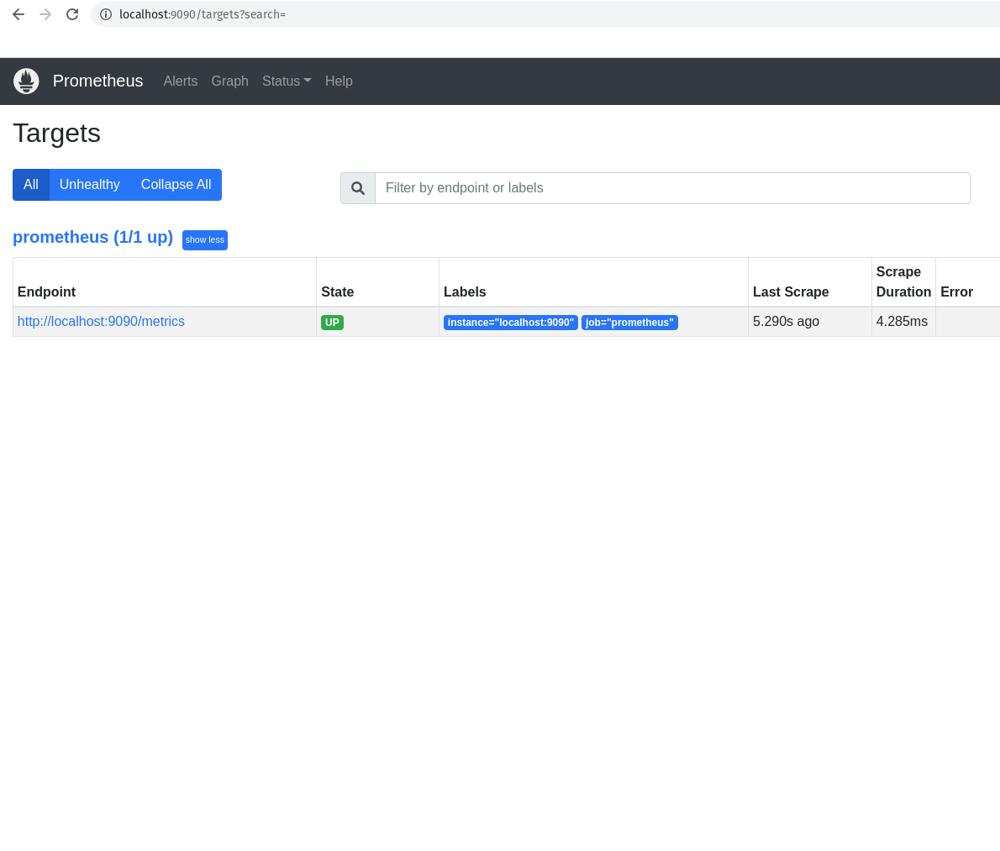
O que temos que fazer agora é adicionar o nosso novo target, ou host alvo, ou chame lá como você quiser. hahaha.
Adicionando o nosso primeiro exporter para o Prometheus
Primeira coisa que precisamos fazer é editar o arquivo prometheus.yml para adicionar o nosso primeiro exporter.
Como sabemos, o nosso arquivo prometheus.yml está no diretório /etc/prometheus/.
Edite o arquivo prometheus.yml para adicionar o seguinte:
global: # Configurações globais do Prometheus, ou seja, configurações que serão utilizadas em todos os jobs caso não sejam configuradas separadamente dentro de cada job.
scrape_interval: 15s # Intervalo de coleta dos dados, ou seja, a cada 15 segundos o Prometheus vai até o alvo monitorado coletar as métricas, o padrão é 1 minuto.
evaluation_interval: 15s # Intervalo para o Prometheus avaliar as regras de alerta, o padrão é 1 minuto. Não estamos utilizando regras para os alertas, vamos manter aqui somente para referência.
scrape_timeout: 10s # Intervalos para o Prometheus aguardar o alvo monitorado responder antes de considerar que o alvo está indisponível, o padrão é 10 segundos.
rule_files: # Inicio da definição das regras de alerta, nesse primeiro exemplo vamos deixar sem regras, pois não iremos utilizar alertas por agora.
scrape_configs: # Inicio da definição das configurações de coleta, ou seja, como o Prometheus vai coletar as métricas e onde ele vai encontrar essas métricas.
- job_name: "prometheus" # Nome do job, ou seja, o nome do serviço que o Prometheus vai monitorar.
static_configs: # Inicio da definição das configurações estáticas, ou seja, configurações que não serão alteradas durante o processo de coleta.
- targets: ["localhost:9090"] # Endereço do alvo monitorado, ou seja, o endereço do serviço que o Prometheus vai monitorar. Nesse caso é o próprio Prometheus.
- job_name: "Primeiro Exporter" # Nome do job que vai coletar as métricas do primeiro exporter.
static_configs:
- targets: ["localhost:8899"] # Endereço do alvo monitorado, ou seja, o nosso primeiro exporter.
Agora que já editamos o arquivo e adicionamos um novo job, precisamos atualizar o Prometheus.
sudo systemctl restart prometheus
Bora conferir se o nosso primeiro exporter já está configurado como target no Prometheus.
curl -s http://localhost:9090/api/v1/targets | jq .
A saída mudou, não?!?
{
"status": "success",
"data": {
"activeTargets": [
{
"discoveredLabels": {
"__address__": "localhost:8899",
"__metrics_path__": "/metrics",
"__scheme__": "http",
"__scrape_interval__": "15s",
"__scrape_timeout__": "10s",
"job": "Primeiro Exporter"
},
"labels": {
"instance": "localhost:8899",
"job": "Primeiro Exporter"
},
"scrapePool": "Primeiro Exporter",
"scrapeUrl": "http://localhost:8899/metrics",
"globalUrl": "http://nu-derval:8899/metrics",
"lastError": "",
"lastScrape": "2022-08-29T18:37:17.239059844+02:00",
"lastScrapeDuration": 0.002143502,
"health": "up",
"scrapeInterval": "15s",
"scrapeTimeout": "10s"
},
{
"discoveredLabels": {
"__address__": "localhost:9090",
"__metrics_path__": "/metrics",
"__scheme__": "http",
"__scrape_interval__": "15s",
"__scrape_timeout__": "10s",
"job": "prometheus"
},
"labels": {
"instance": "localhost:9090",
"job": "prometheus"
},
"scrapePool": "prometheus",
"scrapeUrl": "http://localhost:9090/metrics",
"globalUrl": "http://nu-derval:9090/metrics",
"lastError": "",
"lastScrape": "2022-08-29T18:37:19.08239274+02:00",
"lastScrapeDuration": 0.004655397,
"health": "up",
"scrapeInterval": "15s",
"scrapeTimeout": "10s"
}
],
"droppedTargets": []
}
}
Essa é a saída que é importante para nos sabermos se o nosso primeiro exporter está configurado como target no Prometheus.
"activeTargets": [
{
"discoveredLabels": {
"__address__": "localhost:8899",
"__metrics_path__": "/metrics",
"__scheme__": "http",
"__scrape_interval__": "15s",
"__scrape_timeout__": "10s",
"job": "Primeiro Exporter"
},
"labels": {
"instance": "localhost:8899",
"job": "Primeiro Exporter"
},
"scrapePool": "Primeiro Exporter",
"scrapeUrl": "http://localhost:8899/metrics",
"globalUrl": "http://nu-derval:8899/metrics",
"lastError": "",
"lastScrape": "2022-08-29T18:37:17.239059844+02:00",
"lastScrapeDuration": 0.002143502,
"health": "up",
"scrapeInterval": "15s",
"scrapeTimeout": "10s"
},
Caso queira fazer um grep na saída para ver se o nosso primeiro exporter está na lista de targets, vamos fazer isso:
curl -s http://localhost:9090/api/v1/targets | jq . | grep -i "localhost:8899"
E ainda podemos ver via navegador, conforme abaixo:
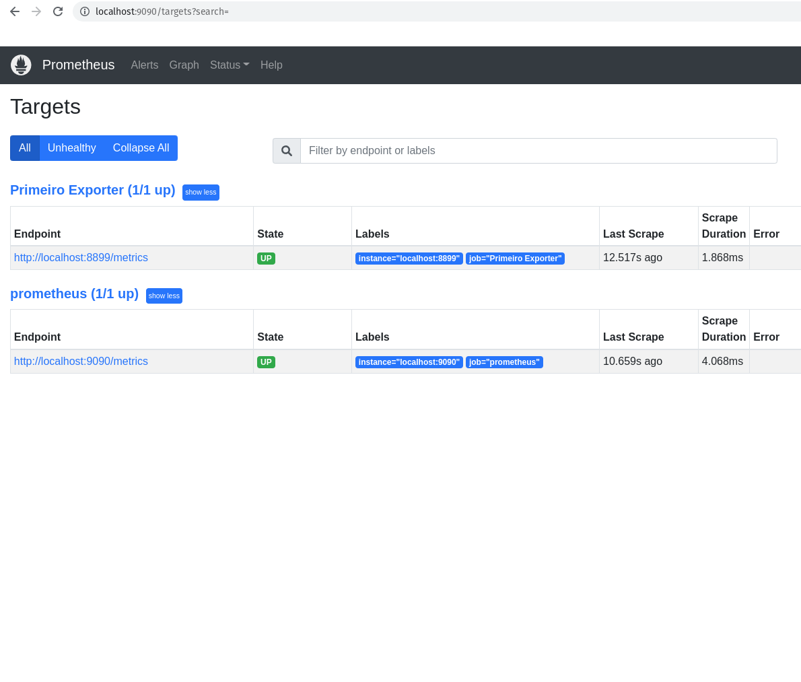
Visualizando as métricas do nosso primeiro exporter
Muito bem, fizemos tudo isso somente para mostrar uma nova métrica aparecendo no Prometheus, além da métrica que já vem por padrão.
A métrica que criamos é totalmente customizada e nem tem muita utilidade, mas é importante para sabermos todos os detalhes da construção de uma métrica, e como o Prometheus lida com ela, desde o primeiro passo até o último.
Noiz já entendemos como construir uma métrica do zero, aprendemos como o Prometheus lida e armazena ela, agora vamos ver o que precisamos, nesse primeiro momento, para busca-la utilizando as queries no Prometheus.
Vamos acessar a interface web do Prometheus e digite a seguinte query na barra de pesquisa:
numero_de_astronautas
Com isso você já receberá o valor da métrica, ou melhor, o último valor que foi armazenado no Prometheus.
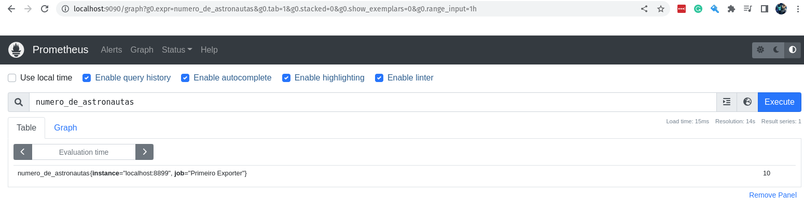
Via linha de comando você já sabe como fazer, certo?
curl -s http://localhost:9090/api/v1/query?query=numero_de_astronautas | jq .
Você vai receber a seguinte saída:
{
"status": "success",
"data": {
"resultType": "vector",
"result": [
{
"metric": {
"__name__": "numero_de_astronautas",
"instance": "localhost:8899",
"job": "Primeiro Exporter"
},
"value": [
1661792007.877,
"10"
]
}
]
}
}
Muito bom! A nossa métrica está por lá! Uma coisa que podemos fazer é começar a ser mais cirúrgicos, e fazer as queries utilizando o máximo de parâmetros possíveis.
Por exemplo, podemos passar alguns labels para a query, como o nome do job e o nome do instance.
numero_de_astronautas{instance="localhost:8899",job="Primeiro Exporter"}
O resultado será o mesmo que o anterior, porém agora com os labels passados. :D
Agora, eu consigo ver o valor dessa métrica nos últimos 5 minutos?
Claro!
numero_de_astronautas{instance="localhost:8899",job="Primeiro Exporter"}[5m]

O valor não muda, afinal não é tão fácil assim mudar os astronautas que estão na Estação Espacial. hahaha
E se adicionarmos mais uma métrica? Vamos imaginar que é importante saber onde está a Estação Espacial nesse momento! Eu sei que ela está no espaço, engraçadão!
O que eu quero saber é em qual parte do planeta Terra (que é redondo) ela está passando por cima? Eu sei que o open-notify tem uma API para isso, vamos adicionar essa nova métrica para o nosso primeiro exporter.
Vamos editar e adicionar essa nova configuração em nosso script Python, o arquivo exporter.py:
import requests # Importa o módulo requests para fazer requisições HTTP
import json # Importa o módulo json para converter o resultado em JSON
import time # Importa o módulo time para fazer o sleep
from prometheus_client import start_http_server, Gauge # Importa o módulo Gauge do Prometheus para criar a nossa métrica e o módulo start_http_server para iniciar o servidor
url_numero_pessoas = 'http://api.open-notify.org/astros.json' # URL para pegar o número de astronautas
url_local_ISS = 'http://api.open-notify.org/iss-now.json' # URL para pegar a localização do ISS
def pega_local_ISS(): # Função para pegar a localização da ISS
try:
"""
Pegar o local da estação espacial internacional
"""
response = requests.get(url_local_ISS) # Faz a requisição para a URL
data = response.json() # Converte o resultado em JSON
return data['iss_position'] # Retorna o resultado da requisição
except Exception as e: # Caso ocorra algum erro
print("Não foi possível acessar a url!") # Imprime uma mensagem de erro
raise e # Lança a exceção
def pega_numero_astronautas(): # Função para pegar o número de astronautas
try: # Tenta fazer a requisição HTTP
"""
Pegar o número de astronautas no espaço
"""
response = requests.get(url) # Faz a requisição HTTP
data = response.json() # Converte o resultado em JSON
return data['number'] # Retorna o número de astronautas
except Exception as e: # Se der algum erro
print("Não foi possível acessar a url!") # Imprime que não foi possível acessar a url
raise e # Lança a exceção
def atualiza_metricas(): # Função para atualizar as métricas
try:
"""
Atualiza as métricas com o número de astronautas e local da estação espacial internacional
"""
numero_pessoas = Gauge('numero_de_astronautas', 'Número de astronautas no espaço') # Cria a métrica para o número de astronautas
longitude = Gauge('longitude_ISS', 'Longitude da Estação Espacial Internacional') # Cria a métrica para a longitude da estação espacial internacional
latitude = Gauge('latitude_ISS', 'Latitude da Estação Espacial Internacional') # Cria a métrica para a latitude da estação espacial internacional
while True: # Enquanto True
numero_pessoas.set(pega_numero_astronautas()) # Atualiza a métrica com o número de astronautas
longitude.set(pega_local_ISS()['longitude']) # Atualiza a métrica com a longitude da estação espacial internacional
latitude.set(pega_local_ISS()['latitude']) # Atualiza a métrica com a latitude da estação espacial internacional
time.sleep(10) # Faz o sleep de 10 segundos
print("O número atual de astronautas no espaço é: %s" % pega_numero_astronautas()) # Imprime o número atual de astronautas no espaço
print("A longitude atual da Estação Espacial Internacional é: %s" % pega_local_ISS()['longitude']) # Imprime a longitude atual da estação espacial internacional
print("A latitude atual da Estação Espacial Internacional é: %s" % pega_local_ISS()['latitude']) # Imprime a latitude atual da estação espacial internacional
except Exception as e: # Se der algum erro
print("Problemas para atualizar as métricas! \n\n====> %s \n" % e) # Imprime que ocorreu um problema para atualizar as métricas
raise e # Lança a exceção
def inicia_exporter(): # Função para iniciar o exporter
try:
"""
Iniciar o exporter
"""
start_http_server(8899) # Inicia o servidor do Prometheus na porta 8899
return True # Retorna True
except Exception as e: # Se der algum erro
print("O Servidor não pode ser iniciado!") # Imprime que não foi possível iniciar o servidor
raise e # Lança a exceção
def main(): # Função principal
try:
inicia_exporter() # Inicia o exporter
print('Exporter Iniciado') # Imprime que o exporter foi iniciado
atualiza_metricas() # Atualiza as métricas
except Exception as e: # Se der algum erro
print('\nExporter Falhou e Foi Finalizado! \n\n======> %s\n' % e) # Imprime que o exporter falhou e foi finalizado
exit(1) # Finaliza o programa com erro
if __name__ == '__main__': # Se o programa for executado diretamente
main() # Executa o main
exit(0) # Finaliza o programa
Muito bem, já adicionamos as novas instruções para o nosso exporter.
Basicamente falamos para a biblioteca prometheus_client que temos duas novas métricas:
- longitude_ISS: Longitude da Estação Espacial Internacional
- latitude_ISS: Latitude da Estação Espacial Internacional
Vamos executar o nosso script para saber se está tudo funcionando bem:
python3 exporter.py
O número atual de astronautas no espaço é: 10
A longitude atual da Estação Espacial Internacional é: 57.7301
A latitude atual da Estação Espacial Internacional é: -32.7545
Muito bem, está funcionando! As duas novas métricas já estão disponível e sendo expostas. Agora já podemos criar uma nova imagem com a nova versão do nosso script!
docker build -t primeiro-exporter:1.0 .
Sending build context to Docker daemon 6.656kB
Step 1/7 : FROM python:3.8-slim
---> bdd3315885d4
Step 2/7 : LABEL maintainer Jeferson Fernando <jeferson@linuxtips.com.br>
---> Using cache
---> 3d1bad97c1cb
Step 3/7 : LABEL description "Dockerfile para criar o nosso primeiro exporter para o Prometheus"
---> Using cache
---> 9f41ad63e03a
Step 4/7 : COPY . /app
---> Using cache
---> 6bc6f9a126f4
Step 5/7 : WORKDIR /app
---> Using cache
---> 05f03d2025c2
Step 6/7 : RUN pip3 install -r requirements.txt
---> Using cache
---> 3f2ec4cdfe6a
Step 7/7 : CMD python3 exporter.py
---> Using cache
---> 6d63ade160c4
Successfully built 6d63ade160c4
Successfully tagged primeiro-exporter:1.0
Vamos executar e conferir o resultado!
docker run -d -p 8899:8899 primeiro-exporter:1.0
Vamos conferir se as nossas métricas estão chegando no Prometheus.
Vamos primeiro verificar a longitude_ISS:
curl -s http://localhost:9090/api/v1/query\?query\=longitude_ISS | jq .
Agora bora conferir a a latitude_ISS:
curl -s http://localhost:9090/api/v1/query\?query\=latitude_ISS | jq .
Evidente que podemos conferir tudo isso via interface web.
Vamos verificar a latitude_ISS nos últimos 05 minutos:
latitude_ISS{instance="localhost:8899",job="Primeiro Exporter"}[5m]

Conhecendo um pouco mais sobre os tipos de dados do Prometheus
Vocês sabem que quando estamos descomplicando algo, nós gostamos de ir a fundo e conhecer no detalhe, tudo o que precisamos para ser um expert no assunto.
Aqui com o Prometheus não seria diferente, queremos que você conheça o Prometheus da forma como nós acreditamos ser importante para os desafios do mundo atual, no ambiente das melhores empresas de tecnologia da mundo.
Estou dizendo isso, pois vamos ter que conhecer com um pouco mais de detalhes os tipos de métricas que podemos criar.
Quais os tipos de dados que o Prometheus suporta e que podemos utilizar quando estamos criando os nossos exporters?
Quando nós criamos o nosso primeiro exporter, nós apenas utilizamos um tipo de dado, o gauge que é o tipo de dado utilizado para crirar métricas que podem ser atualizadas.
Esse é apenas um dos tipos de dados que podemos trabalhar no Prometheus, vamos conhecer mais alguns:
gauge: Medidor
-
O tipo de dado
gaugeé o tipo de dado utilizado para criar métricas que podem ter seus valores alterados para cima ou para baixo, por exemplo, a ultilização de memória ou cpu. Se quiser trazer para exemplos da vida real, podemos falar que aquelas filas que você odeia é o tipo de dadogauge, ou então a temperatura da sua cidade, ela pode ser alterada para cima ou para baixo, ou seja, é um medidor, é umgauge! :D Um exemplo de métrica do tipogaugeé a métricamemory_usage, que é uma métrica que mostra a utilização de memória.memory_usage{instance="localhost:8899",job="Primeiro Exporter"}
counter: Contador
-
O tipo de dado
counteré o tipo de dado utilizado que vai ser incrementado no decorrer do tempo, por exemplo, quando eu quero contar os erros em uma aplicação no decorrer da última hora. O valor atual docounterquase nunca é importante, pois o que queremos dele são os valores durante uma janela de tempo, por exemplo, quantas vezes a minha aplicação falhou durante o final de semana. Normalmente as métricascounterpossuem o sufixo_totalpara indicar que é o total de valores que foram contados, por exemplo:requests_total{instance="localhost:8899",job="Primeiro Exporter"}
histogram: Histograma
-
O tipo de dado
histogramé o tipo de dado que te permite especificar o seu valor através de buckets predefinidos, por exemplo, o tempo de execução de uma aplicação. Com ohistogrameu consigo contar todas as requisições que minha aplicação respondeu entre 0 e 0,5 segundos, ou então as requisições que tiveram respostas entre 1,0 e 2,5 e assim por diante. Por padrão, os buckets predefinidos são até no máximo 10 segundos, se você quiser mais, você pode criar seus próprios buckets personalizados. Um coisa super importante, o Prometheus irá contar cada item em cada bucket, e também a soma dos valores. Uma métrica do tipohistograminclui alguns itens importantes são adicionados ao final do nome da métrica para indicar o tipo de dado e o tamanho do bucket, por exemplo:requests_duration_seconds_bucket{le="0.5"}Onde
leé o valor limite do bucket, o valor0.5indica que o valor do bucket é até 0,5 segundos, ou seja, aqui nesse bucket poderiam estar os requisições que tiveram respostas entre 0 e 0,5 segundos.O
_bucketé um sufixo que indica que o valor é um bucket.Ainda temos alguns sufixos que são importantes e que podem ser úteis para nós:
-
_count: Contador
- O sufixo
_countindica que o valor é um contador, ou seja, o valor é incrementado a cada vez que a métrica é atualizada.
- O sufixo
-
_sum: Soma
- O sufixo
_sumindica que o valor é uma soma, ou seja, o valor é somado a cada vez que a métrica é atualizada.
- O sufixo
-
-
_bucket: Bucket
-
O sufixo
_bucketindica que o valor é um bucket, ou seja, o valor é um bucket.O ponto alto do
histogramé a excelente flexibilidades, pois percentuais e as janelas de tempos podem definidas durante a criação das queries, o ponto negativo é a precisão é um pouco inferior quando comparado com osummary.
-
summary: Resumo
-
O tipo de dado
summaryé bem parecido com ohistogram, com a diferença que os buckets, aqui chamados dequantiles, são definidos por um valor entre 0 e 1, ou seja, o valor do bucket é o valor que está entre os quantiles.Da mesma forma como no
histogram, podemos criar métricas do tiposummarycom alguns itens importantes adicionados ao final do nome da métrica, por exemplo:requests_duration_seconds_sum{instance="localhost:8899",job="Primeiro Exporter"}Utilizamos o sufixo
_sumindica que o valor é uma soma, ou seja, o valor é somado a cada vez que a métrica é atualizada e o sufixo_countpara indicar que o valor é um contador, ou seja, o valor é incrementado a cada vez que a métrica é atualizada.O ponto alto do
summaryé a excelente precisão e o ponto baixo é a baixa flexibilidades, pois percentuais e as janelas de tempos precisam ser definidos durante a criação da métrica e não é possível agregar métricas do tiposummarycom outras métricas do tiposummarydurante a criação das queries.
Percebam que em nosso primeiro exporter, nós somente utilizamos métricas do tipo gauge, pois queremos saber quantas pessoas estão no espaço e também a localização da ISS (International Space Station) ao longo do tempo.
Faz sentido agora? Fala a verdade! Em voz alta! ahahahha!
Em breve vamos criar outros tipos de dados para o Prometheus tratar, agora vamos focar novamente nas queries!
Chega por hoje!
Muito bem!
Agora é hora de reforçar os conceitos aprendidos até agora.
Então é hora de você ler novamente todo o material e começar a práticar.
Não esqueça, a coisa mais importante aqui nesse momento é a prática, e não apenas o conhecimento. O conhecimento é a base, mas o que faz com que você domine o assunto é a prática.
Então já sabe, né?
Curtiu o dia de hoje? Posso contar com o seu feedback nas redes sociais?
Bora ajudar o projeto e o treinamento a ficarem cada dia melhores!
Lição de casa
Agora você tem uma missão, é hora de brincar com tudo o que aprendemos hoje, e claro, tudo o que você puder adicionar a sessão de estudos para deixar o seu aprendizado mais rápido.
A sua lição hoje é criar novas queries somente consumindo as métricas que já estão disponíveis no Prometheus e que você conhece.
Sem preguiça e deixar a imaginação comandar, vamos criar novas queries para nos ajudar a entender melhor o que está acontecendo, certo?
Descomplicando o Prometheus
DAY-3
O que iremos ver hoje?
Durante o nosso terceiro dia nessa jornada do conhecimento em relação ao Prometheus, vamos entender e aprender como construir um exporter, o nosso segundo exporter, e dessa vez em Go.
Vamos aprender muito sobre operadores, como o and e o or, e como podemos utilizar esses operadores para criar queries mais complexas e que nos ajudem a entender melhor o que está acontecendo com nossos serviços.
Vamos ainda aprender muito sobre o sensacional Node Exporter, como configura-lo e consultar as métricas que ele nos disponibiliza.
E claro, realizar algumas queries durante o dia de hoje, somente para não perder o costume.
Ahhh, já vamos deixar o Grafana instalado e configurado para que possamos utiliza-lo durante o Day-4. Vamos instalar hoje, no Day-3, somente para deixa-lo um pouco mais ansioso para o nosso próximo dia de aprendizado. :D
Conteúdo do Day-3
DAY-3
- Descomplicando o Prometheus
- DAY-3
- O que iremos ver hoje?
- Conteúdo do Day-3
- Criando o nosso segundo exporter
- As Funções
- A função rate
- A função irate
- A função delta
- A função increase
- A função sum
- A função count
- A função avg
- A função min
- A função max
- A função avg_over_time
- A função sum_over_time
- A função max_over_time
- A função min_over_time
- A função stddev_over_time
- A função by
- A função without
- A função histogram_quantile e quantile
- Praticando e usando as funções
- Operadores
- Operador de igualdade
- Operador de diferença
- Operador de maior que
- Operador de menor que
- Operador de maior ou igual que
- Operador de menor ou igual que
- Operador de multiplicação
- Operador de divisão
- Operador de adição
- Operador de subtração
- Operador de modulo
- Operador de potenciação
- Operador de agrupamento
- Operador de concatenação
- Operador de comparação de strings
- Chega de operadores por hoje
- O Node Exporter
- Habilitando novos collectors no Node Exporter
- Algumas queries capturando métricas do Node Exporter
- Chega por hoje!
- Lição de casa
- Referências
- DAY-3
Criando o nosso segundo exporter
Agora que já vimos como criar um exporter, vamos criar um segundo exporter para monitorar o consumo de memória do nosso servidor.
Hoje vamos criar um exporter em Go, então antes de mais nada temos que instalar o Go em nossa máquina.
Para instalar o Go no Ubuntu, basta executar o seguinte comando:
sudo apt install golang
Veja no site oficial do Go como instalar em outras distribuições.
Criando o nosso exporter usando Go
Vamos criar um arquivo chamado segundo-exporter.go no diretório segundo-exporter e vamos adicionar o seguinte código:
package main
import ( // importando as bibliotecas necessárias
"log" // log
"net/http" // http
"github.com/pbnjay/memory" // biblioteca para pegar informações de memória
"github.com/prometheus/client_golang/prometheus" // biblioteca para criar o nosso exporter
"github.com/prometheus/client_golang/prometheus/promhttp" // biblioteca criar o servidor web
)
func memoriaLivre() float64 { // função para pegar a memória livre
memoria_livre := memory.FreeMemory() // pegando a memória livre através da função FreeMemory() da biblioteca memory
return float64(memoria_livre) // retornando o valor da memória livre
}
func totalMemory() float64 { // função para pegar a memória total
memoria_total := memory.TotalMemory() // pegando a memória total através da função TotalMemory() da biblioteca memory
return float64(memoria_total) // retornando o valor da memória total
}
var ( // variáveis para definir as nossas métricas do tipo Gauge
memoriaLivreBytesGauge = prometheus.NewGauge(prometheus.GaugeOpts{ // métrica para pegar a memória livre em bytes
Name: "memoria_livre_bytes", // nome da métrica
Help: "Quantidade de memória livre em bytes", // descrição da métrica
})
memoriaLivreMegabytesGauge = prometheus.NewGauge(prometheus.GaugeOpts{ // métrica para pegar a memória livre em megabytes
Name: "memoria_livre_megabytes", // nome da métrica
Help: "Quantidade de memória livre em megabytes", // descrição da métrica
})
totalMemoryBytesGauge = prometheus.NewGauge(prometheus.GaugeOpts{ // métrica para pegar a memória total em bytes
Name: "total_memoria_bytes", // nome da métrica
Help: "Quantidade total de memória em bytes", // descrição da métrica
})
totalMemoryGigaBytesGauge = prometheus.NewGauge(prometheus.GaugeOpts{ // métrica para pegar a memória total em gigabytes
Name: "total_memoria_gigabytes", // nome da métrica
Help: "Quantidade total de memória em gigabytes", // descrição da métrica
})
)
func init() { // função para registrar as métricas
prometheus.MustRegister(memoriaLivreBytesGauge) // registrando a métrica de memória livre em bytes
prometheus.MustRegister(memoriaLivreMegabytesGauge) // registrando a métrica de memória livre em megabytes
prometheus.MustRegister(totalMemoryBytesGauge) // registrando a métrica de memória total em bytes
prometheus.MustRegister(totalMemoryGigaBytesGauge) // registrando a métrica de memória total em gigabytes
}
func main() { // função principal
memoriaLivreBytesGauge.Set(memoriaLivre()) // setando o valor da métrica de memória livre em bytes
memoriaLivreMegabytesGauge.Set(memoriaLivre() / 1024 / 1024) // setando o valor da métrica de memória livre em megabytes
totalMemoryBytesGauge.Set(totalMemory()) // setando o valor da métrica de memória total em bytes
totalMemoryGigaBytesGauge.Set(totalMemory() / 1024 / 1024 / 1024) // setando o valor da métrica de memória total em gigabytes
http.Handle("/metrics", promhttp.Handler()) // criando o servidor web para expor as métricas
log.Fatal(http.ListenAndServe(":7788", nil)) // iniciando o servidor web na porta 7788
}
O código acima está todo comentado explicando o que cada linha faz, então não vou me estender muito explicando o código.
Mas básicamente estamos criando um exporter que vai expor 4 métricas:
memoria_livre_bytes- métrica que vai retornar a quantidade de memória livre em bytesmemoria_livre_megabytes- métrica que vai retornar a quantidade de memória livre em megabytestotal_memoria_bytes- métrica que vai retornar a quantidade total de memória em bytestotal_memoria_gigabytes- métrica que vai retornar a quantidade total de memória em gigabytes
Lembrando que estamos utilizando os pacotes prometheus para criar o nosso exporter e promhttp para expor as métricas através de um servidor web.
Também estamos utilizando o pacote memory para pegar as informações de memória do nosso servidor, valeu usuário do GitHub pbnjay por criar essa biblioteca.
Estamos utilizando o pacote log para logar os erros que possam acontecer e o pacote net/http para criar o webserver.
Agora vamos compilar o nosso código e executar o nosso exporter, mas antes precisamos instalar as bibliotecas que utilizamos em nosso código.
go mod init segundo-exporter
go mod tidy
Agora sim já podemos compilar o nosso código conforme o exemplo abaixo:
go build segundo-exporter.go
Perceba que foi gerado um binário Go chamado segundo-exporter, vamos executa-lo:
./segundo-exporter
Nós configuramos o web server do nosso exporter para rodar na porta 7788, vamos acessar a URL http://localhost:7788/metrics para ver as métricas que o nosso exporter está exportando.
Você pode verificar as métricas atráves do navegador ou utilizando o comando curl:
curl http://localhost:7788/metrics
A saída deve ser algo parecido com o exemplo abaixo:
# HELP go_gc_duration_seconds A summary of the pause duration of garbage collection cycles.
# TYPE go_gc_duration_seconds summary
go_gc_duration_seconds{quantile="0"} 4.4072e-05
go_gc_duration_seconds{quantile="0.25"} 4.4072e-05
go_gc_duration_seconds{quantile="0.5"} 8.7174e-05
go_gc_duration_seconds{quantile="0.75"} 8.7174e-05
go_gc_duration_seconds{quantile="1"} 8.7174e-05
go_gc_duration_seconds_sum 0.000131246
go_gc_duration_seconds_count 2
# HELP go_goroutines Number of goroutines that currently exist.
# TYPE go_goroutines gauge
go_goroutines 8
# HELP go_info Information about the Go environment.
# TYPE go_info gauge
go_info{version="go1.18.1"} 1
# HELP go_memstats_alloc_bytes Number of bytes allocated and still in use.
# TYPE go_memstats_alloc_bytes gauge
go_memstats_alloc_bytes 4.69292e+06
# HELP go_memstats_alloc_bytes_total Total number of bytes allocated, even if freed.
# TYPE go_memstats_alloc_bytes_total counter
go_memstats_alloc_bytes_total 6.622168e+06
# HELP go_memstats_buck_hash_sys_bytes Number of bytes used by the profiling bucket hash table.
# TYPE go_memstats_buck_hash_sys_bytes gauge
go_memstats_buck_hash_sys_bytes 4248
# HELP go_memstats_frees_total Total number of frees.
# TYPE go_memstats_frees_total counter
go_memstats_frees_total 6221
# HELP go_memstats_gc_sys_bytes Number of bytes used for garbage collection system metadata.
# TYPE go_memstats_gc_sys_bytes gauge
go_memstats_gc_sys_bytes 4.709704e+06
# HELP go_memstats_heap_alloc_bytes Number of heap bytes allocated and still in use.
# TYPE go_memstats_heap_alloc_bytes gauge
go_memstats_heap_alloc_bytes 4.69292e+06
# HELP go_memstats_heap_idle_bytes Number of heap bytes waiting to be used.
# TYPE go_memstats_heap_idle_bytes gauge
go_memstats_heap_idle_bytes 2.392064e+06
# HELP go_memstats_heap_inuse_bytes Number of heap bytes that are in use.
# TYPE go_memstats_heap_inuse_bytes gauge
go_memstats_heap_inuse_bytes 5.24288e+06
# HELP go_memstats_heap_objects Number of allocated objects.
# TYPE go_memstats_heap_objects gauge
go_memstats_heap_objects 22935
# HELP go_memstats_heap_released_bytes Number of heap bytes released to OS.
# TYPE go_memstats_heap_released_bytes gauge
go_memstats_heap_released_bytes 1.662976e+06
# HELP go_memstats_heap_sys_bytes Number of heap bytes obtained from system.
# TYPE go_memstats_heap_sys_bytes gauge
go_memstats_heap_sys_bytes 7.634944e+06
# HELP go_memstats_last_gc_time_seconds Number of seconds since 1970 of last garbage collection.
# TYPE go_memstats_last_gc_time_seconds gauge
go_memstats_last_gc_time_seconds 1.6623888726616032e+09
# HELP go_memstats_lookups_total Total number of pointer lookups.
# TYPE go_memstats_lookups_total counter
go_memstats_lookups_total 0
# HELP go_memstats_mallocs_total Total number of mallocs.
# TYPE go_memstats_mallocs_total counter
go_memstats_mallocs_total 29156
# HELP go_memstats_mcache_inuse_bytes Number of bytes in use by mcache structures.
# TYPE go_memstats_mcache_inuse_bytes gauge
go_memstats_mcache_inuse_bytes 38400
# HELP go_memstats_mcache_sys_bytes Number of bytes used for mcache structures obtained from system.
# TYPE go_memstats_mcache_sys_bytes gauge
go_memstats_mcache_sys_bytes 46800
# HELP go_memstats_mspan_inuse_bytes Number of bytes in use by mspan structures.
# TYPE go_memstats_mspan_inuse_bytes gauge
go_memstats_mspan_inuse_bytes 107712
# HELP go_memstats_mspan_sys_bytes Number of bytes used for mspan structures obtained from system.
# TYPE go_memstats_mspan_sys_bytes gauge
go_memstats_mspan_sys_bytes 114240
# HELP go_memstats_next_gc_bytes Number of heap bytes when next garbage collection will take place.
# TYPE go_memstats_next_gc_bytes gauge
go_memstats_next_gc_bytes 5.281792e+06
# HELP go_memstats_other_sys_bytes Number of bytes used for other system allocations.
# TYPE go_memstats_other_sys_bytes gauge
go_memstats_other_sys_bytes 1.43568e+06
# HELP go_memstats_stack_inuse_bytes Number of bytes in use by the stack allocator.
# TYPE go_memstats_stack_inuse_bytes gauge
go_memstats_stack_inuse_bytes 688128
# HELP go_memstats_stack_sys_bytes Number of bytes obtained from system for stack allocator.
# TYPE go_memstats_stack_sys_bytes gauge
go_memstats_stack_sys_bytes 688128
# HELP go_memstats_sys_bytes Number of bytes obtained from system.
# TYPE go_memstats_sys_bytes gauge
go_memstats_sys_bytes 1.4633744e+07
# HELP go_threads Number of OS threads created.
# TYPE go_threads gauge
go_threads 13
# HELP memoria_livre_bytes Quantidade de memória livre em bytes
# TYPE memoria_livre_bytes gauge
memoria_livre_bytes 5.0984931328e+10
# HELP memoria_livre_megabytes Quantidade de memória livre em megabytes
# TYPE memoria_livre_megabytes gauge
memoria_livre_megabytes 48623.01953125
# HELP process_cpu_seconds_total Total user and system CPU time spent in seconds.
# TYPE process_cpu_seconds_total counter
process_cpu_seconds_total 0.02
# HELP process_max_fds Maximum number of open file descriptors.
# TYPE process_max_fds gauge
process_max_fds 1.048576e+06
# HELP process_open_fds Number of open file descriptors.
# TYPE process_open_fds gauge
process_open_fds 35
# HELP process_resident_memory_bytes Resident memory size in bytes.
# TYPE process_resident_memory_bytes gauge
process_resident_memory_bytes 1.4884864e+07
# HELP process_start_time_seconds Start time of the process since unix epoch in seconds.
# TYPE process_start_time_seconds gauge
process_start_time_seconds 1.66238886841e+09
# HELP process_virtual_memory_bytes Virtual memory size in bytes.
# TYPE process_virtual_memory_bytes gauge
process_virtual_memory_bytes 1.494904832e+09
# HELP process_virtual_memory_max_bytes Maximum amount of virtual memory available in bytes.
# TYPE process_virtual_memory_max_bytes gauge
process_virtual_memory_max_bytes 1.8446744073709552e+19
# HELP promhttp_metric_handler_requests_in_flight Current number of scrapes being served.
# TYPE promhttp_metric_handler_requests_in_flight gauge
promhttp_metric_handler_requests_in_flight 1
# HELP promhttp_metric_handler_requests_total Total number of scrapes by HTTP status code.
# TYPE promhttp_metric_handler_requests_total counter
promhttp_metric_handler_requests_total{code="200"} 6
promhttp_metric_handler_requests_total{code="500"} 0
promhttp_metric_handler_requests_total{code="503"} 0
# HELP total_memoria_bytes Quantidade total de memória em bytes
# TYPE total_memoria_bytes gauge
total_memoria_bytes 6.7332653056e+10
# HELP total_memoria_gigabytes Quantidade total de memória em gigabytes
# TYPE total_memoria_gigabytes gauge
total_memoria_gigabytes 62.70841979980469
Perceba que as nossas métricas estão lá, são elas:
memoria_livre_bytesmemoria_livre_megabytestotal_memoria_bytestotal_memoria_gigabytes
Está funcionando lindamente.
Adicionando o nosso exporter no container
Agora vamos adicionar o nosso segundo exporter em um outro container, para isso vamos criar um arquivo chamado Dockerfile no diretório segundo-exporter com o seguinte conteúdo:
FROM golang:1.19.0-alpine3.16 AS buildando
WORKDIR /app
COPY . /app
RUN go build segundo-exporter.go
FROM alpine:3.16
LABEL maintainer Jeferson Fernando <jeferson@linuxtips.com.br>
LABEL description "Executando o nosso segundo exporter"
COPY --from=buildando /app/segundo-exporter /app/segundo-exporter
EXPOSE 7788
WORKDIR /app
CMD ["./segundo-exporter"]
Agora vamos buildar a imagem do nosso segundo exporter, para isso vamos executar o seguinte comando:
docker build -t segundo-exporter:1.0 .
Vamos listar a nossa nova imagem de container com o nosso segundo exporter:
docker images | grep segundo-exporter
Muito bom, está lá, agora vamos executar o nosso segundo exporter:
docker run -d --name segundo-exporter -p 7788:7788 segundo-exporter:1.0
Agora vamos listar os nossos containers em execução:
docker ps
Ele está lá:
CONTAINER ID IMAGE COMMAND CREATED STATUS PORTS NAMES
e51e819c6069 segundo-exporter:1.0 "./segundo-exporter" 6 seconds ago Up 5 seconds 0.0.0.0:7788->7788/tcp, :::7788->7788/tcp segundo-exporter
Vamos acessar as métricas do nosso segundo exporter:
curl http://localhost:7788/metrics
Tudo funcionando maravilhosamente bem!
Adicionando o novo Target no Prometheus
Agora já podemos configurar o Prometheus para monitorar o nosso segundo exporter. Para isso temos que editar o arquivo prometheus.yml e adicionar o seguinte conteúdo:
global:
scrape_interval: 15s
evaluation_interval: 15s
rule_files:
scrape_configs:
- job_name: "prometheus"
static_configs:
- targets: ["localhost:9090"]
- job_name: "Meu Primeiro Exporter"
static_configs:
- targets: ["localhost:8899"]
- job_name: 'segundo-exporter'
static_configs:
- targets: ['localhost:7788']
Pronto, agora vamos fazer o restart do Prometheus para que ele carregue as novas configurações:
systemctl restart prometheus
Vocês também pode fazer isso via comando kill, mas o restart é mais gostosinho de ai meu dels.
kill -HUP $(pidof prometheus)
Agora vamos acessar o Prometheus e verificar se o novo target e as nossas novas métricas estão por lá:
http://localhost:9090
O nosso novo target está lá:

E as nossa novas métricas também:


As Funções
Uma coisa muito importante é se sentir confortável com o uso da PromQL, pois é com ela que iremos extrair o máximo de nossas métricas e também do mundo sensacional das time series.
Vamos conhecer algumas funções para criação de queries mais efetivas. Vou listar algumas e outras funções vamos conhecendo conforme vamos avançando.
A função rate
A função rate representa a taxa de crescimento por segundo de uma determinada métrica como média, durante um intervalo de tempo.
rate(metrica)[5m]
Onde metrica é a métrica que você deseja calcular a taxa de crescimento durante um intervalo de tempo de 5 minutos. Você pode utilizar a função rate para trabalhar com métricas do tipo gauge e counter.
Vamos para um exemplo real:
rate(prometheus_http_requests_total{job="prometheus",handler="/api/v1/query"}[5m])
Aqui estou calculando a média da taxa de crescimento por segundo da métrica prometheus_http_requests_total, filtrando por job e handler e durante um intervalo de tempo de 5 minutos. Nesse caso eu quero saber o crescimento nas queries que estão sendo feitas no Prometheus.
A função irate
A função irate representa a taxa de crescimento por segundo de uma determinada métrica, mas diferentemente da função rate, a função irate não faz a média dos valores, ela pega os dois últimos pontos e calcula a taxa de crescimento. Quando representado em um gráfico, é possível ver a diferença entre a função rate e a função irate, enquanto o gráfico com o rate é mais suave, o gráfico com o irate é mais "pontiagudo", você consegue ver quedas e subidas mais nítidas.
irate(metrica[5m])
Onde metrica é a métrica que você deseja calcular a taxa de crescimento, considerando somente os dois últimos pontos, durante um intervalo de tempo de 5 minutos.
Vamos para um exemplo real:
irate(prometheus_http_requests_total{job="prometheus",handler="/api/v1/query"}[5m])
Aqui estou calculando a taxa de crescimento por segundo da métrica prometheus_http_requests_total, considerando somente os dois últimos pontos, filtrando por job e handler e durante um intervalo de tempo de 5 minutos. Nesse caso eu quero saber o crescimento nas queries que estão sendo feitas no Prometheus.
A função delta
A função delta representa a diferença entre o valor atual e o valor anterior de uma métrica. Quando estamos falando de delta estamos falando por exemplo do consumo de um disco. Vamos imaginar que eu queira saber o quando eu usei de disco em um determinado intervalo de tempo, eu posso utilizar a função delta para calcular a diferença entre o valor atual e o valor anterior.
delta(metrica[5m])
Onde metrica é a métrica que você deseja calcular a diferença entre o valor atual e o valor anterior, durante um intervalo de tempo de 5 minutos.
Vamos para um exemplo real:
delta(prometheus_http_response_size_bytes_count{job="prometheus",handler="/api/v1/query"}[5m])
Agora estou calculando a diferença entre o valor atual e o valor anterior da métrica prometheus_http_response_size_bytes_count, filtrando por job e handler e durante um intervalo de tempo de 5 minutos. Nesse caso eu quero saber o quanto de bytes eu estou consumindo nas queries que estão sendo feitas no Prometheus.
A função increase
Da mesma forma que a função delta, a função increase representa a diferença entre o primeiro e último valor durante um intervalo de tempo, porém a diferença é que a função increase considera que o valor é um contador, ou seja, o valor é incrementado a cada vez que a métrica é atualizada.
Ela começa com o valor 0 e vai somando o valor da métrica a cada atualização.
Você já pode imaginar qual o tipo de métrica que ela trabalha, certo?
Qual? Counter!
increase(metrica[5m])
Onde metrica é a métrica que você deseja calcular a diferença entre o primeiro e último valor durante um intervalo de tempo de 5 minutos.
Vamos para um exemplo real:
increase(prometheus_http_requests_total{job="prometheus",handler="/api/v1/query"}[5m])
Aqui estou calculando a diferença entre o primeiro e último valor da métrica prometheus_http_requests_total, filtrando por job e handler e durante um intervalo de tempo de 5 minutos.
Você pode acompanhar o resultado dessa query clicando em Graph e depois em Execute, assim você vai ver o gráfico com o resultado da query fazendo mais sentindo.
A função sum
A função sum representa a soma de todos os valores de uma métrica.
Você pode utilizar a função sum nos tipos de dados counter, gauge, histogram e summary.
Um exemplo de uso da função sum é quando você quer saber o quanto de memória está sendo utilizada por todos os seus containers, ou o quanto de memória está sendo utilizada por todos os seus pods.
sum(metrica)
Onde metrica é a métrica que você deseja somar.
Vamos para um exemplo real:
sum(go_memstats_alloc_bytes{job="prometheus"})
Aqui estou somando todos os valores da métrica go_memstats_alloc_bytes, filtrando por job e durante um intervalo de tempo de 5 minutos.
A função count
Outra função bem utilizada é função count representa o contador de uma métrica.
Você pode utilizar a função count nos tipos de dados counter, gauge, histogram e summary.
Um exemplo de uso da função count é quando você quer saber quantos containers estão rodando em um determinado momento ou quantos de seus pods estão em execução.
count(metrica)
Onde metrica é a métrica que você deseja contar.
Vamos para um exemplo real:
count(prometheus_http_requests_total)
Teremos como resultado o número de valores que a métrica prometheus_http_requests_total possui.
A função avg
A função avg representa o valor médio de uma métrica.
Você pode utilizar a função avg nos tipos de dados counter, gauge, histogram e summary.
Essa é uma das funções mais utilizadas, pois é muito comum você querer saber o valor médio de uma métrica, por exemplo, o valor médio de memória utilizada por um container.
avg(metrica)
Onde metrica é a métrica que você deseja calcular a média.
A função min
A função min representa o valor mínimo de uma métrica.
Você pode utilizar a função min nos tipos de dados counter, gauge, histogram e summary.
Um exemplo de uso da função min é quando você quer saber qual o menor valor de memória utilizada por um container.
min(metrica)
Onde metrica é a métrica que você deseja calcular o mínimo.
A função max
A função max representa o valor máximo de uma métrica.
Um exemplo de uso da função max é quando você quer saber qual o maior valor de memória pelos nodes de um cluster Kubernetes.
max(metrica)
Onde metrica é a métrica que você deseja calcular o máximo.
A função avg_over_time
A função avg_over_time representa a média de uma métrica durante um intervalo de tempo.
Normalmente utilizada para calcular a média de uma métrica durante um intervalo de tempo, como por exemplo, a média de requisições por segundo durante um intervalo de tempo ou ainda as pessoas que estão no espaço durante o último ano. :D
avg_over_time(metrica[5m])
Onde metrica é a métrica que você deseja calcular a média durante um intervalo de tempo de 5 minutos.
Vamos para um exemplo real:
avg_over_time(prometheus_http_requests_total{handler="/api/v1/query"}[5m])
Agora estou calculando a média da métrica prometheus_http_requests_total, filtrando por handler e durante um intervalo de tempo de 5 minutos.
A função sum_over_time
Também temos a função sum_over_time, que representa a soma de uma métrica durante um intervalo de tempo. Vimos a avg_over_time que representa a média, a sum_over_time representa a soma dos valores durante um intervalo de tempo.
Imagina calcular a soma de uma métrica durante um intervalo de tempo, como por exemplo, a soma de requisições por segundo durante um intervalo de tempo ou ainda a soma de pessoas que estão no espaço durante o último ano.
sum_over_time(metrica[5m])
Onde metrica é a métrica que você deseja calcular a soma durante um intervalo de tempo de 5 minutos.
Vamos para um exemplo real:
sum_over_time(prometheus_http_requests_total{handler="/api/v1/query"}[5m])
Agora estou calculando a soma da métrica prometheus_http_requests_total, filtrando por handler e durante um intervalo de tempo de 5 minutos.
A função max_over_time
A função max_over_time representa o valor máximo de uma métrica durante um intervalo de tempo.
max_over_time(metrica[5m])
Onde metrica é a métrica que você deseja calcular o valor máximo durante um intervalo de tempo de 5 minutos.
Vamos para um exemplo real:
max_over_time(prometheus_http_requests_total{handler="/api/v1/query"}[5m])
Agora estamos buscando o valor máximo da métrica prometheus_http_requests_total, filtrando por handler e durante um intervalo de tempo de 5 minutos.
A função min_over_time
A função min_over_time representa o valor mínimo de uma métrica durante um intervalo de tempo.
min_over_time(metrica[5m])
Onde metrica é a métrica que você deseja calcular o valor mínimo durante um intervalo de tempo de 5 minutos.
Vamos para um exemplo real:
min_over_time(prometheus_http_requests_total{handler="/api/v1/query"}[5m])
Agora estamos buscando o valor mínimo da métrica prometheus_http_requests_total, filtrando por handler e durante um intervalo de tempo de 5 minutos.
A função stddev_over_time
A função stddev_over_time representa o desvio padrão, que são os valores que estão mais distantes da média, de uma métrica durante um intervalo de tempo.
Um bom exemplo seria para o calculo de desvio padrão para saber se houve alguma anomalia no consumo de disco, por exemplo.
stddev_over_time(metrica[5m])
Onde metrica é a métrica que você deseja calcular o desvio padrão durante um intervalo de tempo de 5 minutos.
Vamos para um exemplo real:
stddev_over_time(prometheus_http_requests_total{handler="/api/v1/query"}[10m])
Agora estamos buscando os desvios padrões da métrica prometheus_http_requests_total, filtrando por handler e durante um intervalo de tempo de 10 minutos. Vale a pena verificar o gráfico, pois facilita a visualização dos valores.
A função by
A sensacional e super utilizada função by é utilizada para agrupar métricas. Com ela é possível agrupar métricas por labels, por exemplo, se eu quiser agrupar todas as métricas que possuem o label job eu posso utilizar a função by da seguinte forma:
sum(metrica) by (job)
Onde metrica é a métrica que você deseja agrupar e job é o label que você deseja agrupar.
Vamos para um exemplo real:
sum(prometheus_http_requests_total) by (code)
Agora estamos somando a métrica prometheus_http_requests_total e agrupando por code, assim sabemos quantas requisições foram feitas por código de resposta.
A função without
A função without é utilizada para remover labels de uma métrica.
Você pode utilizar a função without nos tipos de dados counter, gauge, histogram e summary e frequentemente usado em conjunto com a função sum.
Por exemplo, se eu quiser remover o label `job` de uma métrica, eu posso utilizar a função `without` da seguinte forma:
```PROMQL
sum(metrica) without (job)
Onde metrica é a métrica que você deseja remover o label job.
Vamos para um exemplo real:
sum(prometheus_http_requests_total) without (handler)
Agora estamos somando a métrica prometheus_http_requests_total e removendo o label handler, assim sabemos quantas requisições foram feitas por código de resposta, sem saber qual handler foi utilizado para ter uma visão mais geral e focado no código de resposta.
A função histogram_quantile e quantile
As funções histogram_quantile e quantile são muito parecidas, porém a histogram_quantile é utilizada para calcular o percentil de uma métrica do tipo histogram e a quantile é utilizada para calcular o percentil de uma métrica do tipo summary.
Basicamente utilizamos esses funções para saber qual é o valor de uma métrica em um determinado percentil.
quantile(0.95, metrica)
Onde metrica é a métrica do tipo histogram que você deseja calcular o percentil e 0.95 é o percentil que você deseja calcular.
Vamos para um exemplo real:
quantile(0.95, prometheus_http_request_duration_seconds_bucket)
Agora estamos calculando o percentil de 95% da métrica prometheus_http_request_duration_seconds_bucket, assim sabemos qual é o tempo de resposta de 95% das requisições.
Praticando e usando as funções
Agora que já vimos a descrição de algumas funções, vamos começar a praticar e criar algumas queries utilizando as funções.
Vamos criar uma query para saber o quanto de cpu está sendo utilizado no nosso primeiro exporter durante cada execução.
sum(rate(process_cpu_seconds_total{job="Primeiro Exporter"}[1m])) by (instance)
Vamos entender melhor a query acima, o que ela faz?
- Onde
sum(rate(process_cpu_seconds_total{job="Primeiro Exporter"}[1m]))é a métrica que você deseja extrair. - Onde
by (instance)é o agrupamento que você deseja fazer.
Ok, conseguimos dividir a query em duas partes, a primeira é a métrica e seus detalhes e a segunda é o agrupamento.
Agora vamos dividir a primeira um pouco mais.
process_cpu_seconds_total{job="Primeiro Exporter"}[1m]
Nessa primeira query, estamos pedindo o valor da métrica process_cpu_seconds_total no último 1 minuto.
O retorno são 04 valores, pois o scraping do Prometheus é feito em intervalos de 15 segundos.
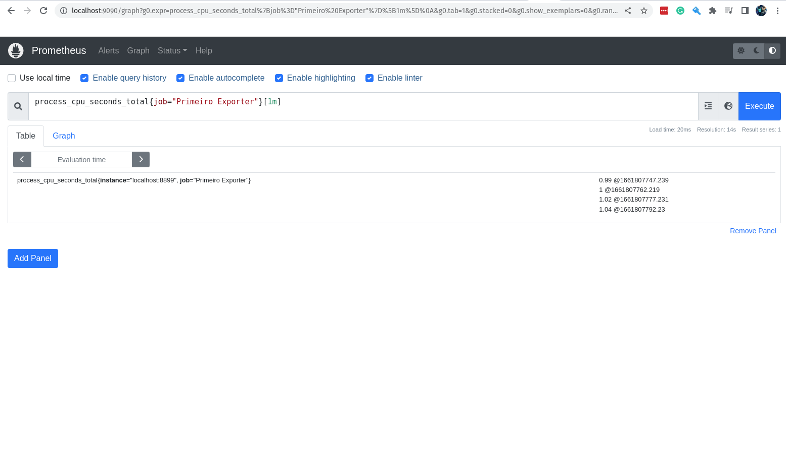
Maravilha, está rolando bem! Agora eu quero saber a média do consumo de cpu no nosso primeiro exporter durante o último 1 minuto.
avg(rate(process_cpu_seconds_total{job="Primeiro Exporter"}[1m]))
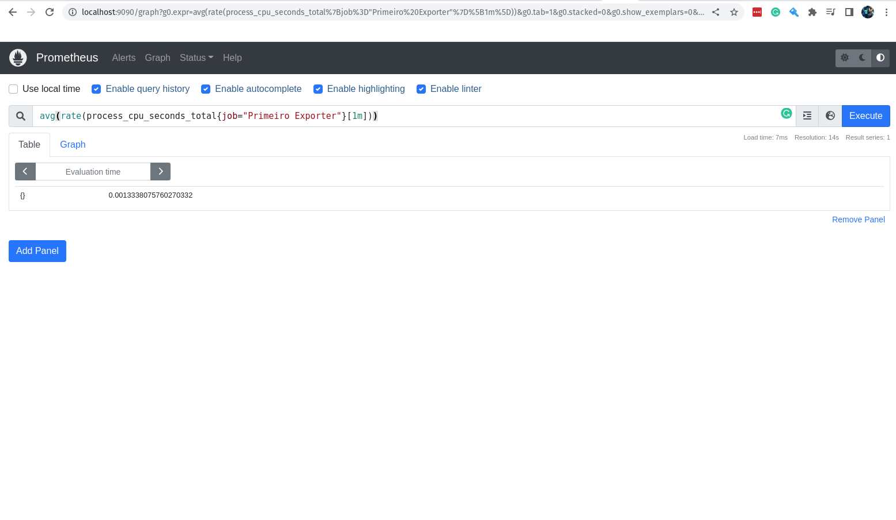
Com isso nós temos a média do consumo de cpu no nosso primeiro exporter durante o último 1 minuto, e perceba que estamos utilizando a função avg para calcular a média, porém estamos também utilizando a função rate.
Precisamos do rate para calcular a taxa de aumento dos valores da métrica durante o último 1 minuto, conforme solicitado na query acima.
Agora vamos adicionar mais um detalhe a nossa query.
by (instance)
Então ela ficará assim:
avg(rate(process_cpu_seconds_total{job="Primeiro Exporter"}[1m])) by (instance)

Com a função by adicionada, é possível agrupar os valores da métrica por um determinado campo, no nosso caso estamos agrupando por instance.
Em nosso exemplo somente temos uma instância no job Primeiro Exporter, então o agrupamente não tem efeito.
Mas se retirarmos da query o label job, o resultado trará também a instância do job prometheus.
avg(rate(process_cpu_seconds_total[1m])) by (instance)
Agora a saída trará também o valor da métrica para a instância do job prometheus.
Caso queira pegar o menor valor da métrica registrada no último 1 minuto, basta utilizar a função min.
min(rate(process_cpu_seconds_total[1m])) by (instance)

Caso queira pegar o maior valor da métrica registrada no último 1 minuto, basta utilizar a função max.
max(rate(process_cpu_seconds_total[1m])) by (instance)
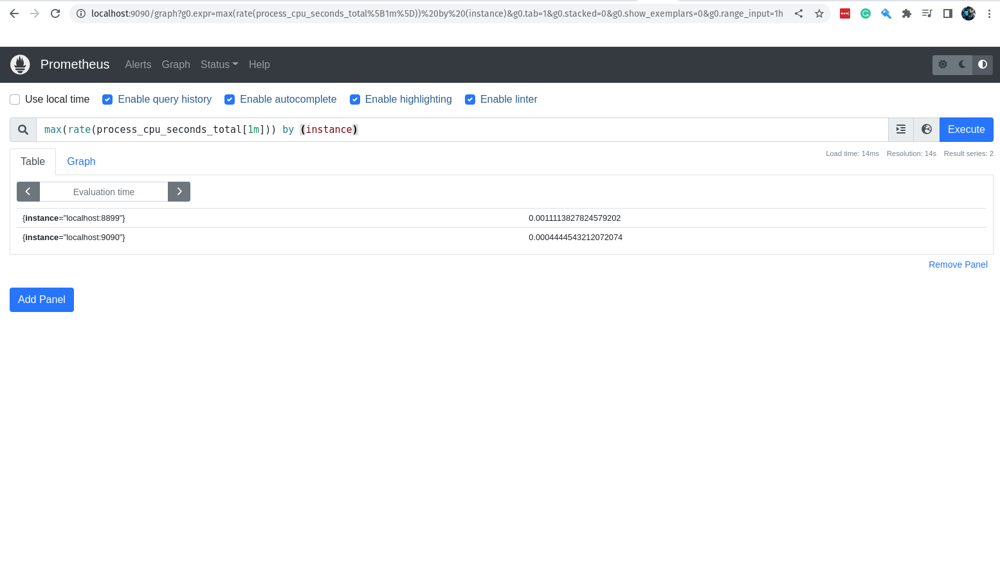
Eu falei bastante sobre as queries e os valores que elas retornam, porém eu nem falei ainda para vocês clicarem na aba Graph e ver os gráficos que são gerados automaticamente.
Vamos ver o gráfico da média do consumo de cpu pelos jobs durante o último 1 minuto.
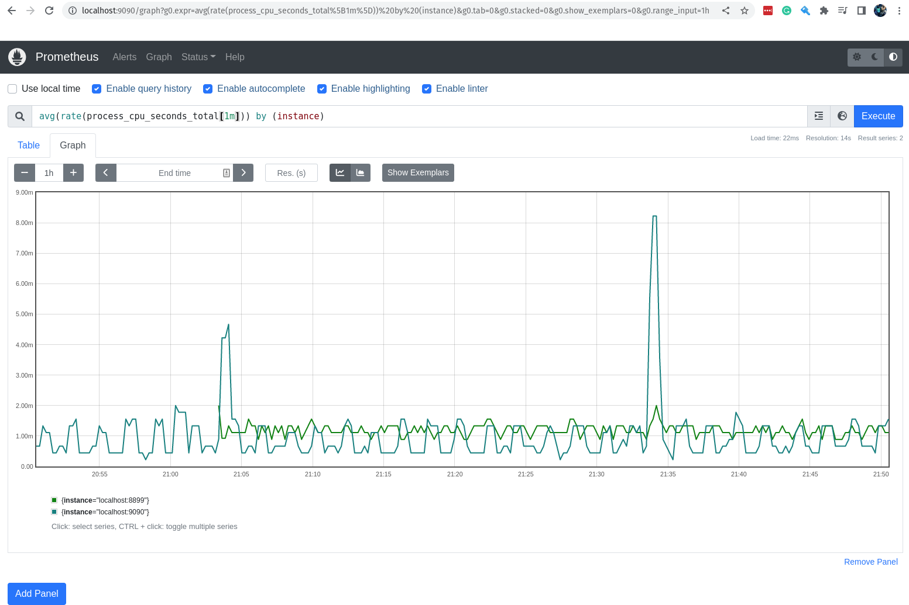
Operadores
Precisamos falar sobre os operadores, super importante para que possamos trazer ainda mais poder ao nosso querido PromQL e obter resultados ainda mais interessantes.
Vamos conhecer alguns!
Operador de igualdade
O operador de igualdade é utilizado para comparar se dois valores são iguais.
metrica == 1
Onde metrica é a métrica que você deseja comparar e 1 é o valor que você deseja comparar, logo se o valor da métrica for igual a 1, o resultado será verdadeiro.
Operador de diferença
O operador de diferença é utilizado para comparar se dois valores são diferentes.
metrica != 1
Onde metrica é a métrica que você deseja comparar e 1 é o valor que você deseja comparar, logo se o valor da métrica for diferente de 1, o resultado será verdadeiro.
Operador de maior que
O operador de maior que é utilizado para comparar se um valor é maior que outro.
metrica > 1
Onde metrica é a métrica que você deseja comparar e 1 é o valor que você deseja comparar, logo se o valor da métrica for maior que 1, o resultado será verdadeiro.
Operador de menor que
O operador de menor que é utilizado para comparar se um valor é menor que outro.
metrica < 1
Onde metrica é a métrica que você deseja comparar e 1 é o valor que você deseja comparar, logo se o valor da métrica for menor que 1, o resultado será verdadeiro.
Operador de maior ou igual que
O operador de maior ou igual que é utilizado para comparar se um valor é maior ou igual que outro.
metrica >= 1
Onde metrica é a métrica que você deseja comparar e 1 é o valor que você deseja comparar, logo se o valor da métrica for maior ou igual a 1, o resultado será verdadeiro.
Operador de menor ou igual que
O operador de menor ou igual que é utilizado para comparar se um valor é menor ou igual que outro.
metrica <= 1
Onde metrica é a métrica que você deseja comparar e 1 é o valor que você deseja comparar, logo se o valor da métrica for menor ou igual a 1, o resultado será verdadeiro.
Operador de multiplicação
O operador de multiplicação é utilizado para multiplicar dois valores.
metrica * 1
Onde metrica é a métrica que você deseja multiplicar e 1 é o valor que você deseja multiplicar, logo se o valor da métrica for multiplicado por 1, o resultado será o valor da métrica.
Operador de divisão
O operador de divisão é utilizado para dividir dois valores.
metrica / 1
Onde metrica é a métrica que você deseja dividir e 1 é o valor pelo qual você deseja dividir a metrica. O resultado será o valor da métrica dividido pelo valor que você passou.
Operador de adição
O operador de adição é utilizado para somar dois valores.
metrica + 1
Onde metrica é a métrica que você deseja somar e 1 é o valor que você deseja somar a metrica. O resultado será o valor da métrica somado ao valor que você passou.
Operador de subtração
O operador de subtração é utilizado para subtrair dois valores.
metrica - 1
Onde metrica é a métrica que você deseja subtrair e 1 é o valor que você deseja subtrair da metrica. O resultado será o valor da métrica subtraído pelo valor que você passou.
Operador de modulo
O operador de modulo é utilizado para obter o resto da divisão de dois valores.
metrica % 1
Onde metrica é a métrica que você deseja obter o resto da divisão e 1 é o valor pelo qual você deseja obter o resto da divisão da metrica. O resultado será o resto da divisão da métrica pelo valor que você passou.
Operador de potenciação
O operador de potenciação é utilizado para elevar um valor a uma potência.
metrica ^ 1
Onde metrica é a métrica que você deseja elevar a uma potência e 1 é o valor que você deseja elevar a metrica. O resultado será o valor da métrica elevado ao valor que você passou.
Operador de agrupamento
O operador de agrupamento é utilizado para agrupar expressões.
(metrica + 1) / 2
Perceba que o parenteses foi utilizado para agrupar a expressão (metrica + 1). Onde metrica é a métrica que você deseja somar e 1 é o valor que você deseja somar a metrica. Essa parte da expressão será avaliada primeiro e o resultado será dividido por 2.
Operador de concatenação
O operador de concatenação é utilizado para concatenar strings.
"string_a" + "string_b"
Onde string_a é a primeira string que você deseja concatenar e string_b é a segunda string que você deseja concatenar. O resultado será a concatenação das duas strings, ou seja, a primeira string seguida da segunda string.
Operador de comparação de strings
O operador de comparação de strings é utilizado para comparar se duas strings são iguais.
"string_a" == "string_b"
Onde string_a é a primeira string que você deseja comparar e string_b é a segunda string que você deseja comparar. O resultado será verdadeiro se as duas strings forem iguais.
Chega de operadores por hoje
Conforme você for avançando nos estudos, você irá perceber que esses operadores são muito úteis para criar expressões mais complexas e que podem ser utilizadas para criar alertas mais precisos. Ainda temos alguns operadores que não foram abordados aqui, mas que você pode encontrar na documentação oficial do Prometheus e tbm no decorrer do treinamento.
O Node Exporter
Precisamos falar do exporter mais famoso do universo Prometheus, o sensacional Node Exporter. Com o Node Exporter você consegue coletar métricas de um servidor Linux ou em computadores MacOS, como por exemplo, o uso de CPU, disco, memória, open files, etc.
O Node Exporter é um projeto open source e escrito em Go. Ele é executado no Linux como um serviço e coleta e expõe as métricas do sistema operacional.
Os Collectors
O Node Exporter possui os collectors que são os responsáveis por capturar as métricas do sistema operacional. Por padrão, o Node Exporter vem com um monte de coletores habilitados, mas você pode habilitar outros, caso queira.
Para que você possa consultar a lista de collectors que vem habilitados por padrão, você pode acessar o link abaixo:
Lista dos Collectors habilitados por padrão
Temos ainda a lista com os collectors que estão desabilitados por padrão:
Lista dos Collectors desabilitados por padrão
Vou comentar de alguns collectors que são muito úteis:
arp: Coleta métricas de ARP (Address Resolution Protocol) como por exemplo, o número de entradas ARP, o número de resoluções ARP, etc.bonding: Coleta métricas de interfaces em modo bonding.conntrack: Coleta métricas de conexões via Netfilter como por exemplo, o número de conexões ativas, o número de conexões que estão sendo rastreadas, etc.cpu: Coleta métricas de CPU.diskstats: Coleta métricas de IO de disco como por exemplo o número de leituras e escritas.filefd: Coleta métricas de arquivos abertos.filesystem: Coleta métricas de sistema de arquivos, como tamanho, uso, etc.hwmon: Coleta métricas de hardware como por exemplo a temperatura.ipvs: Coleta métricas de IPVS.loadavg: Coleta métricas de carga do sistema operacional.mdadm: Coleta métricas de RAID como por exemplo o número de discos ativos.meminfo: Coleta métricas de memória como por exemplo o uso de memória, o número de buffers, caches, etc.netdev: Coleta métricas de rede como por exemplo o número de pacotes recebidos e enviados.netstat: Coleta métricas de rede como por exemplo o número de conexões TCP e UDP.os: Coleta métricas de sistema operacional.selinux: Coleta métricas de SELinux como estado e políticas.sockstat: Coleta métricas de sockets.stat: Coleta métricas de sistema como uptime, forks, etc.time: Coleta métricas de tempo como sincronização de relógio.uname: Coleta métricas de informações.vmstat: Coleta métricas de memória virtual.
Mais para frente vamos ver como habilitar ou desabilitar collectors no Node Exporter.
Instalação do Node Exporter no Linux
Vamos instalar o Node Exporter para que possamos ter ainda mais métricas para brincar com o nosso Prometheus, e claro, conhecer esse exporter que é praticamente a escolha padrão da maioria dos ambientes quando estamos falando de métricas de um servidor Linux.
O Node Exporter é um arquivo binário e que precisamos baixar do site oficial do projeto.
Abaixo segue a URL para download do Node Exporter:
https://prometheus.io/download/#node_exporter
Acesse a URL e veja qual a última versão disponível para download. No momento em que escrevo esse mateira, a última versão disponível é a 1.3.1.
Vamos fazer o download do arquivo binário do Node Exporter:
wget https://github.com/prometheus/node_exporter/releases/download/v1.3.1/node_exporter-1.3.1.linux-amd64.tar.gz
Com o arquivo já em nossa máquina, vamos descompactar-lo:
tar -xvzf node_exporter-1.3.1.linux-amd64.tar.gz
Como falamos antes, o Node Exporter é apenas um binário Go, portanto é bem simples fazer a sua instalação em uma máquina Linux. Básicamente vamos seguir o mesmo processo que fizemos para instalar o Prometheus.
Bora mover o arquivo node_exporter para o diretório /usr/local/bin:
sudo mv node_exporter-1.3.1.linux-amd64/node_exporter /usr/local/bin/
Vamos ver se está tudo ok com o nosso Node Exporter:
node_exporter --version
A saída deve ser parecida com essa:
node_exporter, version 1.3.1 (branch: HEAD, revision: a2321e7b940ddcff26873612bccdf7cd4c42b6b6)
build user: root@243aafa5525c
build date: 20211205-11:09:49
go version: go1.17.3
platform: linux/amd64
Tudo em paz, vamos seguir com a instalação.
Vamos criar o usuário node_exporter para ser o responsável pela execução do serviço:
sudo addgroup --system node_exporter
sudo adduser --shell /sbin/nologin --system --group node_exporter
Agora vamos criar o arquivo de configuração do serviço do Node Exporter para o Systemd:
sudo vim /etc/systemd/system/node_exporter.service
Vamos adicionar o seguinte conteúdo:
[Unit] # Inicio do arquivo de configuração do serviço
Description=Node Exporter # Descrição do serviço
Wants=network-online.target # Define que o serviço depende da rede para iniciar
After=network-online.target # Define que o serviço deverá ser iniciado após a rede estar disponível
[Service] # Define as configurações do serviço
User=node_exporter # Define o usuário que irá executar o serviço
Group=node_exporter # Define o grupo que irá executar o serviço
Type=simple # Define o tipo de serviço
ExecStart=/usr/local/bin/node_exporter # Define o caminho do binário do serviço
[Install] # Define as configurações de instalação do serviço
WantedBy=multi-user.target # Define que o serviço será iniciado utilizando o target multi-user
Importante: Não esqueça de tirar os comentários do arquivo de configuração do serviço, inclusive tem o arquivo sem comentários no repositório do Github do projeto. Combinado?
Como você já sabe, toda vez que adicionamos um novo serviço no Systemd, precisamos dar um reload para que o serviço seja reconhecido:
sudo systemctl daemon-reload
E agora vamos iniciar o serviço:
sudo systemctl start node_exporter
Precisamos ver se está tudo em paz com o nosso serviço:
sudo systemctl status node_exporter
Como é bom ver essa saída sempre quando criamos e iniciamos um novo serviço:
Loaded: loaded (/etc/systemd/system/node_exporter.service; disabled; vendor preset: enabled)
Active: active (running) since Wed 2022-09-07 15:15:00 CEST; 3s ago
Main PID: 50853 (node_exporter)
Tasks: 6 (limit: 76911)
Memory: 2.9M
CPU: 5ms
CGroup: /system.slice/node_exporter.service
└─50853 /usr/local/bin/node_exporter
O nosso querido e idolatrado Node Exporter está rodando. Agora vamos habilitar o serviço para que ele seja iniciado sempre que o servidor for reiniciado:
sudo systemctl enable node_exporter
Importante mencionar que o nosso Node Exporter roda na porta 9100. Para acessar as métricas coletadas pelo Node Exporter, basta acessar a URL http://<IP_DA_MAQUINA>:9100/metrics.
Antes de ver as métricas, bora ver se o Node Exporter está utilizando a porta 9100.
Temos o comando ss que nos permite ver as conexões TCP e UDP que estão abertas em nossa máquina. Vamos usar esse comando para ver se o Node Exporter está escutando na porta 9100:
ss -atunp | grep 9100
A saída deve ser parecida com essa:
tcp LISTEN 0 4096 *:9100 *:*
Muito bom! Está tudo certo com o nosso Node Exporter. Agora vamos ver as métricas coletadas por ele:
curl http://localhost:9100/metrics
Lembre-se de mudar o localhost para o IP da sua máquina, caso tenha feito a instalação em outra máquina.
Voltando as métricas coletadas pelo Node Exporter, a saída é gigantesca, são mais de 2 mil métricas, muita coisa. hahaha
Adicionando o Node Exporter no Prometheus
Lembre-se que essas métricas ainda não estão no Prometheus. Para que elas estejam, precisamos configurar o Prometheus para coletar as métricas do Node Exporter, ou seja, configurar o Prometheus para fazer o scrape do Node Exporter, e para isso precisamos criar mais um job no arquivo de configuração do Prometheus para definir o nosso novo target.
Vamos adicionar o seguinte conteúdo no arquivo de configuração do Prometheus:
- job_name: 'node_exporter'
static_configs:
- targets: ['localhost:9100']
Importante: Lembrando novamente para que você mude o localhost para o IP da sua máquina, caso tenha feito a instalação em outra máquina.
O arquivo deverá ficar assim:
global:
scrape_interval: 15s
evaluation_interval: 15s
rule_files:
scrape_configs:
- job_name: "prometheus"
static_configs:
- targets: ["localhost:9090"]
- job_name: "Meu Primeiro Exporter"
static_configs:
- targets: ["localhost:8899"]
- job_name: 'segundo-exporter'
static_configs:
- targets: ['localhost:7788']
- job_name: 'node_exporter'
static_configs:
- targets: ['localhost:9100']
Eu nem vou deixar o arquivo comentado aqui, pois você já sabe como funciona o arquivo de configuração do Prometheus, né? hahaha
Agora vamos reiniciar o Prometheus para que ele leia as novas configurações:
sudo systemctl restart prometheus
Vamos ver se o nosso novo job foi criado com sucesso:
curl http://localhost:9090/targets
Caso você queira ver o novo target via interface web do Prometheus, basta acessar a URL http://localhost:9090/targets. Se liga no print abaixo:
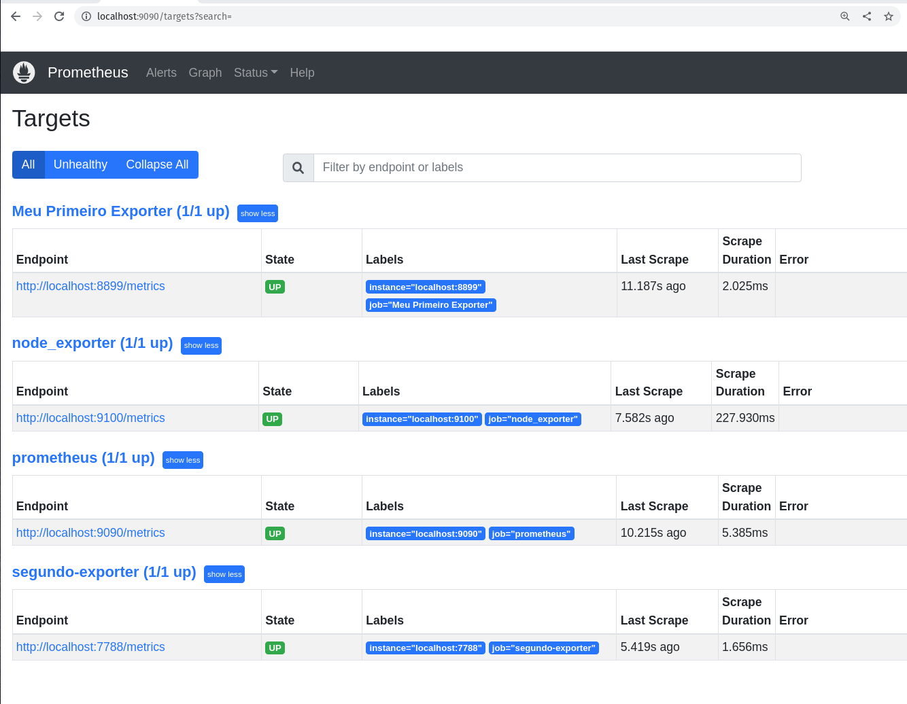
Está lá, o nosso novo job foi criado com sucesso. Agora vamos ver se o Prometheus está coletando as métricas do Node Exporter. Vamos passar o nome do job para o Prometheus, assim a nossa query ficará ainda mais específica:
curl -GET http://localhost:9090/api/v1/query --data-urlencode "query=node_cpu_seconds_total{job='node_exporter'}" | jq .
A saída também é bastante grande, e a máquina que eu estou testando tem 32 CPUs, então vou colocar aqui aqui somente uma pequena parte da saída:
{
"status": "success",
"data": {
"resultType": "vector",
"result": [
{
"metric": {
"__name__": "node_cpu_seconds_total",
"cpu": "0",
"instance": "localhost:9100",
"job": "node_exporter",
"mode": "idle"
},
"value": [
1662558580.478,
"32077.95"
]
},
{
"metric": {
"__name__": "node_cpu_seconds_total",
"cpu": "0",
"instance": "localhost:9100",
"job": "node_exporter",
"mode": "iowait"
},
"value": [
1662558580.478,
"2.28"
]
},
{
Agora vamos fazer a mesma query, mas lá na interface web do Prometheus:

Habilitando novos collectors no Node Exporter
Uma coisa bem interessante em relação ao Node Exporter é a quantidade de collectors que ele possui. Esses collectors são responsáveis por coletar as métricas de cada serviço que você quiser monitorar. Por exemplo, se você quiser monitorar os serviços que são gerenciados pelo systemd, você pode habilitar o collector do systemd no Node Exporter, vamos ver como fazer isso.
Primeira coisa é criar um novo arquivo onde vamos colocar todas os collectors que queremos habilitar no Node Exporter, no nossa caso, somente o módulo do systemd.
Vamos criar o arquivo /etc/node_exporter/node_exporter_options e o diretório /etc/node_exporter/ caso ele não exista:
sudo mkdir /etc/node_exporter
sudo vim /etc/node_exporter/node_exporter_options
Agora vamos adicionar a variável de ambiente OPTIONS no arquivo /etc/node_exporter/node_exporter_options:
OPTIONS="--collector.systemd"
Vamos ajustar as permissões do arquivo /etc/node_exporter/node_exporter_options:
sudo chown -R node_exporter:node_exporter /etc/node_exporter/
E no arquivo de configuração do serviço do Node Exporter para o SystemD, vamos adicionar a variável de ambiente OPTIONS e o arquivo vai ficar assim:
[Unit]
Description=Node Exporter
Wants=network-online.target
After=network-online.target
[Service]
User=node_exporter
Group=node_exporter
Type=simple
EnvironmentFile=/etc/node_exporter/node_exporter_options
ExecStart=/usr/local/bin/node_exporter $OPTIONS
[Install]
WantedBy=multi-user.target
Pronto, adicionamos o nosso novo arquivo que contém a variável de ambiente OPTIONS e agora vamos reiniciar o serviço do Node Exporter para que ele leia as novas configurações:
sudo systemctl daemon-reload
sudo systemctl restart node_exporter
Agora vamos ver se o Node Exporter está coletando as métricas do systemd:
curl -GET http://localhost:9100/metrics | grep systemd
A saída é bem grande, então vou colocar aqui somente uma pequena parte da saída:
node_scrape_collector_success{collector="systemd"} 1
# HELP node_systemd_socket_accepted_connections_total Total number of accepted socket connections
# TYPE node_systemd_socket_accepted_connections_total counter
node_systemd_socket_accepted_connections_total{name="acpid.socket"} 0
node_systemd_socket_accepted_connections_total{name="apport-forward.socket"} 0
node_systemd_socket_accepted_connections_total{name="avahi-daemon.socket"} 0
node_systemd_socket_accepted_connections_total{name="cups.socket"} 0
node_systemd_socket_accepted_connections_total{name="dbus.socket"} 0
node_systemd_socket_accepted_connections_total{name="dm-event.socket"} 0
node_systemd_socket_accepted_connections_total{name="docker.socket"} 0
node_systemd_socket_accepted_connections_total{name="libvirtd-admin.socket"} 0
node_systemd_socket_accepted_connections_total{name="libvirtd-ro.socket"} 0
node_systemd_socket_accepted_connections_total{name="libvirtd.socket"} 0
node_systemd_socket_accepted_connections_total{name="lvm2-lvmpolld.socket"} 0
node_systemd_socket_accepted_connections_total{name="nordvpnd.socket"} 0
node_systemd_socket_accepted_connections_total{name="snapd.socket"} 0
node_systemd_socket_accepted_connections_total{name="syslog.socket"} 0
node_systemd_socket_accepted_connections_total{name="systemd-fsckd.socket"} 0
Done! Tarefa concluída e super tranquilo de fazer. Agora você já sabe como habilitar novos collectors no Node Exporter e coletar novas métricas! \o/
Algumas queries capturando métricas do Node Exporter
Agora que já sabemos como coletar as métricas do Node Exporter, vamos fazer algumas queries para capturar algumas métricas do Node Exporter.
1. Quantas CPU tem a minha máquina?
count(node_cpu_seconds_total{job='node_exporter', mode='idle'})

Estamos pedindo o Prometheus para contar quantas métricas temos com o nome node_cpu_seconds_total, que estão associadas ao job node_exporter e que o mode é idle. O resultado é 32, ou seja, a minha máquina tem 32 CPUs.
Utilizei o modo idle para contar as CPUs. Cada CPU possui alguns modos, como idle, iowait, irq, nice, softirq, steal, system e user. Se eu não passasse o mode na query, o resultado seria 256, pois teríamos 32 CPUs e cada uma delas possui 8 modos.
Entendeu?
Você precisa ter criatividade no momento de criar as suas queries, e lembre-se, cada pessoa tem a sua lógica para criar as queries, mas o importante é você entender o que está fazendo e ter a busca constante da melhor e mais performática query, certo?
2. Qual a porcentagem de uso de CPU da minha máquina?
100 - avg by (cpu) (irate(node_cpu_seconds_total{job='node_exporter', mode='idle'}[5m])) * 100
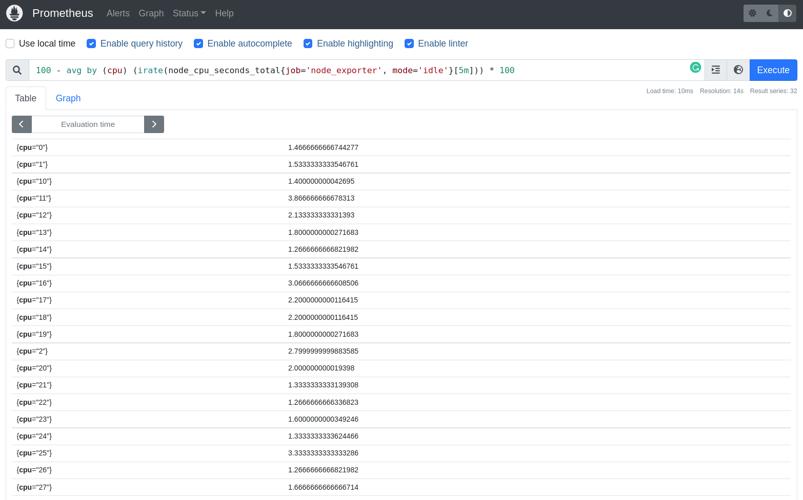
Estamos pedindo o Prometheus para calcular a média avg por by CPU node_cpu_seconds_total, que estão associadas as labels job node_exporter e que o mode é idle. O resultado será 100 menos - a média por CPU avg by (cpu) do uso de CPU node_cpu_seconds_total, que é calculado pela taxa de variação irate de 5 minutos 5m.
Parece confuso quando escrito, eu sei. Mas vamos quebrar essa query em partes:
Primeiro, vamos calcular a média por CPU do uso de CPU, que é calculado pela taxa de variação de 5 minutos:
avg by (cpu) (irate(node_cpu_seconds_total{job='node_exporter', mode='idle'}[5m]))
Agora vamos multiplicar o resultado por 100, para que o resultado seja em porcentagem:
avg by (cpu) (irate(node_cpu_seconds_total{job='node_exporter', mode='idle'}[5m])) * 100
E por fim, vamos subtrair o resultado de 100 para que o resultado seja a porcentagem de uso de CPU, pois o modo idle é o tempo que a CPU ficou ociosa e o que precisamos é o tempo que a CPU ficou em uso, por isso a subtração.
Por exemplo, se eu tenho 30% idle, então eu tenho 70% de uso de CPU. Entendeu?
Então se eu pegar o 100 e subtrair o 30, eu tenho 70, que é a porcentagem de uso de CPU. Agora você entendeu, vai!
Pronto, agora a query já está completa e totalmente explicada!
100 - avg by (cpu) (irate(node_cpu_seconds_total{job='node_exporter', mode='idle'}[5m])) * 100
3. Qual a porcentagem de uso de memória da minha máquina?
100 - (node_memory_MemAvailable_bytes / node_memory_MemTotal_bytes) * 100
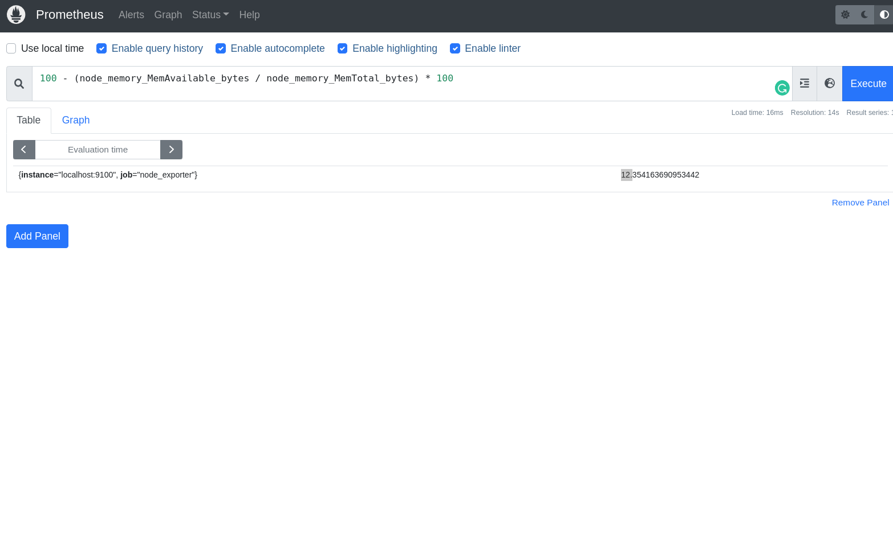
Estamos pedindo o Prometheus para calcular a porcentagem de uso de memória da minha máquina, que é calculado pela subtração de 100 menos a porcentagem de memória disponível node_memory_MemAvailable_bytes dividido pela memória total node_memory_MemTotal_bytes multiplicado por 100.
Parece confuso quando escrito, eu sei. Mas vamos quebrar essa query em partes:
Primeiro é calculado o que está dentro dos parênteses, que é a porcentagem de memória disponível node_memory_MemAvailable_bytes dividido pela memória total node_memory_MemTotal_bytes:
node_memory_MemAvailable_bytes / node_memory_MemTotal_bytes
Agora vamos multiplicar o resultado por 100, para que o resultado seja em porcentagem:
(node_memory_MemAvailable_bytes / node_memory_MemTotal_bytes) * 100
E por fim, vamos subtrair o resultado de 100 para que o resultado seja a porcentagem de uso de memória, pois o que precisamos é o tempo que a memória ficou em uso, por isso a subtração.
Por exemplo, se eu tenho 30% MemAvailable, então eu tenho 70% de uso de memória. Mesmo esquema do exemplo anterior.
100 - (node_memory_MemAvailable_bytes / node_memory_MemTotal_bytes) * 100
4. Qual a porcentagem de uso de disco da minha máquina?
100 - (node_filesystem_avail_bytes{mountpoint="/"} / node_filesystem_size_bytes{mountpoint="/"}) * 100

Estamos pedindo o Prometheus para calcular a porcentagem de uso de disco da minha máquina, que é calculado pela subtração de 100 menos a porcentagem de disco disponível node_filesystem_avail_bytes dividido pelo tamanho total do disco node_filesystem_size_bytes multiplicado por 100.
Vamos deixar isso mais simples, vamos quebrar essa query:
Primeiro é calculado o que está dentro dos parênteses, que é o espaço do disco disponível node_filesystem_avail_bytes dividido pelo tamanho total do disco node_filesystem_size_bytes:
node_filesystem_avail_bytes{mountpoint="/"} / node_filesystem_size_bytes{mountpoint="/"}
Agora vamos multiplicar o resultado por 100, para que o resultado seja em porcentagem:
(node_filesystem_avail_bytes{mountpoint="/"} / node_filesystem_size_bytes{mountpoint="/"}) * 100
E por fim, vamos subtrair o resultado de 100 para que o resultado seja a porcentagem de utilização do disco, por isso a subtração.
100 - (node_filesystem_avail_bytes{mountpoint="/"} / node_filesystem_size_bytes{mountpoint="/"}) * 100
5. Quanto de espaço está em uso na partição / em gigas?
(node_filesystem_size_bytes{mountpoint="/"} - node_filesystem_avail_bytes{mountpoint="/"}) / 1024 / 1024 / 1024

Estamos pedindo o Prometheus para calcular o espaço em uso na partição / em gigas, que é calculado pela subtração do tamanho total do disco node_filesystem_size_bytes menos o espaço do disco disponível node_filesystem_avail_bytes dividido por 1024 (para converter para kilobytes), dividido por 1024 (para converter para megabytes) e dividido por 1024 (para converter para gigabytes), simples não?
Essa eu nem vou quebrar em partes, pois tenho certeza que você já entendeu como funciona.
Chega por hoje!
Acho que já temos bastante conteúdo para hoje, então vamos parar por aqui. Já temos bastante conteúdo para você começar a brincar com o Prometheus e ter mais liberdade para criar as suas próprias queries e configurações. Agora, precisamos muito que você pratique, que você olhe com carinho tudo o que você aprendeu hoje e que você coloque em prática, agora! Não deixe para amanhã o que você pode fazer hoje, não é mesmo? hahhahahah
Lição de casa
Hoje a sua tarefa é praticar a criação de queries para extrair o máximo de informação do Node Exporter. No final, você deve ter uma lista com as queries que você criou e que você entendeu como elas funcionam. A mesma coisa para as novas métricas que você conheceu, bora criar uma lista com as 5 mais legais que você encontrou e que você entendeu como elas funcionam.
Referências
Descomplicando o Prometheus
DAY-4
O que iremos ver hoje?
Uma das coisas mais sensacionais do Prometheus é a quantidade de integrações possíveis. Então hoje vai ser o dia onde nós iremos ver como fazer a integração do Prometheus com o Grafana e o Alertmanager. Evidente, ainda vamos voltar nessas ferramentas muitas vezes no decorrer do treinamento, mas hoje é o dia de conhecermos como elas funcionam e como podemos integrar com o Prometheus.
Conteúdo do Day-4
DAY-4
O Grafana
O Grafana é uma ferramenta sensacional demais, impossível alguém não conhecer, e mais impossível ainda alguém não gostar.
Mas o que é esse tal de Grafana?
Te explico agora!
O Grafana é um projeto open source, e é mantido pela empresa Grafana Labs, empresa sueca e que hoje já possuem diferentes produtos, como o Grafana Cloud, Loki, Tempo, etc.
O Grafana é uma poderosa aplicação web que nos permite visualizar, em tempo real e com dashboards incríveis, os dados de diversas fontes, como por exemplo o Prometheus.
Basicamente o Grafana permite que você crie queries super elaboradas para consultar os dados em TSDBs, como o Prometheus, e depois criar dashboards e alertas incríveis.
O Grafa é uma ferramenta que eu uso muito, e que eu recomendo muito, mesmo que você não tenha o Prometheus, o Grafana pode usar dados de diversas fontes, como por exemplo o MySQL, o PostgreSQL, o MongoDB, etc.
Como falei, o Grafana não utiliza somente o Prometheus como fonte, como datasource, ele possui suporte a diferentes fontes de dados, como por exemplo:
- Prometheus
- InfluxDB
- MySQL
- Postgres
- Elasticsearch
- Google Cloud Monitoring
- Azure Monitor
- AWS CloudWatch
- OpenTSDB
Essas fontes de dados são chamadas de datasources, e o Grafana consegue se conectar a elas e obter os dados que precisamos, e assim ter as métricas que precisamos para montar os nossos dashboards.
O melhor de tudo, o Grafana trata esses datasources como plugins, então você pode criar o seu próprio datasource e utilizar no Grafana, caso ele não tenha suporte a alguma fonte de dados que você precise, ou até mesmo se você quiser criar um datasource para uma fonte de dados que você mesmo criou, sensacional né?
Instalando o Grafana
Vamos começar a nossa jornada na instalação do Grafana, nesse nosso primeiro exemplo vamos realizar a instalação do Grafana como um serviço no Linux, mas seguir a mesma lógica que usamos para instalar o nosso Prometheus.
Ainda vamos ver a instalação e configuração do Prometheus e do Grafana como containers rodando em nosso querido Kubernetes, pode ficar tranquila Pessoa_X!
Bem, vamos lá!
Primeira coisa que temos que fazer é visitar a documentação oficial do Grafana, e lá vamos encontrar a documentação para a sua instalação em diferentes sistemas operacionais, como por exemplo:
Em nosso exemplo vamos instalar o Grafana no Linux, então vamos seguir a documentação para a instalação no Linux, que você pode acessar aqui.
Para a nossa alegria, o Grafana disponibiliza um repositório para a instalação do Grafana no Linux, como por exemplo no Ubuntu, que estão utilizando desde o começo. :)
Primeira coisa, vamos garantir que alguns pacotes necessários para a instalação do Grafana estejam instalados em nosso sistema, para isso vamos executar o seguinte comando:
sudo apt-get install -y apt-transport-https software-properties-common wget
Onde estamos instalando os pacotes
apt-transport-https- para permitir que o apt use pacotes HTTPSsoftware-properties-common- para permitir que o apt adicione repositórios de terceiroswget- ferramenta utilizada para baixar arquivos da internet
Antes de adicionar o repo do Grafana, precisamos adicionar a chave GPG do repo do Grafana:
wget -q -O - https://packages.grafana.com/gpg.key | sudo apt-key add -
Pronto, agora vamos adicionar o repo do Grafana em nossa máquina, para isso vamos executar o seguinte comando:
sudo add-apt-repository "deb https://packages.grafana.com/oss/deb stable main"
Vamos executat o comando apt-get update para atualizar o nosso cache de pacotes e na sequência vamos instalar o Grafana:
sudo apt-get update
sudo apt-get install grafana
Se tudo rolou bem, agora o Grafana já está instalado em nossa máquina, vamos iniciar o serviço do Grafana e habilitar o mesmo para iniciar junto com o sistema operacional:
sudo systemctl start grafana-server
sudo systemctl enable grafana-server
Para verificar se o Grafana está rodando, execute:
sudo systemctl status grafana-server
Se a saída do comando for parecida com essa, então o Grafana está rodando:
● grafana-server.service - Grafana instance
Loaded: loaded (/lib/systemd/system/grafana-server.service; enabled; vendor preset: enabled)
Active: active (running) since Wed 2022-09-07 19:34:32 CEST; 6s ago
Docs: http://docs.grafana.org
Main PID: 89168 (grafana-server)
Tasks: 36 (limit: 76911)
Memory: 43.7M
CPU: 585ms
CGroup: /system.slice/grafana-server.service
Como falamos, o Grafana é uma aplicação web, sendo assim, precisamos acessar a aplicação através de um navegador, para isso vamos acessar a URL http://localhost:3000:

Muito bem, estamos vendo a tela de login do Grafana, isso significa que temos que ter um usuário para conseguir acessar a aplicação. :D
O usuário padrão do Grafana é admin e a senha padrão é admin, quando não especificamos um usuário inicial durante a instalação do Grafana, então ele cria um usuário padrão e com a senha padrão.
Vamos logar utilizando o usuário admin e a senha admin:

Perceba que em seu primeiro login, ele pede para você mudar a senha do usuário admin, então vamos mudar a senha para giropops, no meu caso, no de seu, você que manda. hahaha

Agora sim estamos logados e vendo a tela inicial do Grafana, por enquanto não temos nada de interessante para ver, mas vamos resolver isso em breve. :)
Adicionando o Prometheus como Data Source
Nos ainda vamos ver mais detalhes do Grafana no Day-4, mas somente para não deixar você com agua na boca, vamos adicionar o Prometheus como Data Source no Grafana, para que possamos começar a criar nossos Dashboards.
Primeira coisa que precisamos fazer é acessar a página de configuração do Data Source, para isso vamos clicar no menu lateral esquerdo em Configuration e depois em Data Sources:
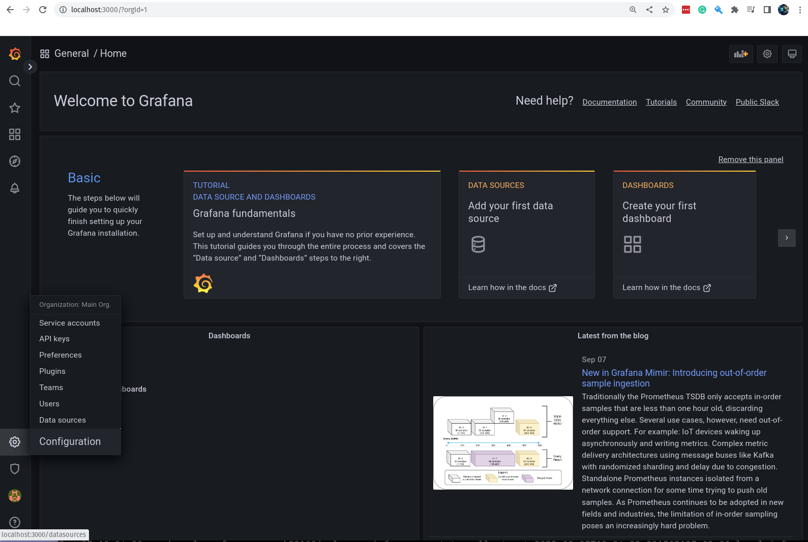

Agora vamos clicar no botão Add data source e selecionar o Prometheus:

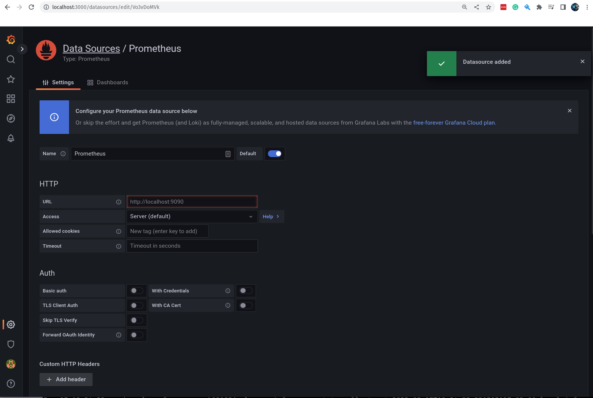
Agora vamos preencher com as informações do nosso Prometheus, a primeira informação que precisamos preencher é o nome do Data Source, vamos colocar Prometheus.
Depois vamos preencher a URL do Prometheus, que no nosso caso é http://localhost:9090.
Por agora, não vamos adicionar nenhuma informação extra, como por exemplo tipos de autenticação, alertas, etc.
Agora é clicar no botão Save & Test para salvar as configurações e testar a conexão com o Prometheus:

Se tudo deu certo, vamos ver a seguinte mensagem:
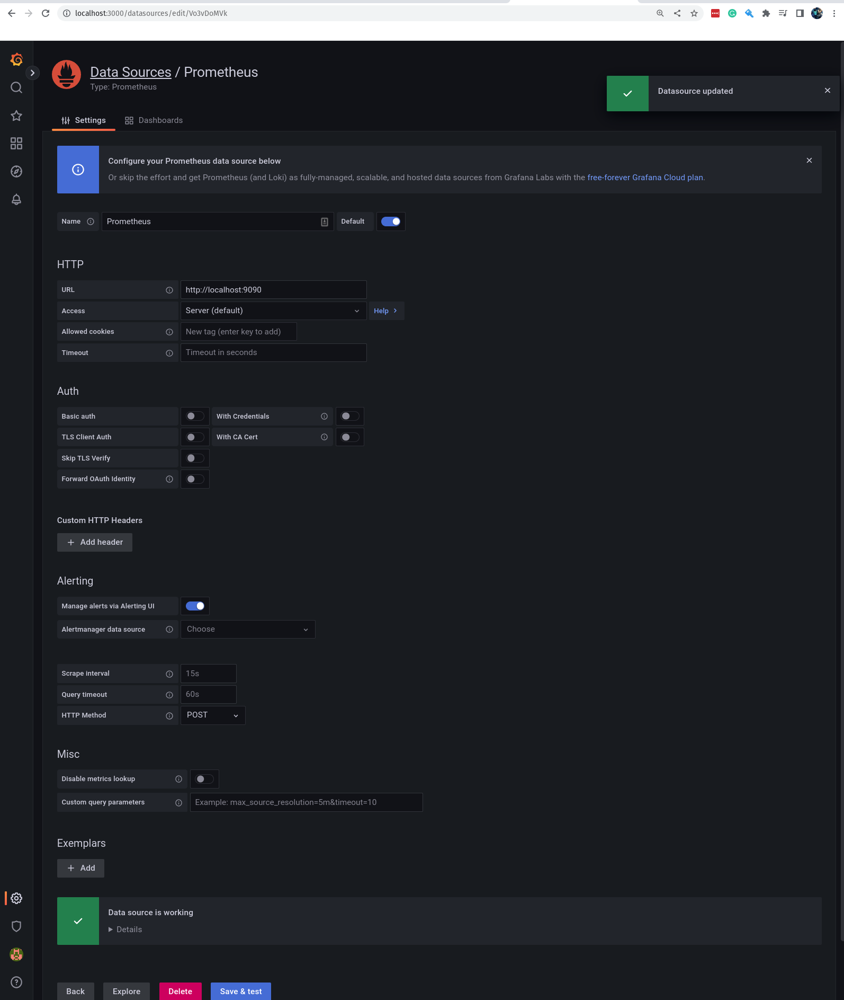
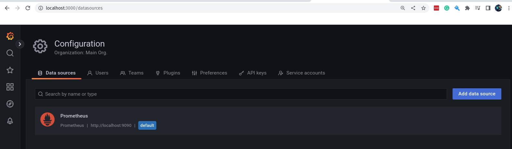
Pronto, o Grafana já está configurado para se conectar com o Prometheus, agora vamos criar nosso primeiro Dashboard. :)
Criando o nosso primeiro Dashboard
Muito bem! Chegou o grande momento de criarmos o nosso primeiro Dashboard no Grafana, bem simples ainda, afinal é o nosso primeiro Dashboard.
Primeiro passo, vamos clicar no menu lateral esquerdo em Dashboard e na sequência vamos clicar no botão New Dashboard:
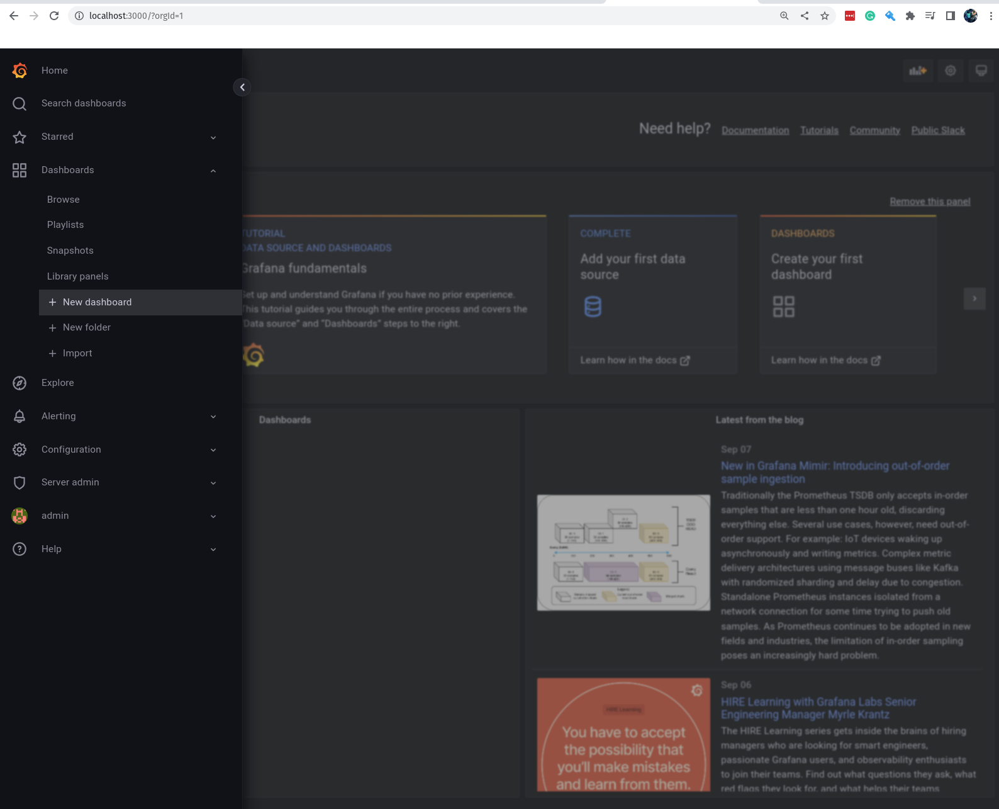
Agora vamos escolher o tipo de Dashboard que queremos criar, vamos clicar em Add new panel:
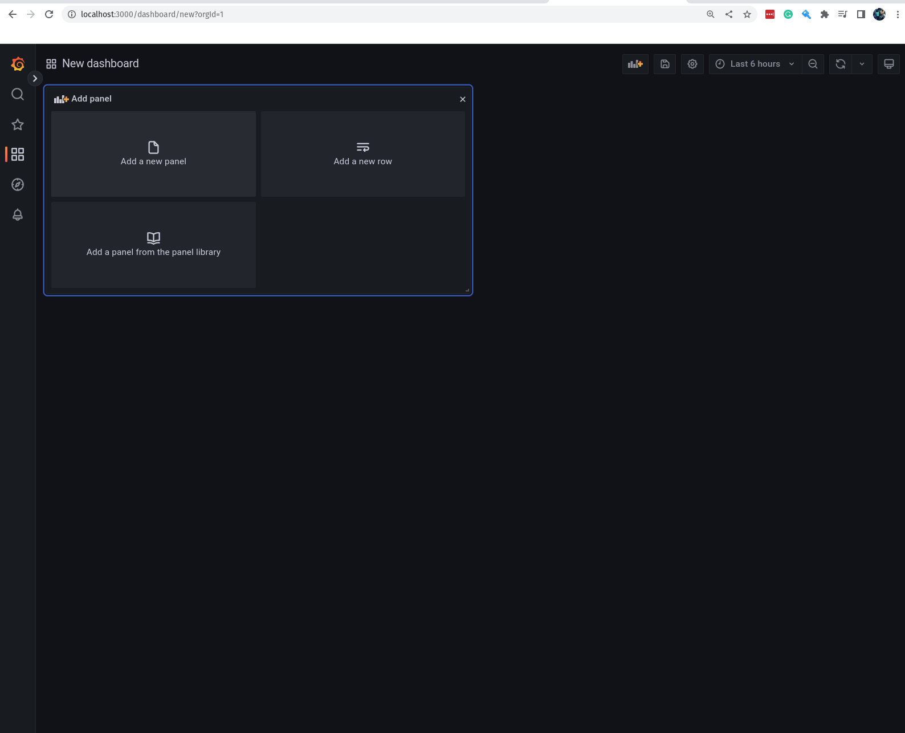
Pronto, agora já podemos começar a criar o nosso primeiro dashboard. :D

Pra ficar mais fácil, vamos dividir essa tela em 3 zonas:
-
A primeira zona é a zona de configuração do painel, onde podemos configurar o título do painel, o tipo de gráfico, etc.
-
A segunda zona é a zona de configuração do
Data Source, onde podemos escolher qualData Sourcequeremos utilizar para alimentar o painel. -
A terceira zona é a zona de configuração do
Query, onde podemos escolher qual métrica queremos visualizar no painel.

Vamos começar pela zona de configuração do painel, vamos clicar no botão Panel Title e vamos mudar o título do painel para CPU Usage:

Agora vamos definir o data source que queremos utilizar para alimentar o painel, por agora somente temos o do Prometheus, e ele já está selecionado, então vamos deixar assim mesmo.

Aqui nós temos dois modos de construção de queries, sim, nós iremos construir queries para o Grafana, mas não se preocupe, é bem simples. :D
O primeiro modo, que está se tornando o padrão, é o modo Builder, que facilita a criação de queries, uma vez que é possível selecionar campos, funções, etc, através de menus.
Vamos construir nessa primeira vez a query utilizando o modo Builder, então vamos clicar no botão Builder:

Agora vamos em Metrics e vamos selecionar a métrica node_cpu_seconds_total:
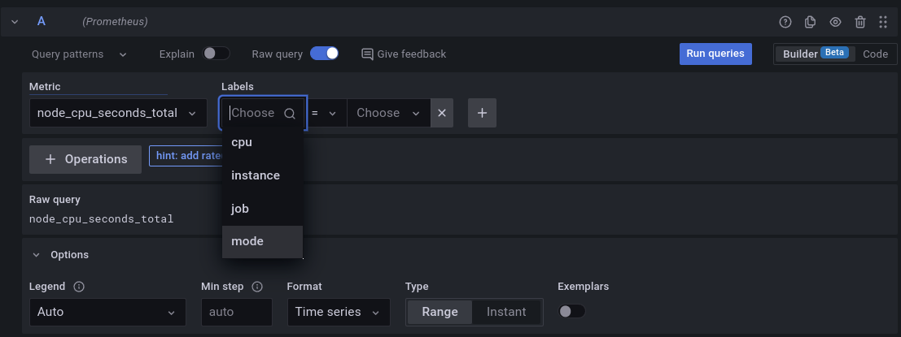
Vamos pedir para filtrar pelo label mode e vamos selecionar o valor idle:
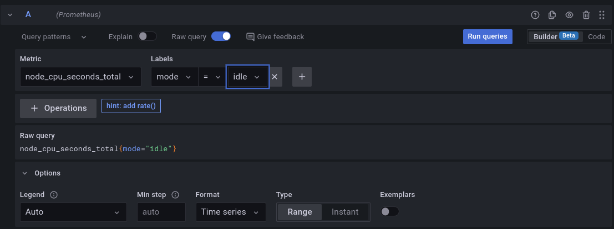
Precisamos ainda utilizar a função rate para calcular a taxa de variação da métrica, então vamos clicar em + Operations, depois em Range functions e por fim, selecionar a função rate, agora temos aque adicionar o intervalo de tempo que queremos utilizar no campo Range:


E finalizando, vamos adicionar uma legenda para o gráfico, vamos clicar em Options e depois em Legend e vamos adicionar a legenda {{cpu}}:

Agora vamos clicar no botão Run queries para executar a query e vermos o resultado:

Agora precisamos clicar em Apply para salvar as configurações do painel:

Pronto, nosso primeiro dashboard está pronto! Ainda é bastante simples, mas já deu pra matar a vontade de conhecer o Grafana, né? :D
Ainda vamos voltar para o Grafana durante o dia de hoje para brincar um pouco mais, mas agora vamos colocar o nosso foco no Alertmanager por um momento. :)
Alertmanager
O Alertmanager é o responsável por gerenciar os alertas que são criados pelo Prometheus, ele é um serviço que recebe os alertas do Prometheus, organiza e os encaminha para os serviços de notificação, como o Slack, e-mail, pagerduty, OpsGenie, etc.
O Alertmanager é um aplicação desenvolvida em Go, e é distribuído como um binário estático, ou seja, não é necessário instalar nenhuma dependência para utilizá-lo. O que vamos precisar fazer, evidemente, é criar um serviço no Systemd para gerencia-lo.
Instalando o Alertmanager
Primeira coisa que precisamos fazer é baixar o binário do Alertmanager, vamos fazer isso através do comando wget.
O endereço do projeto do Alertmanager é o mesmo de onde fizemos o download do Prometheus e do Node Exporter. :D
https://prometheus.io/download/
Vamos baixar a versão mais recente do Alertmanager, no momento em que escrevo esse material, a versão mais recente é a 0.24.0, então vamos baixar o binário com o seguinte comando:
wget https://github.com/prometheus/alertmanager/releases/download/v0.24.0/alertmanager-0.24.0.linux-amd64.tar.gz
Agora vamos descompactar o arquivo que baixamos, vamos utilizar o comando tar para isso:
tar -xvzf alertmanager-0.24.0.linux-amd64.tar.gz
Agora nós temos um diretório chamado alertmanager-0.24.0.linux-amd64, vamos entrar nesse diretório e copiar o binário do Alertmanager para o diretório /usr/local/bin:
cd alertmanager-0.24.0.linux-amd64
cp alertmanager /usr/local/bin
Agora vamos criar o diretório /etc/alertmanager e copiar o arquivo de configuração do Alertmanager para esse diretório:
mkdir /etc/alertmanager
cp alertmanager.yml /etc/alertmanager
Vamos dar uma olhada no arquivo de configuração do Alertmanager:
cat /etc/alertmanager/alertmanager.yml
route:
group_by: ['alertname']
group_wait: 30s
group_interval: 5m
repeat_interval: 1h
receiver: 'web.hook'
receivers:
- name: 'web.hook'
webhook_configs:
- url: 'http://127.0.0.1:5001/'
inhibit_rules:
- source_match:
severity: 'critical'
target_match:
severity: 'warning'
equal: ['alertname', 'dev', 'instance']
Descomplicando o Prometheus
DAY-5
O que iremos ver hoje?
DAY-5
Descomplicando o Prometheus
DAY-6
O que iremos ver hoje
Durante o dia de hoje iremos aprender sobre todas as possibilidades que temos com a utilização do Prometheus + Kubernetes! Hoje é dia de conhecer o sensacional kube-prometheus, projeto esse criado pelos mesmos criadores do Prometheus Operator, que nos permite monitorar o nosso cluster de Kubernetes de forma simples e eficiente. Além disso, iremos aprender como utilizar o Prometheus Adapter para que possamos utilizar o nosso querido e lindo Prometheus como fonte de dados para o Horizontal Pod Autoscaler, ou seja, iremos aprender como utilizar o nosso querido e lindo Prometheus para escalar nossos pods de forma automática! E ainda de quebra você vai aprender como instalar o Kubernetes, mais do que isso, você vai aprender como instalar um cluster EKS! Sim, você vai aprender como instalar um cluster EKS, o cluster de Kubernetes da AWS, através da ferramenta eksctl, que é uma ferramenta de linha de comando que nos permite instalar um cluster EKS em minutos!
Conteúdo do Day-6
DAY-6
O que é o kube-prometheus
O kube-prometheus é um conjunto de manifestos do Kubernetes que nos permite ter o Prometheus Operator, Grafana, AlertManager, Node Exporter, Kube-State-Metrics, Prometheus-Adapter instalados e configurados de forma tranquila e com alta disponibilidade. Além disso, ele nos permite ter uma visão completa do nosso cluster de Kubernetes. Ele nos permite monitorar todos os componentes do nosso cluster de Kubernetes, como por exemplo: kube-scheduler, kube-controller-manager, kubelet, kube-proxy, etc.
Instalando o nosso cluster Kubernetes
Como dissemos, para esse nosso exemplo iremos utilizar o cluster de Kubernetes da AWS, o EKS. Para instalar o nosso cluster EKS, iremos utilizar a ferramenta eksctl, portanto precisamos instalá-la em nossa máquina. Para instalar a ferramenta, basta executar o seguinte comando:
curl --silent --location "https://github.com/weaveworks/eksctl/releases/latest/download/eksctl_$(uname -s)_amd64.tar.gz" | tar xz -C /tmp
sudo mv /tmp/eksctl /usr/local/bin
Precisamos ter o CLI da aws instalado em nossa máquina, para isso, basta executar o seguinte comando:
curl "https://awscli.amazonaws.com/awscli-exe-linux-x86_64.zip" -o "awscliv2.zip"
unzip awscliv2.zip
sudo ./aws/install
Pronto, agora você já tem o eksctl e o aws instalados em sua máquina.
Para que possamos criar tudo o que precisamos na AWS, é importante que você tenha uma conta na AWS, e que tenha as credenciais de acesso configuradas em sua máquina. Para configurar as credenciais de acesso, basta executar o seguinte comando:
aws configure
O comando acima irá solicitar que você informe a sua AWS Access Key ID, a sua AWS Secret Access Key, a sua Default region name, e o seu Default output format. Para saber mais sobre como configurar as credenciais de acesso, basta acessar a documentação oficial da AWS.
No comando acima estamos baixando o binário do eksctl compactado e descompactando ele na pasta /tmp, e depois movendo o binário para a pasta /usr/local/bin.
Lembrando que estou instando em uma máquina Linux, caso que esteja utilizando uma máquina Mac ou Windows, basta acessar a página de releases do projeto e baixar a versão adequada para o seu sistema operacional.
E enquanto você faz a instalação, vale a pena mencionar que o eksctl é uma ferramenta criada pela WeaveWorks, empresa que criou o Flux, que é um projeto de GitOps para Kubernetes, além de ter o Weavenet, que é um CNI para Kubernetes, e o Weave Scope, que é uma ferramenta de visualização de clusters de Kubernetes e muito mais, recomendo que vocês dêem uma olhada nos projetos, é sensacional!
Bem, agora você já tem o eksctl instalado em sua máquina, então vamos criar o nosso cluster EKS! Para isso, basta executar o seguinte comando:
eksctl create cluster --name=eks-cluster --version=1.24 --region=us-east-1 --nodegroup-name=eks-cluster-nodegroup --node-type=t3.medium --nodes=2 --nodes-min=1 --nodes-max=3 --managed
O comando acima irá criar um cluster EKS com o nome eks-cluster, na região us-east-1, com 2 nós do tipo t3.medium, e com um mínimo de 1 nó e um máximo de 3 nós. Além disso, o comando acima irá criar um nodegroup chamado eks-cluster-nodegroup. O eksctl irá cuidar de toda a infraestrutura necessária para o funcionamento do nosso cluster EKS. A versão do Kubernetes que será instalada no nosso cluster será a 1.24.
Após a criação do nosso cluster EKS, precisamos instalar o kubectl em nossa máquina. Para instalar o kubectl, basta executar o seguinte comando:
curl -LO "https://dl.k8s.io/release/$(curl -L -s https://dl.k8s.io/release/stable.txt)/bin/linux/amd64/kubectl"
chmod +x ./kubectl
sudo mv ./kubectl /usr/local/bin/kubectl
O comando acima irá baixar o binário do kubectl e o colocar na pasta /usr/local/bin, e dar permissão de execução para o binário.
Agora que já temos o kubectl instalado em nossa máquina, precisamos configurar o kubectl para utilizar o nosso cluster EKS. Para isso, basta executar o seguinte comando:
aws eks --region us-east-1 update-kubeconfig --name eks-cluster
Aonde us-east-1 é a região do nosso cluster EKS, e eks-cluster é o nome do nosso cluster EKS. Esse comando é necessário para que o kubectl saiba qual cluster ele deve utilizar, ele irá pegar as credenciais do nosso cluster EKS e armazenar no arquivo ~/.kube/config.
LEMBRE-SE: Você não precisa ter o Kubernetes rodando no EKS, fique a vontade para escolher onde preferir para seguir o treinamento.
Vamos ver se o kubectl está funcionando corretamente? Para isso, basta executar o seguinte comando:
kubectl get nodes
Se tudo estiver funcionando corretamente, você deverá ver uma lista com os nós do seu cluster EKS. :D
Antes de seguirmos em frente, vamos conhecer algums comandos do eksctl, para que possamos gerenciar o nosso cluster EKS. Para listar os clusters EKS que temos em nossa conta, basta executar o seguinte comando:
eksctl get cluster -A
O parametro -A é para listar os clusters EKS de todas as regiões. Para listar os clusters EKS de uma região específica, basta executar o seguinte comando:
eksctl get cluster -r us-east-1
Para aumentar o número de nós do nosso cluster EKS, basta executar o seguinte comando:
eksctl scale nodegroup --cluster=eks-cluster --nodes=3 --nodes-min=1 --nodes-max=3 --name=eks-cluster-nodegroup -r us-east-1
Para diminuir o número de nós do nosso cluster EKS, basta executar o seguinte comando:
eksctl scale nodegroup --cluster=eks-cluster --nodes=1 --nodes-min=1 --nodes-max=3 --name=eks-cluster-nodegroup -r us-east-1
Para deletar o nosso cluster EKS, basta executar o seguinte comando:
eksctl delete cluster --name=eks-cluster -r us-east-1
Mas não delete o nosso cluster EKS, vamos utilizar ele para os próximos passos! hahahah
Instalando o Kube-Prometheus
Agora que já temos o nosso cluster EKS criado, vamos instalar o Kube-Prometheus. Para isso, basta executar o seguinte comando:
git clone https://github.com/prometheus-operator/kube-prometheus
cd kube-prometheus
kubectl create -f manifests/setup
Com o comando acima nós estamos clonando o repositório oficial do projeto, e aplicando os manifests necessários para a instalação do Kube-Prometheus. Após a execução do comando acima, você deverá ver uma mensagem parecida com a seguinte:
customresourcedefinition.apiextensions.k8s.io/alertmanagerconfigs.monitoring.coreos.com created
customresourcedefinition.apiextensions.k8s.io/alertmanagers.monitoring.coreos.com created
customresourcedefinition.apiextensions.k8s.io/podmonitors.monitoring.coreos.com created
customresourcedefinition.apiextensions.k8s.io/probes.monitoring.coreos.com created
customresourcedefinition.apiextensions.k8s.io/prometheuses.monitoring.coreos.com created
customresourcedefinition.apiextensions.k8s.io/prometheusrules.monitoring.coreos.com created
customresourcedefinition.apiextensions.k8s.io/servicemonitors.monitoring.coreos.com created
customresourcedefinition.apiextensions.k8s.io/thanosrulers.monitoring.coreos.com created
namespace/monitoring created
Basicamente o que fizemos foi a instalação de alguns CRDs (Custom Resource Definitions) que são como extensões do Kubernetes, e que são utilizados pelo Kube-Prometheus e com isso o Kubernetes irá reconhecer esses novos recursos, como por exemplo o PrometheusRule e o ServiceMonitor que irei falar mais a frente.
O processo de instalação dos CRDs pode demorar alguns minutos, então vamos aguardar a instalação terminar. :D
Para verificar se a instalação dos CRDs foi concluída, o comando abaixo deverá funcionar,se ainda não funcionar, aguarde alguns minutos e tente novamente.
kubectl get servicemonitors -A
Após a instalação dos CRDs, vamos instalar o Prometheus e o Alertmanager. Para isso, basta executar o seguinte comando:
kubectl apply -f manifests/
Com o comando acima nós estamos aplicando os manifests necessários para a instalação do Prometheus e do Alertmanager. Após a execução do comando acima, você deverá ver uma mensagem parecida com a seguinte:
alertmanager.monitoring.coreos.com/main created
networkpolicy.networking.k8s.io/alertmanager-main created
poddisruptionbudget.policy/alertmanager-main created
prometheusrule.monitoring.coreos.com/alertmanager-main-rules created
secret/alertmanager-main created
service/alertmanager-main created
serviceaccount/alertmanager-main created
servicemonitor.monitoring.coreos.com/alertmanager-main created
clusterrole.rbac.authorization.k8s.io/blackbox-exporter created
clusterrolebinding.rbac.authorization.k8s.io/blackbox-exporter created
configmap/blackbox-exporter-configuration created
deployment.apps/blackbox-exporter created
networkpolicy.networking.k8s.io/blackbox-exporter created
service/blackbox-exporter created
serviceaccount/blackbox-exporter created
servicemonitor.monitoring.coreos.com/blackbox-exporter created
secret/grafana-config created
secret/grafana-datasources created
configmap/grafana-dashboard-alertmanager-overview created
configmap/grafana-dashboard-apiserver created
configmap/grafana-dashboard-cluster-total created
configmap/grafana-dashboard-controller-manager created
configmap/grafana-dashboard-grafana-overview created
configmap/grafana-dashboard-k8s-resources-cluster created
configmap/grafana-dashboard-k8s-resources-namespace created
configmap/grafana-dashboard-k8s-resources-node created
configmap/grafana-dashboard-k8s-resources-pod created
configmap/grafana-dashboard-k8s-resources-workload created
configmap/grafana-dashboard-k8s-resources-workloads-namespace created
configmap/grafana-dashboard-kubelet created
configmap/grafana-dashboard-namespace-by-pod created
configmap/grafana-dashboard-namespace-by-workload created
configmap/grafana-dashboard-node-cluster-rsrc-use created
configmap/grafana-dashboard-node-rsrc-use created
configmap/grafana-dashboard-nodes-darwin created
configmap/grafana-dashboard-nodes created
configmap/grafana-dashboard-persistentvolumesusage created
configmap/grafana-dashboard-pod-total created
configmap/grafana-dashboard-prometheus-remote-write created
configmap/grafana-dashboard-prometheus created
configmap/grafana-dashboard-proxy created
configmap/grafana-dashboard-scheduler created
configmap/grafana-dashboard-workload-total created
configmap/grafana-dashboards created
deployment.apps/grafana created
networkpolicy.networking.k8s.io/grafana created
prometheusrule.monitoring.coreos.com/grafana-rules created
service/grafana created
serviceaccount/grafana created
servicemonitor.monitoring.coreos.com/grafana created
prometheusrule.monitoring.coreos.com/kube-prometheus-rules created
clusterrole.rbac.authorization.k8s.io/kube-state-metrics created
clusterrolebinding.rbac.authorization.k8s.io/kube-state-metrics created
deployment.apps/kube-state-metrics created
networkpolicy.networking.k8s.io/kube-state-metrics created
prometheusrule.monitoring.coreos.com/kube-state-metrics-rules created
service/kube-state-metrics created
serviceaccount/kube-state-metrics created
servicemonitor.monitoring.coreos.com/kube-state-metrics created
prometheusrule.monitoring.coreos.com/kubernetes-monitoring-rules created
servicemonitor.monitoring.coreos.com/kube-apiserver created
servicemonitor.monitoring.coreos.com/coredns created
servicemonitor.monitoring.coreos.com/kube-controller-manager created
servicemonitor.monitoring.coreos.com/kube-scheduler created
servicemonitor.monitoring.coreos.com/kubelet created
clusterrole.rbac.authorization.k8s.io/node-exporter created
clusterrolebinding.rbac.authorization.k8s.io/node-exporter created
daemonset.apps/node-exporter created
networkpolicy.networking.k8s.io/node-exporter created
prometheusrule.monitoring.coreos.com/node-exporter-rules created
service/node-exporter created
serviceaccount/node-exporter created
servicemonitor.monitoring.coreos.com/node-exporter created
clusterrole.rbac.authorization.k8s.io/prometheus-k8s created
clusterrolebinding.rbac.authorization.k8s.io/prometheus-k8s created
networkpolicy.networking.k8s.io/prometheus-k8s created
poddisruptionbudget.policy/prometheus-k8s created
prometheus.monitoring.coreos.com/k8s created
prometheusrule.monitoring.coreos.com/prometheus-k8s-prometheus-rules created
rolebinding.rbac.authorization.k8s.io/prometheus-k8s-config created
rolebinding.rbac.authorization.k8s.io/prometheus-k8s created
rolebinding.rbac.authorization.k8s.io/prometheus-k8s created
rolebinding.rbac.authorization.k8s.io/prometheus-k8s created
role.rbac.authorization.k8s.io/prometheus-k8s-config created
role.rbac.authorization.k8s.io/prometheus-k8s created
role.rbac.authorization.k8s.io/prometheus-k8s created
role.rbac.authorization.k8s.io/prometheus-k8s created
service/prometheus-k8s created
serviceaccount/prometheus-k8s created
servicemonitor.monitoring.coreos.com/prometheus-k8s created
apiservice.apiregistration.k8s.io/v1beta1.metrics.k8s.io created
clusterrole.rbac.authorization.k8s.io/prometheus-adapter created
clusterrole.rbac.authorization.k8s.io/system:aggregated-metrics-reader created
clusterrolebinding.rbac.authorization.k8s.io/prometheus-adapter created
clusterrolebinding.rbac.authorization.k8s.io/resource-metrics:system:auth-delegator created
clusterrole.rbac.authorization.k8s.io/resource-metrics-server-resources created
configmap/adapter-config created
deployment.apps/prometheus-adapter created
networkpolicy.networking.k8s.io/prometheus-adapter created
poddisruptionbudget.policy/prometheus-adapter created
rolebinding.rbac.authorization.k8s.io/resource-metrics-auth-reader created
service/prometheus-adapter created
serviceaccount/prometheus-adapter created
servicemonitor.monitoring.coreos.com/prometheus-adapter created
clusterrole.rbac.authorization.k8s.io/prometheus-operator created
clusterrolebinding.rbac.authorization.k8s.io/prometheus-operator created
deployment.apps/prometheus-operator created
networkpolicy.networking.k8s.io/prometheus-operator created
prometheusrule.monitoring.coreos.com/prometheus-operator-rules created
service/prometheus-operator created
serviceaccount/prometheus-operator created
servicemonitor.monitoring.coreos.com/prometheus-operator created
Com isso fizemos a instalação da Stack do nosso Kube-Prometheus, que é composta pelo Prometheus, pelo Alertmanager, Blackbox Exporter e Grafana. :D Perceba que ele já está configurando um monte de outras coisas como os ConfigMaps, Secrets, ServiceAccounts, etc.
Para verificar se a instalação foi concluída, basta executar o seguinte comando:
kubectl get pods -n monitoring
O resultado esperado é o seguinte:
NAME READY STATUS RESTARTS AGE
alertmanager-main-0 2/2 Running 0 57s
alertmanager-main-1 2/2 Running 0 57s
alertmanager-main-2 2/2 Running 0 57s
blackbox-exporter-cbb9c96b-t8z68 3/3 Running 0 94s
grafana-589787799d-pxsts 1/1 Running 0 80s
kube-state-metrics-557d857c5d-kt8dd 3/3 Running 0 78s
node-exporter-2n6sz 2/2 Running 0 74s
node-exporter-mwq6b 2/2 Running 0 74s
prometheus-adapter-758645c65b-54c7g 1/1 Running 0 64s
prometheus-adapter-758645c65b-cmjrv 1/1 Running 0 64s
prometheus-k8s-0 2/2 Running 0 57s
prometheus-k8s-1 2/2 Running 0 57s
prometheus-operator-c766b9756-vndp9 2/2 Running 0 63s
Pronto, já temos o Prometheus, Alertmanager, Blackbox Exporter, Node Exporter e Grafana instalados. :D
Nesse meu cluster, eu estou com dois nodes, por isso temos dois pods do Node Exporter e dois pods do Prometheus chamados de prometheus-k8s-0 e prometheus-k8s-1.
Acessando o Grafana
Agora que já temos o nosso Kube-Prometheus instalado, vamos acessar o nosso Grafana e verificar se está tudo funcionando corretamente. Para isso, vamos utilizar o kubectl port-forward para acessar o Grafana localmente. Para isso, basta executar o seguinte comando:
kubectl port-forward -n monitoring svc/grafana 33000:3000
Agora que já temos o nosso Grafana rodando localmente, vamos acessar o nosso Grafana através do navegador. Para isso, basta acessar a seguinte URL: http://localhost:33000. Após acessar a URL, você deverá ver uma tela de login do Grafana, como na imagem abaixo:
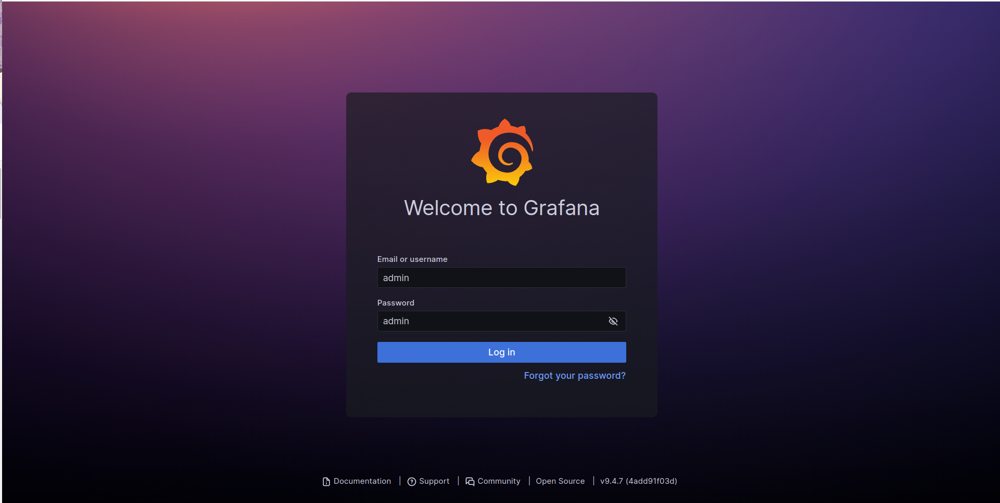
Para acessar o Grafana, vamos utilizar o usuário admin e a senha admin, e já no primeiro login ele irá pedir para você alterar a senha. Você já conhece o Grafana, não preciso mais apresenta-los, certo? :D

O importante aqui é ver a quantidade de Dashboards criados pelo Kube-Prometheus. :D Temos Dashboards que mostram detalhes do API Server e de diversos componentes do Kubernetes, como Node, Pod, Deployment, etc.

Também temos Dashboards que mostram detalhes do nosso cluster EKS, como por exemplo o dashboard Kubernetes / Compute Resources / Cluster, que mostra detalhes de CPU e memória utilizados por todos os nós do nosso cluster EKS.
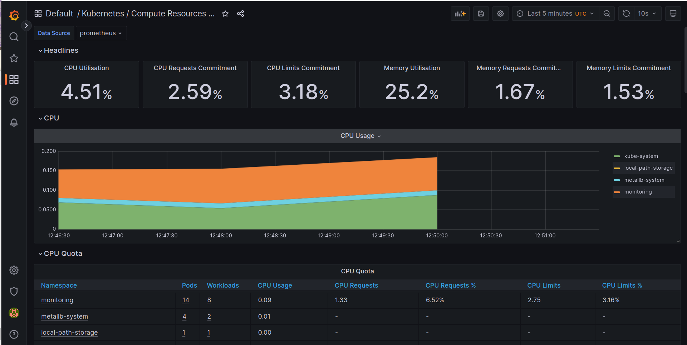
Dashboards que mostram detalhes do nosso cluster EKS, como por exemplo o dashboard Kubernetes / Compute Resources / Namespace (Pods), que mostra detalhes de CPU e memória utilizados por todos os pods de todos os namespaces do nosso cluster EKS.
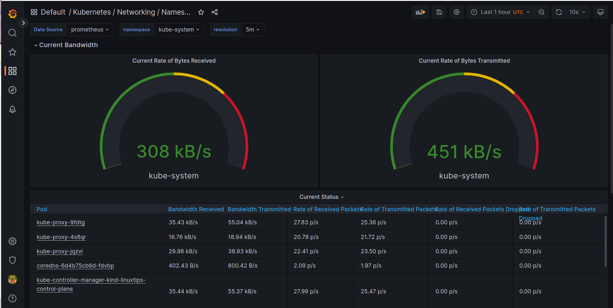
Ainda temos Dashboards que mostram detalhes do nosso cluster EKS, como por exemplo o dashboard Kubernetes / Compute Resources / Namespace (Workloads), que mostra detalhes de CPU e memória utilizados por todos os deployments, statefulsets e daemonsets de todos os namespaces do nosso cluster EKS.
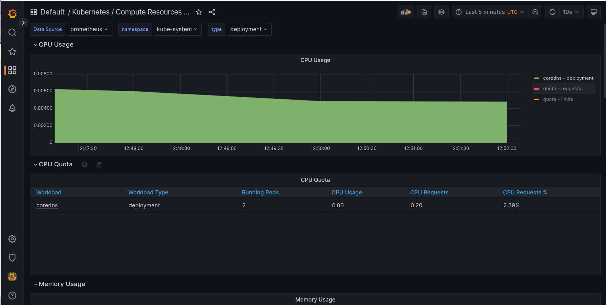
Também temos Dashboards que mostram detalhes do nosso cluster EKS, como por exemplo o dashboard Kubernetes / Compute Resources / Node, que mostra detalhes de CPU e memória utilizados por todos os nós do nosso cluster EKS.
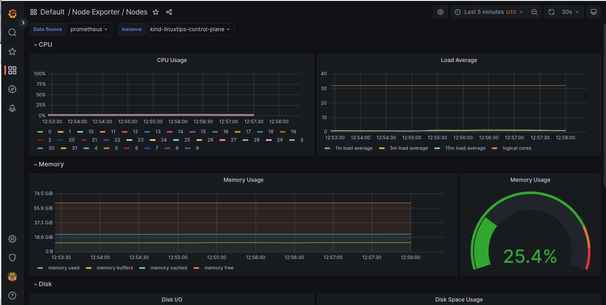
Também temos Dashboards que mostram detalhes do nosso cluster EKS, como por exemplo o dashboard Kubernetes / Compute Resources / Pod (Containers), que mostra detalhes de CPU e memória utilizados por todos os containers de todos os pods do nosso cluster EKS.

Eu não vou ficar aqui dando spoilers, vai lá você e confere a quantidade enorme de Dashboards que o Kube-Prometheus já vem com ele. \o/
Acessando o Prometheus
Agora que já temos o nosso Kube-Prometheus instalado, vamos acessar o nosso Prometheus e verificar se está tudo funcionando corretamente. Para isso, vamos utilizar o kubectl port-forward para acessar o Prometheus localmente. Para isso, basta executar o seguinte comando:
kubectl port-forward -n monitoring svc/prometheus-k8s 39090:9090
Pronto, agora já podemos fazer a mesma coisa que fizemos anteriormente para acessar o Grafana, a diferença aqui é que estamos utilizando uma porta diferente, a porta 39090 ao invés da porta 33000 que usamos para o Grafana.
Lembre-se que essa porta é local somente, a porta onde o serviço do Prometheus está rodando é a porta 9090, e a do Grafana é a porta 3000.
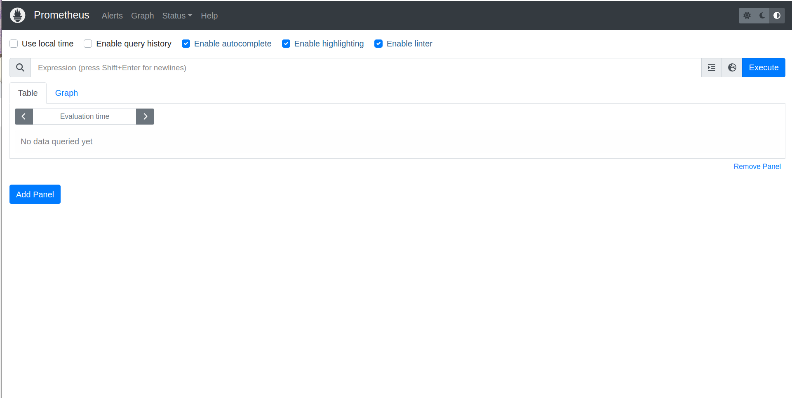
Acessando o AlertManager
Aqui basicamente repetimos o que fizemos para acessar o Prometheus, só que agora para acessar o AlertManager. Para isso, vamos utilizar o kubectl port-forward para acessar o AlertManager localmente. Para isso, basta executar o seguinte comando:
kubectl port-forward -n monitoring svc/alertmanager-main 39093:9093
Pronto, agora você já pode acessar o seu serviço de forma simples e segura, sem precisar expor o serviço para o mundo externo. :D
E claro, caso você queira, fique a vontado para criar um ingress para o seu serviço, ou até mesmo um LoadBalancer, caso você esteja utilizando o AWS EKS. :D
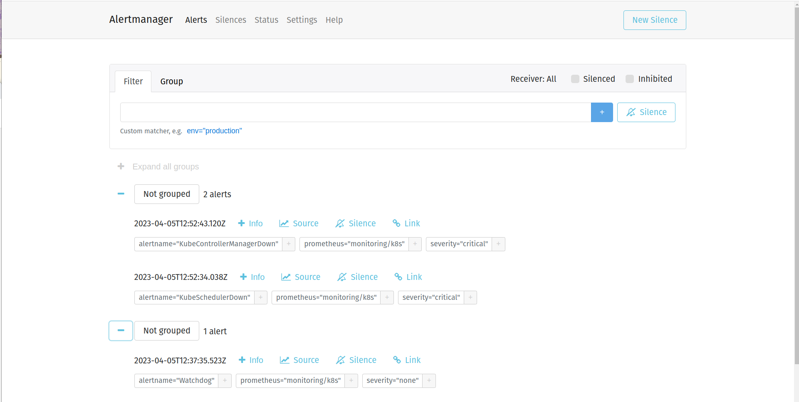
Chega por hoje!
Hoje foi o dia de ver o que é o kube-prometheus e como podemos instalar ele no nosso cluster Kubernetes. De quebra, vimos como criar um cluster EKS através do eksctl e como instalar o kube-prometheus no nosso cluster.
Vimos ainda como acessar o nosso Prometheus, AlertManager e Grafana. Vimos as diversas opções de dashboards disponíveis no Grafana.
Vimos o que é um ServiceMonitor e criamos o nosso primeiro, bem simples, mas somente como exemplo, afinal ainda vamos ver muita coisa sobre ele. :D
Lição de casa
Você precisa ter o seu cluster criado e o nosso kube-prometheus instalado. :D Eu não vou ficar pedindo muito hoje, somente que você tenha certeza que seu cluster e seu kube-prometheus estão funcionando corretamente, portanto, acesse as interfaces do Prometheus, AlertManager e Grafana e veja se tudo está tudo lindo! :D
Se divirta! #VAIIII
Descomplicando o Prometheus
DAY-7
O que iremos ver hoje?
Hoje o nosso objetivo é continuar avançando na utilização do Prometheus juntamente com o nosso cluster Kubernetes.
Já vimos como fazer a instalação do kube-prometheus, peça super importante nesse momento. Porém precisamos começar a explorar além de sua instalação, precisamos começar a entender como ele funciona e como nós podemos interagir com ele.
Agora já estamos prontos para começar a explorar um pouco mais o Prometheus e tudo que o Prometheus Operator pode nos oferecer.
Entre essa coisas que o Prometheus Operator pode nos oferecer, temos o ServiceMonitor e o PodMonitor. Vamos entender o que são esses recursos e como podemos utilizá-los, e claro, criar exemplos para que você entenda de uma maneira ainda mais prática.
E o que adianta a gente criar recursos para monitorar o nosso cluster se não temos nenhuma forma de ser notificado quando algo acontecer? Por isso, vamos criar alertas, e para isso precisamos conhecer mais um recurso mágico do Prometheus Operator, o PrometheusRule.
Enfim, sem mais spoilers, vamos começar a explorar o Prometheus, Kube-Prometheus e o Prometheus Operator.
Conteúdo do Day-7
DAY-7
Os ServiceMonitors
Um dos principais recursos que o Kube-Prometheus utiliza é o ServiceMonitor. O ServiceMonitor é um recurso do Prometheus Operator que permite que você configure o Prometheus para monitorar um serviço. Para isso, você precisa criar um ServiceMonitor para cada serviço que você deseja monitorar.
O ServiceMonitor define o conjunto de endpoints a serem monitorados pelo Prometheus e também fornece informações adicionais, como o caminho e a porta de um endpoint, além de permitir a definição de rótulos personalizados. Ele pode ser usado para monitorar os endpoints de um aplicativo ou de um serviço específico em um cluster Kubernetes.
Você consegue criar algumas regras com o objetivo de filtrar quais serão os targets que o Prometheus irá monitorar. Por exemplo, você pode criar uma regra para monitorar apenas os pods que estão com o label app=nginx ou ainda capturar as métricas somente de endpoints que estejam com alguma label que você definiu.
O Kube-Prometheus já vem com vários ServiceMonitors configurados, como por exemplo o ServiceMonitor do API Server, do Node Exporter, do Blackbox Exporter, etc.
kubectl get servicemonitors -n monitoring
NAME AGE
alertmanager 17m
blackbox-exporter 17m
coredns 17m
grafana 17m
kube-apiserver 17m
kube-controller-manager 17m
kube-scheduler 17m
kube-state-metrics 17m
kubelet 17m
node-exporter 17m
prometheus-adapter 17m
prometheus-k8s 17m
prometheus-operator 17m
Para ver o conteúdo de um ServiceMonitor, basta executar o seguinte comando:
kubectl get servicemonitor prometheus-k8s -n monitoring -o yaml
Nesse caso estamos pegando o ServiceMonitor do Prometheus, mas você pode pegar o ServiceMonitor de qualquer outro serviço.
apiVersion: monitoring.coreos.com/v1
kind: ServiceMonitor
metadata:
annotations:
kubectl.kubernetes.io/last-applied-configuration: |
{"apiVersion":"monitoring.coreos.com/v1","kind":"ServiceMonitor","metadata":{"annotations":{},"labels":{"app.kubernetes.io/component":"prometheus","app.kubernetes.io/instance":"k8s","app.kubernetes.io/name":"prometheus","app.kubernetes.io/part-of":"kube-prometheus","app.kubernetes.io/version":"2.41.0"},"name":"prometheus-k8s","namespace":"monitoring"},"spec":{"endpoints":[{"interval":"30s","port":"web"},{"interval":"30s","port":"reloader-web"}],"selector":{"matchLabels":{"app.kubernetes.io/component":"prometheus","app.kubernetes.io/instance":"k8s","app.kubernetes.io/name":"prometheus","app.kubernetes.io/part-of":"kube-prometheus"}}}}
creationTimestamp: "2023-01-23T19:08:26Z"
generation: 1
labels:
app.kubernetes.io/component: prometheus
app.kubernetes.io/instance: k8s
app.kubernetes.io/name: prometheus
app.kubernetes.io/part-of: kube-prometheus
app.kubernetes.io/version: 2.41.0
name: prometheus-k8s
namespace: monitoring
resourceVersion: "4100"
uid: 6042e08c-cf18-4622-9860-3ff43e696f7c
spec:
endpoints:
- interval: 30s
port: web
- interval: 30s
port: reloader-web
selector:
matchLabels:
app.kubernetes.io/component: prometheus
app.kubernetes.io/instance: k8s
app.kubernetes.io/name: prometheus
app.kubernetes.io/part-of: kube-prometheus
Eu vou dar uma limpada nessa saída para ficar mais fácil de entender:
apiVersion: monitoring.coreos.com/v1
kind: ServiceMonitor
metadata:
annotations:
labels:
app.kubernetes.io/component: prometheus
app.kubernetes.io/instance: k8s
app.kubernetes.io/name: prometheus
app.kubernetes.io/part-of: kube-prometheus
app.kubernetes.io/version: 2.41.0
name: prometheus-k8s
namespace: monitoring
spec:
endpoints:
- interval: 30s
port: web
- interval: 30s
port: reloader-web
selector:
matchLabels:
app.kubernetes.io/component: prometheus
app.kubernetes.io/instance: k8s
app.kubernetes.io/name: prometheus
app.kubernetes.io/part-of: kube-prometheus
Pronto, eu tirei algumas informações que não são importantes para a criação do ServiceMonitor, elas apenas trazer as informações do service monitor que foi criado e que pegamos a saída.
Com o arquivo limpo, podemos entender melhor o que está acontecendo.
apiVersion: Versão da API do Kubernetes que estamos utilizando.kind: Tipo de objeto que estamos criando.metadata: Informações sobre o objeto que estamos criando.metadata.annotations: Anotações que podemos adicionar ao nosso objeto.metadata.labels: Labels que podemos adicionar ao nosso objeto.metadata.name: Nome do nosso objeto.metadata.namespace: Namespace onde o nosso objeto será criado.spec: Especificações do nosso objeto.spec.endpoints: Endpoints que o nosso ServiceMonitor irá monitorar.spec.endpoints.interval: Intervalo de tempo que o Prometheus irá fazer a coleta de métricas.spec.endpoints.port: Porta que o Prometheus irá utilizar para coletar as métricas.spec.selector: Selector que o ServiceMonitor irá utilizar para encontrar os serviços que ele irá monitorar.
Com isso, sabemos que o ServiceMonitor do Prometheus irá monitorar os serviços que possuem as labels app.kubernetes.io/component: prometheus, app.kubernetes.io/instance: k8s, app.kubernetes.io/name: prometheus e app.kubernetes.io/part-of: kube-prometheus, e que ele irá monitorar as portas web e reloader-web com um intervalo de 30 segundos. É fácil ou não é?
Então sempre que precisarmos criar um ServiceMonitor para monitorar algum serviço, basta criarmos um arquivo YAML com as informações que precisamos e aplicarmos em nosso cluster.
Criando um ServiceMonitor
Bem, chegou a hora de criarmos o nosso primeiro ServiceMonitor, mas antes precisamos ter uma aplicação para monitorarmos. Para isso, vamos criar uma aplicação com Nginx e utilizar o exporter do Nginx para monitorarmos o nosso serviço. Vamos criar ainda um outro pod para que possamos criar um teste de carga para a nossa aplicação, realizando assim uma carga de até 1000 requisições por segundo.
Antes de mais nada, precisamos criar um ConfigMap onde terá a configuração que queremos para o nosso Nginx. Nada demais, somente a criação do nosso ConfigMap com o arquivo de configuração do Nginx, onde vamos definir a rota /nginx_status para expor as métricas do Nginx, além de expor a rota /metrics para expor as métricas do Nginx Exporter.
Vamos criar o nosso ConfigMap com o seguinte arquivo YAML:
apiVersion: v1 # versão da API
kind: ConfigMap # tipo de recurso, no caso, um ConfigMap
metadata: # metadados do recurso
name: nginx-config # nome do recurso
data: # dados do recurso
nginx.conf: | # inicio da definição do arquivo de configuração do Nginx
server {
listen 80;
location / {
root /usr/share/nginx/html;
index index.html index.htm;
}
location /metrics {
stub_status on;
access_log off;
}
}
Agora vamos entender o que está acontecendo no nosso arquivo YAML.
apiVersion: Versão da API do Kubernetes que estamos utilizando.kind: Tipo de objeto que estamos criando.metadata: Informações sobre o objeto que estamos criando.metadata.name: Nome do nosso objeto.data: Dados que serão utilizados no nosso ConfigMap.data.nginx.conf: A configuração do Nginx.
Vamos criar o nosso ConfigMap com o seguinte comando:
kubectl apply -f nginx-config.yaml
Após o nosso ConfigMap ser criado, vamos verificar se o nosso ConfigMap está rodando:
kubectl get configmaps
Para criar a nossa aplicação, vamos utilizar o seguinte arquivo YAML:
apiVersion: apps/v1 # versão da API
kind: Deployment # tipo de recurso, no caso, um Deployment
metadata: # metadados do recurso
name: nginx-server # nome do recurso
spec: # especificação do recurso
selector: # seletor para identificar os pods que serão gerenciados pelo deployment
matchLabels: # labels que identificam os pods que serão gerenciados pelo deployment
app: nginx # label que identifica o app que será gerenciado pelo deployment
replicas: 3 # quantidade de réplicas do deployment
template: # template do deployment
metadata: # metadados do template
labels: # labels do template
app: nginx # label que identifica o app
annotations: # annotations do template
prometheus.io/scrape: 'true' # habilita o scraping do Prometheus
prometheus.io/port: '9113' # porta do target
spec: # especificação do template
containers: # containers do template
- name: nginx # nome do container
image: nginx # imagem do container do Nginx
ports: # portas do container
- containerPort: 80 # porta do container
name: http # nome da porta
volumeMounts: # volumes que serão montados no container
- name: nginx-config # nome do volume
mountPath: /etc/nginx/conf.d/default.conf # caminho de montagem do volume
subPath: nginx.conf # subpath do volume
- name: nginx-exporter # nome do container que será o exporter
image: 'nginx/nginx-prometheus-exporter:0.11.0' # imagem do container do exporter
args: # argumentos do container
- '-nginx.scrape-uri=http://localhost/metrics' # argumento para definir a URI de scraping
resources: # recursos do container
limits: # limites de recursos
memory: 128Mi # limite de memória
cpu: 0.3 # limite de CPU
ports: # portas do container
- containerPort: 9113 # porta do container que será exposta
name: metrics # nome da porta
volumes: # volumes do template
- configMap: # configmap do volume, nós iremos criar esse volume através de um configmap
defaultMode: 420 # modo padrão do volume
name: nginx-config # nome do configmap
name: nginx-config # nome do volume
Agora vamos entender o que está acontecendo no nosso arquivo YAML.
apiVersion: Versão da API do Kubernetes que estamos utilizando.kind: Tipo de objeto que estamos criando.metadata: Informações sobre o objeto que estamos criando.metadata.name: Nome do nosso objeto.spec: Especificações do nosso objeto.spec.selector: Selector que o ServiceMonitor irá utilizar para encontrar os serviços que ele irá monitorar.spec.selector.matchLabels: Labels que o ServiceMonitor irá utilizar para encontrar os serviços que ele irá monitorar.spec.selector.matchLabels.app: Label que o ServiceMonitor irá utilizar para encontrar os serviços que ele irá monitorar.spec.replicas: Quantidade de réplicas que o nosso Deployment irá criar.spec.template: Template que o nosso Deployment irá utilizar para criar os pods.spec.template.metadata: Informações sobre o nosso pod.spec.template.metadata.labels: Labels que serão adicionadas ao nosso pod.spec.template.metadata.labels.app: Label que será adicionada ao nosso pod.spec.template.metadata.annotations: Annotations que serão adicionadas ao nosso pod.spec.template.metadata.annotations.prometheus.io/scrape: Annotation que será adicionada ao nosso pod.spec.template.metadata.annotations.prometheus.io/port: Annotation que será adicionada ao nosso pod.spec.template.spec: Especificações do nosso pod.spec.template.spec.containers: Containers que serão criados no nosso pod.spec.template.spec.containers.name: Nome do nosso container.spec.template.spec.containers.image: Imagem que será utilizada no nosso container.spec.template.spec.containers.ports: Portas que serão expostas no nosso container.spec.template.spec.containers.ports.containerPort: Porta que será exposta no nosso container.spec.template.spec.containers.volumeMounts: Volumes que serão montados no nosso container.spec.template.spec.containers.volumeMounts.name: Nome do volume que será montado no nosso container.spec.template.spec.containers.volumeMounts.mountPath: Caminho que o volume será montado no nosso container.spec.template.spec.containers.volumeMounts.subPath.nginx.conf: Subpath que o volume será montado no nosso container.spec.template.spec.volumes: Volumes que serão criados no nosso pod.spec.template.spec.volumes.configMap: ConfigMap que será utilizado no nosso volume.spec.template.spec.volumes.configMap.defaultMode: Modo de permissão que o volume será criado.spec.template.spec.volumes.configMap.name: Nome do ConfigMap que será utilizado no nosso volume.spec.template.spec.volumes.name: Nome do nosso volume.
Agora que já sabemos o que está acontecendo no nosso arquivo YAML, vamos criar o nosso Deployment com o seguinte comando:
kubectl apply -f nginx-deployment.yaml
Após o nosso Deployment ser criado, vamos verificar se o nosso pod está rodando:
kubectl get pods
Podemos ver o deployment que acabamos de criar através do comando:
kubectl get deployments
Agora o que precisamos é criar um Service para expor o nosso deployment. Vamos criar o nosso Service com o seguinte arquivo YAML:
apiVersion: v1 # versão da API
kind: Service # tipo de recurso, no caso, um Service
metadata: # metadados do recurso
name: nginx-svc # nome do recurso
labels: # labels do recurso
app: nginx # label para identificar o svc
spec: # especificação do recurso
ports: # definição da porta do svc
- port: 9113 # porta do svc
name: metrics # nome da porta
selector: # seletor para identificar os pods/deployment que esse svc irá expor
app: nginx # label que identifica o pod/deployment que será exposto
Agora vamos entender o que está acontecendo no nosso arquivo YAML.
apiVersion: Versão da API do Kubernetes que estamos utilizando.kind: Tipo de objeto que estamos criando.metadata: Informações sobre o objeto que estamos criando.metadata.name: Nome do nosso objeto.spec: Especificações do nosso objeto.spec.selector: Selector que o Service irá utilizar para encontrar os pods que ele irá expor.spec.selector.app: Label que o Service irá utilizar para encontrar os pods que ele irá expor.spec.ports: Configurações das portas que serão expostas no nosso Service.spec.ports.protocol: Protocolo que será utilizado na porta que será exposta.spec.ports.port: Porta que será exposta no nosso Service.spec.ports.name: Nome da porta que será exposta no nosso Service.
Vamos criar o Service com o seguinte comando:
kubectl apply -f nginx-service.yaml
Após o nosso Service ser criado, vamos verificar se o nosso Service está rodando:
kubectl get services
Pronto, tudo criado!
Acho que já temos tudo criado, agora vamos verificar se o nosso Nginx está rodando e se as métricas estão sendo expostas.
Vamos verificar se o nosso Nginx está rodando com o seguinte comando:
curl http://<EXTERNAL-IP-DO-SERVICE>:80
Vamos verificar se as métricas do Nginx estão sendo expostas com o seguinte comando:
curl http://<EXTERNAL-IP-DO-SERVICE>:80/nginx_status
Vamos verificar se as métricas do Nginx Exporter estão sendo expostas com o seguinte comando:
curl http://<EXTERNAL-IP-DO-SERVICE>:80/metrics
Ótimo, agora você já sabe como que faz para criar um Service no Kubernetes e expor as métricas do Nginx e do Nginx Exporter. :D
Mais ainda não acabou, vamos criar um ServiceMonitor para o nosso Service, para que o Prometheus consiga capturar as métricas do Nginx e do Nginx Exporter.
Vamos criar o nosso ServiceMonitor com o seguinte arquivo YAML:
apiVersion: monitoring.coreos.com/v1 # versão da API
kind: ServiceMonitor # tipo de recurso, no caso, um ServiceMonitor do Prometheus Operator
metadata: # metadados do recurso
name: nginx-servicemonitor # nome do recurso
labels: # labels do recurso
app: nginx # label que identifica o app
spec: # especificação do recurso
selector: # seletor para identificar os pods que serão monitorados
matchLabels: # labels que identificam os pods que serão monitorados
app: nginx # label que identifica o app que será monitorado
endpoints: # endpoints que serão monitorados
- interval: 10s # intervalo de tempo entre as requisições
path: /metrics # caminho para a requisição
targetPort: 9113 # porta do target
Agora vamos entender o que está acontecendo no nosso arquivo YAML.
apiVersion: Versão da API do Kubernetes que estamos utilizando.kind: Tipo de objeto que estamos criando, no nosso caso, um ServiceMonitor.metadata: Informações sobre o objeto que estamos criando.metadata.name: Nome do nosso objeto.metadata.labels: Labels que serão utilizadas para identificar o nosso objeto.spec: Especificações do nosso objeto.spec.selector: Seletor que será utilizado para identificar o nosso Service.spec.selector.matchLabels: Labels que serão utilizadas para identificar o nosso Service, no nosso caso, o Service que tem a labelapp: nginx.spec.endpoints: Endpoints que serão monitorados pelo Prometheus.spec.endpoints.interval: Intervalo de tempo que o Prometheus irá capturar as métricas, no nosso caso, 15 segundos.spec.endpoints.path: Caminho que o Prometheus irá fazer a requisição para capturar as métricas, no nosso caso,/metrics.spec.endpoints.targetPort: Porta que o Prometheus irá fazer a requisição para capturar as métricas, no nosso caso,9113.
Vamos criar o nosso ServiceMonitor com o seguinte comando:
kubectl apply -f nginx-service-monitor.yaml
Após o nosso ServiceMonitor ser criado, vamos verificar se o nosso ServiceMonitor está rodando:
kubectl get servicemonitors
Maravilha! Agora que já temos o nosso Nginx rodando e as métricas sendo expostas, vamos verificar se o Prometheus está capturando as métricas do Nginx e do Nginx Exporter.
Vamos fazer o port-forward do Prometheus para acessar o Prometheus localmente:
kubectl port-forward -n monitoring svc/prometheus-k8s 39090:9090
E agora vamos usar o curl para verificar se o Prometheus está capturando as métricas do Nginx e do Nginx Exporter:
curl http://localhost:39090/api/v1/targets
Pronto, agora você já sabe como que faz para criar um Service no Kubernetes, expor as métricas do Nginx e do Nginx Exporter e ainda criar um ServiceMonitor para o seu Service ficar monitorado pelo Prometheus. \o/
É muito importante que você saiba que o Prometheus não captura as métricas automaticamente, ele precisa de um ServiceMonitor para capturar as métricas. :D
Os PodMonitors
E quando o nosso workload não é um Service? E quando o nosso workload é um Pod? Como que faz para monitorar o Pod? Tem situações que não temos um service na frente de nossos pods, por exemplo, quando temos CronJobs, Jobs, DaemonSets, etc. Eu já vi situações onde o pessoal estavam utilizando o PodMonitor para monitorar pods não HTTP, por exemplo, pods que expõem métricas do RabbitMQ, do Redis, Kafka, etc.
Criando um PodMonitor
Para criar um PodMonitor, quase não teremos muitas mudanças do que aprendemos para criar um ServiceMonitor. Vamos criar o nosso PodMonitor com o seguinte arquivo YAML chamado nginx-pod-monitor.yaml:
apiVersion: monitoring.coreos.com/v1 # versão da API
kind: PodMonitor # tipo de recurso, no caso, um PodMonitor do Prometheus Operator
metadata: # metadados do recurso
name: nginx-podmonitor # nome do recurso
labels: # labels do recurso
app: nginx-pod # label que identifica o app
spec:
namespaceSelector: # seletor de namespaces
matchNames: # namespaces que serão monitorados
- default # namespace que será monitorado
selector: # seletor para identificar os pods que serão monitorados
matchLabels: # labels que identificam os pods que serão monitorados
app: nginx-pod # label que identifica o app que será monitorado
podMetricsEndpoints: # endpoints que serão monitorados
- interval: 10s # intervalo de tempo entre as requisições
path: /metrics # caminho para a requisição
targetPort: 9113 # porta do target
Veja que usamos quase que as mesmas opções do ServiceMonitor, a única diferença é que usamos o podMetricsEndpoints para definir os endpoints que serão monitorados.
Outra novidade para nós é o namespaceSelector, que é utilizado para selecionar os namespaces que serão monitorados. No nosso caso, estamos monitorando o namespace default, onde estará em execução o nosso Pod do Nginx.
Antes de deployar o nosso PodMonitor, vamos criar o nosso Pod do Nginx com o seguinte arquivo YAML chamado nginx-pod.yaml:
apiVersion: v1 # versão da API
kind: Pod # tipo de recurso, no caso, um Pod
metadata: # metadados do recurso
name: nginx-pod # nome do recurso
labels: # labels do recurso
app: nginx-pod # label que identifica o app
spec: # especificações do recursos
containers: # containers do template
- name: nginx-container # nome do container
image: nginx # imagem do container do Nginx
ports: # portas do container
- containerPort: 80 # porta do container
name: http # nome da porta
volumeMounts: # volumes que serão montados no container
- name: nginx-config # nome do volume
mountPath: /etc/nginx/conf.d/default.conf # caminho de montagem do volume
subPath: nginx.conf # subpath do volume
- name: nginx-exporter # nome do container que será o exporter
image: 'nginx/nginx-prometheus-exporter:0.11.0' # imagem do container do exporter
args: # argumentos do container
- '-nginx.scrape-uri=http://localhost/metrics' # argumento para definir a URI de scraping
resources: # recursos do container
limits: # limites de recursos
memory: 128Mi # limite de memória
cpu: 0.3 # limite de CPU
ports: # portas do container
- containerPort: 9113 # porta do container que será exposta
name: metrics # nome da porta
volumes: # volumes do template
- configMap: # configmap do volume, nós iremos criar esse volume através de um configmap
defaultMode: 420 # modo padrão do volume
name: nginx-config # nome do configmap
name: nginx-config # nome do volume
Pronto, com o nosso Pod criado, vamos criar o nosso PodMonitor utilizando o arquivo YAML chamado nginx-pod-monitor.yaml, que criamos anteriormente:
kubectl apply -f nginx-pod-monitor.yaml
Vamos verificar os PodMonitors que estão criados em nosso cluster:
kubectl get podmonitors
Caso você queira ver os PodMonitors em detalhes, basta executar o seguinte comando:
kubectl describe podmonitors nginx-podmonitor
E claro, você pode fazer o mesmo com o ServiceMonitor, basta executar o seguinte comando:
kubectl describe servicemonitors nginx-servicemonitor
Vamos ver a saida do describe para o nosso PodMonitor:
Name: nginx-podmonitor
Namespace: default
Labels: app=nginx
Annotations: <none>
API Version: monitoring.coreos.com/v1
Kind: PodMonitor
Metadata:
Creation Timestamp: 2023-03-01T17:17:13Z
Generation: 1
Managed Fields:
API Version: monitoring.coreos.com/v1
Fields Type: FieldsV1
fieldsV1:
f:metadata:
f:annotations:
.:
f:kubectl.kubernetes.io/last-applied-configuration:
f:labels:
.:
f:app:
f:spec:
.:
f:namespaceSelector:
.:
f:matchNames:
f:podMetricsEndpoints:
f:selector:
Manager: kubectl-client-side-apply
Operation: Update
Time: 2023-03-01T17:17:13Z
Resource Version: 9473
UID: 8c1bb91c-7285-4184-90e7-dcffcb143b92
Spec:
Namespace Selector:
Match Names:
default
Pod Metrics Endpoints:
Interval: 10s
Path: /metrics
Port: 9113
Selector:
Match Labels:
App: nginx
Events: <none>
Como podemos ver, o nosso PodMonitor foi criado com sucesso. :D
Agora vamos ver se ele está aparecendo como um target no Prometheus. Para isso, vamos acessar o Prometheus localmente através do kubectl port-forward:
kubectl port-forward -n monitoring svc/prometheus-k8s 39090:9090
Pronto, corre lá conferir o seu mais novo target e as métricas que estão sendo coletadas. :D
Uma coisa que vale a pena lembrar, é que você pode acessar o container com o kubectl exec e verificar se o seu exporter está funcionando corretamente ou somente para conferir quais são as métricas que ele está expondo para o Prometheus. Para isso, basta executar o seguinte comando:
kubectl exec -it nginx-pod -c nginx-exporter -- bash
Agora vamos utilizar o curl para verificar se o nosso exporter está funcionando corretamente:
curl localhost:9113/metrics
Se tudo está funcionando corretamente, você deve ver uma saída parecida com a seguinte:
# HELP nginx_connections_accepted Accepted client connections
# TYPE nginx_connections_accepted counter
nginx_connections_accepted 1
# HELP nginx_connections_active Active client connections
# TYPE nginx_connections_active gauge
nginx_connections_active 1
# HELP nginx_connections_handled Handled client connections
# TYPE nginx_connections_handled counter
nginx_connections_handled 1
# HELP nginx_connections_reading Connections where NGINX is reading the request header
# TYPE nginx_connections_reading gauge
nginx_connections_reading 0
# HELP nginx_connections_waiting Idle client connections
# TYPE nginx_connections_waiting gauge
nginx_connections_waiting 0
# HELP nginx_connections_writing Connections where NGINX is writing the response back to the client
# TYPE nginx_connections_writing gauge
nginx_connections_writing 1
# HELP nginx_http_requests_total Total http requests
# TYPE nginx_http_requests_total counter
nginx_http_requests_total 61
# HELP nginx_up Status of the last metric scrape
# TYPE nginx_up gauge
nginx_up 1
# HELP nginxexporter_build_info Exporter build information
# TYPE nginxexporter_build_info gauge
nginxexporter_build_info{arch="linux/amd64",commit="e4a6810d4f0b776f7fde37fea1d84e4c7284b72a",date="2022-09-07T21:09:51Z",dirty="false",go="go1.19",version="0.11.0"} 1
Lembrando que você pode consultar todas essas métricas lá no seu Prometheus. :D
Bora mudar um pouco de assunto? Vamos falar sobre alertas! :D
Criando nosso primeiro alerta
Agora que já temos o nosso Kube-Prometheus instalado, vamos configurar o Prometheus para monitorar o nosso cluster EKS. Para isso, vamos utilizar o kubectl port-forward para acessar o Prometheus localmente. Para isso, basta executar o seguinte comando:
kubectl port-forward -n monitoring svc/prometheus-k8s 39090:9090
Se você quiser acessar o Alertmanager, basta executar o seguinte comando:
kubectl port-forward -n monitoring svc/alertmanager-main 39093:9093
Pronto, agora você já sabe como que faz para acessar o Prometheus, AlertManager e o Grafana localmente. :D
Lembrando que você pode acessar o Prometheus e o AlertManager através do seu navegador, basta acessar as seguintes URLs:
- Prometheus:
http://localhost:39090 - AlertManager:
http://localhost:39093
Simples assim!
Evidentemente, você pode expor esses serviços para a internet ou para um VPC privado, mas isso é assunto para você discutir com seu time.
Antes sair definindo um novo alerta, precisamos entender como faze-lo, uma vez que nós não temos mais o arquivo de alertas, igual tínhamos quando instalamos o Prometheus em nosso servidor Linux.
Agora, precisamos entender que boa parte da configuração do Prometheus está dentro de configmaps, que são recursos do Kubernetes que armazenam dados em formato de chave e valor e são muito utilizados para armazenar configurações de aplicações.
Para listar os configmaps do nosso cluster, basta executar o seguinte comando:
kubectl get configmaps -n monitoring
O resultado do comando acima deverá ser parecido com o seguinte:
NAME DATA AGE
adapter-config 1 7m20s
blackbox-exporter-configuration 1 7m49s
grafana-dashboard-alertmanager-overview 1 7m46s
grafana-dashboard-apiserver 1 7m46s
grafana-dashboard-cluster-total 1 7m46s
grafana-dashboard-controller-manager 1 7m45s
grafana-dashboard-grafana-overview 1 7m44s
grafana-dashboard-k8s-resources-cluster 1 7m44s
grafana-dashboard-k8s-resources-namespace 1 7m44s
grafana-dashboard-k8s-resources-node 1 7m43s
grafana-dashboard-k8s-resources-pod 1 7m42s
grafana-dashboard-k8s-resources-workload 1 7m42s
grafana-dashboard-k8s-resources-workloads-namespace 1 7m41s
grafana-dashboard-kubelet 1 7m41s
grafana-dashboard-namespace-by-pod 1 7m41s
grafana-dashboard-namespace-by-workload 1 7m40s
grafana-dashboard-node-cluster-rsrc-use 1 7m40s
grafana-dashboard-node-rsrc-use 1 7m39s
grafana-dashboard-nodes 1 7m39s
grafana-dashboard-nodes-darwin 1 7m39s
grafana-dashboard-persistentvolumesusage 1 7m38s
grafana-dashboard-pod-total 1 7m38s
grafana-dashboard-prometheus 1 7m37s
grafana-dashboard-prometheus-remote-write 1 7m37s
grafana-dashboard-proxy 1 7m37s
grafana-dashboard-scheduler 1 7m36s
grafana-dashboard-workload-total 1 7m36s
grafana-dashboards 1 7m35s
kube-root-ca.crt 1 11m
prometheus-k8s-rulefiles-0 8 7m10s
Como você pode ver, temos diversos configmaps que contém configurações do Prometheus, AlertManager e do Grafana. Vamos focar no configmap prometheus-k8s-rulefiles-0, que é o configmap que contém os alertas do Prometheus.
Para visualizar o conteúdo do configmap, basta executar o seguinte comando:
kubectl get configmap prometheus-k8s-rulefiles-0 -n monitoring -o yaml
Eu não vou colar a saída inteira aqui porque ela é enorme, mas vou colar um pedaço com um exemplo de alerta:
- alert: KubeMemoryOvercommit
annotations:
description: Cluster has overcommitted memory resource requests for Pods by
{{ $value | humanize }} bytes and cannot tolerate node failure.
runbook_url: https://runbooks.prometheus-operator.dev/runbooks/kubernetes/kubememoryovercommit
summary: Cluster has overcommitted memory resource requests.
expr: |
sum(namespace_memory:kube_pod_container_resource_requests:sum{}) - (sum(kube_node_status_allocatable{resource="memory"}) - max(kube_node_status_allocatable{resource="memory"})) > 0
and
(sum(kube_node_status_allocatable{resource="memory"}) - max(kube_node_status_allocatable{resource="memory"})) > 0
for: 10m
labels:
severity: warning
Como você pode ver, o alerta acima é chamado de KubeMemoryOvercommit e ele é disparado quando o cluster tem mais memória alocada para os pods do que a memória disponível nos nós. A sua definição é a mesma que usamos quando criamos o arquivo de alertas no nosso servidor Linux.
Criando um novo alerta
Muito bom, já sabemos que temos algumas regras já definidas, e que elas estão dentro de um configmap. Agora, vamos criar um novo alerta para monitorar o nosso Nginx.
Mas antes, precisamos entender o que é um recurso chamado PrometheusRule.
O que é um PrometheusRule?
O PrometheusRule é um recurso do Kubernetes que foi instalado no momento que realizamos a instalação dos CRDs do kube-prometheus. O PrometheusRule permite que você defina alertas para o Prometheus. Ele é muito parecido com o arquivo de alertas que criamos no nosso servidor Linux, porém nesse momento vamos fazer a mesma definição de alerta, mas usando o PrometheusRule.
Criando um PrometheusRule
Vamos criar um arquivo chamado nginx-prometheus-rule.yaml e vamos colocar o seguinte conteúdo:
apiVersion: monitoring.coreos.com/v1 # Versão da api do PrometheusRule
kind: PrometheusRule # Tipo do recurso
metadata: # Metadados do recurso (nome, namespace, labels)
name: nginx-prometheus-rule
namespace: monitoring
labels: # Labels do recurso
prometheus: k8s # Label que indica que o PrometheusRule será utilizado pelo Prometheus do Kubernetes
role: alert-rules # Label que indica que o PrometheusRule contém regras de alerta
app.kubernetes.io/name: kube-prometheus # Label que indica que o PrometheusRule faz parte do kube-prometheus
app.kubernetes.io/part-of: kube-prometheus # Label que indica que o PrometheusRule faz parte do kube-prometheus
spec: # Especificação do recurso
groups: # Lista de grupos de regras
- name: nginx-prometheus-rule # Nome do grupo de regras
rules: # Lista de regras
- alert: NginxDown # Nome do alerta
expr: up{job="nginx"} == 0 # Expressão que será utilizada para disparar o alerta
for: 1m # Tempo que a expressão deve ser verdadeira para que o alerta seja disparado
labels: # Labels do alerta
severity: critical # Label que indica a severidade do alerta
annotations: # Anotações do alerta
summary: "Nginx is down" # Título do alerta
description: "Nginx is down for more than 1 minute. Pod name: {{ $labels.pod }}" # Descrição do alerta
Agora, vamos criar o PrometheusRule no nosso cluster:
kubectl apply -f nginx-prometheus-rule.yaml
Agora, vamos verificar se o PrometheusRule foi criado com sucesso:
kubectl get prometheusrules -n monitoring
A saída deve ser parecida com essa:
NAME AGE
alertmanager-main-rules 92m
grafana-rules 92m
kube-prometheus-rules 92m
kube-state-metrics-rules 92m
kubernetes-monitoring-rules 92m
nginx-prometheus-rule 20s
node-exporter-rules 91m
prometheus-k8s-prometheus-rules 91m
prometheus-operator-rules 91m
Agora nós já temos um novo alerta configurado em nosso Prometheus. Lembrando que temos a integração com o AlertManager, então, quando o alerta for disparado, ele será enviado para o AlertManager e o AlertManager vai enviar uma notificação, por exemplo, para o nosso Slack ou e-mail.
Você pode acessar o nosso alerta tanto no Prometheus quanto no AlertManager.
Vamos imaginar que você precisa criar um novo alerta para monitorar a quantidade de requisições simultâneas que o seu Nginx está recebendo. Para isso, você precisa criar uma nova regra no PrometheusRule. Podemos utilizar o mesmo arquivo nginx-prometheus-rule.yaml e adicionar a nova regra no final do arquivo:
apiVersion: monitoring.coreos.com/v1 # Versão da api do PrometheusRule
kind: PrometheusRule # Tipo do recurso
metadata: # Metadados do recurso (nome, namespace, labels)
name: nginx-prometheus-rule
namespace: monitoring
labels: # Labels do recurso
prometheus: k8s # Label que indica que o PrometheusRule será utilizado pelo Prometheus do Kubernetes
role: alert-rules # Label que indica que o PrometheusRule contém regras de alerta
app.kubernetes.io/name: kube-prometheus # Label que indica que o PrometheusRule faz parte do kube-prometheus
app.kubernetes.io/part-of: kube-prometheus # Label que indica que o PrometheusRule faz parte do kube-prometheus
spec: # Especificação do recurso
groups: # Lista de grupos de regras
- name: nginx-prometheus-rule # Nome do grupo de regras
rules: # Lista de regras
- alert: NginxDown # Nome do alerta
expr: up{job="nginx"} == 0 # Expressão que será utilizada para disparar o alerta
for: 1m # Tempo que a expressão deve ser verdadeira para que o alerta seja disparado
labels: # Labels do alerta
severity: critical # Label que indica a severidade do alerta
annotations: # Anotações do alerta
summary: "Nginx is down" # Título do alerta
description: "Nginx is down for more than 1 minute. Pod name: {{ $labels.pod }}" # Descrição do alerta
- alert: NginxHighRequestRate # Nome do alerta
expr: rate(nginx_http_requests_total{job="nginx"}[5m]) > 10 # Expressão que será utilizada para disparar o alerta
for: 1m # Tempo que a expressão deve ser verdadeira para que o alerta seja disparado
labels: # Labels do alerta
severity: warning # Label que indica a severidade do alerta
annotations: # Anotações do alerta
summary: "Nginx is receiving high request rate" # Título do alerta
description: "Nginx is receiving high request rate for more than 1 minute. Pod name: {{ $labels.pod }}" # Descrição do alerta
Pronto, adicionamos uma nova definição de alerta em nosso PrometheusRule. Agora vamos atualizar o nosso PrometheusRule:
kubectl apply -f nginx-prometheus-rule.yaml
Agora, vamos verificar se o PrometheusRule foi atualizado com sucesso:
kubectl get prometheusrules -n monitoring nginx-prometheus-rule -o yaml
A saída deve ser parecida com essa:
apiVersion: monitoring.coreos.com/v1
kind: PrometheusRule
metadata:
annotations:
kubectl.kubernetes.io/last-applied-configuration: |
{"apiVersion":"monitoring.coreos.com/v1","kind":"PrometheusRule","metadata":{"annotations":{},"labels":{"app.kubernetes.io/name":"kube-prometheus","app.kubernetes.io/part-of":"kube-prometheus","prometheus":"k8s","role":"alert-rules"},"name":"nginx-prometheus-rule","namespace":"monitoring"},"spec":{"groups":[{"name":"nginx-prometheus-rule","rules":[{"alert":"NginxDown","annotations":{"description":"Nginx is down for more than 1 minute. Pod name: {{ $labels.pod }}","summary":"Nginx is down"},"expr":"up{job=\"nginx\"} == 0","for":"1m","labels":{"severity":"critical"}},{"alert":"NginxHighRequestRate","annotations":{"description":"Nginx is receiving high request rate for more than 1 minute. Pod name: {{ $labels.pod }}","summary":"Nginx is receiving high request rate"},"expr":"rate(nginx_http_requests_total{job=\"nginx\"}[5m]) \u003e 10","for":"1m","labels":{"severity":"warning"}}]}]}}
creationTimestamp: "2023-03-01T14:14:00Z"
generation: 2
labels:
app.kubernetes.io/name: kube-prometheus
app.kubernetes.io/part-of: kube-prometheus
prometheus: k8s
role: alert-rules
name: nginx-prometheus-rule
namespace: monitoring
resourceVersion: "24923"
uid: c0a6914d-9a54-4083-bdf8-ebfb5c19077d
spec:
groups:
- name: nginx-prometheus-rule
rules:
- alert: NginxDown
annotations:
description: 'Nginx is down for more than 1 minute. Pod name: {{ $labels.pod
}}'
summary: Nginx is down
expr: up{job="nginx"} == 0
for: 1m
labels:
severity: critical
- alert: NginxHighRequestRate
annotations:
description: 'Nginx is receiving high request rate for more than 1 minute.
Pod name: {{ $labels.pod }}'
summary: Nginx is receiving high request rate
expr: rate(nginx_http_requests_total{job="nginx"}[5m]) > 10
for: 1m
labels:
severity: warning
Pronto, o alerta foi criado com sucesso e você pode conferir no Prometheus ou no AlertManager.
Com o novo alerta, caso o Nginx esteja recebendo mais de 10 requisições por minuto, o alerta será disparado e você receberá uma notificação no Slack ou e-mail, claro, dependendo da configuração que você fez no AlertManager.
Acho que já podemos chamar o dia de hoje de sucesso absoluto, pois entendemos como funciona para criar um novo target para o Prometheus, bem como criar um novo alerta para o AlertManager/Prometheus.
Agora você precisa dar asas para a sua imaginação e sair criando tudo que é exemplo de de alerta que você bem entender, e claro, coloque mais serviços no seu cluster Kubernetes para que você possa monitorar tudo que é possível através do ServiceMonitor e PrometheusRule do Prometheus Operator, e claro, não esqueça de compartilhar com a gente o que você criou.
Chega por hoje!
Acho que já vimos bastante coisa no dia de hoje, já podemos parar de adicionar conteúdo novo em sua caixola, mas isso não quer dizer que você tenha que parar de estudar! Bora rever todo o dia de hoje e colocar em prática tudo que você aprendeu. Hoje podemos ver como adicionar novos targets e criar alertas nesse novo mundo, que é o Prometheus rodando no Kubernetes em alta disponibilidade, com o Prometheus Operator.
Ainda temos muito mais coisa para ver, então chega de falatório e nos vemos no próximo day!
Lição de casa
Você precisa criar pelo menos um serviço novo, seja criativo e busque na internet algum coisa legal para usar, ou se quiser, crie um serviço e não esqueça de compartilhar conosco!
Além do serviço, você precisa criar um ServiceMonitor e alguns alertas no PrometheusRule para esse novo serviço.
Acho que é o suficiente para você se divertir e aprender bastante. #VAIIII
Descomplicando o Prometheus
DAY-8
O que iremos ver hoje?
Durante o dia de hoje, nós iremos passear um pouco pelas métricas que estamos coletando do nosso cluster Kubernetes. A ideia hoje é brincar um pouco mais com PromQL para extrair o máximo de valor das métricas que estamos coletando.
Quando estamos utilizando o Kube-Prometheus, temos que saber que já temos dezenas de novas métricas que nos mostram detalhes do comportamento do nosso cluster.
Outro ponto importante do dia de hoje será conhecer um pouco mais no detalhe, onde e como podemos mudar as características do nosso Prometheus e do nosso AlertManager.
Quando instalamos o Kube-Prometheus, e por consequência o Prometheus Operator, nós estamos expandindo o Kubernetes, dando maiores poderes e funções que antes ele não tinha. Entre os novos poderes que o Kubernetes agora possui estão os recursos que já vimos, como o PodMonitor, ServiceMonitor e o PrometheusRule.
Hoje ainda iremos conhecer mais dois recursos que o Prometheus Operator nos dá, um recurso chamado Prometheus e outro chamado AlertManager. Mas não vou dar detalhes agora, somente durante o dia de hoje.
Conteúdo do Day-8
DAY-8
- Descomplicando o Prometheus
- DAY-8
- O que iremos ver hoje?
- Conteúdo do Day-8
- Vamos brincar com as métricas do Kubernetes
- Agora vamos saber se o nosso cluster está com problemas
- E como saber se meus deployments estão com problemas?
- E como saber se meus serviços estão com problemas?
- Como eu posso modificar as configurações do meu Prometheus?
- DAY-8
Vamos brincar com as métricas do Kubernetes
Muito bem, chegamos naquele momento que não precisaremos instalar mais nada, pelo menos por agora, pois já temos o nosso cluster Kubernetes com o Kube-Prometheus instalado.
O que vamos fazer agora é usufruir de todo o conhecimento já adquirido e também por todo o trabalho que já fizemos até esse momento.
Então agora é a hora de começar a brincar com as métricas e assim extrair informações sobre a saúde e performance do nosso cluster Kubernetes.
O que podemos saber sobre os nodes do nosso cluster?
Algumas métricas que podemos extrair sobre os nodes do nosso cluster são:
- Quantos nós temos no nosso cluster?
- Qual a quantidade de CPU e memória que cada nó tem?
- O nó está disponível para receber novos pods?
- Qual a quantidade de informação que cada nó está recebendo e enviando?
- Quantos pods estão rodando em cada nó?
Vamos responder essas quatro perguntas utilizando o PromQL e as métricas que estamos coletando do nosso cluster Kubernetes.
Quantos nós temos no nosso cluster?
Para responder essa pergunta, vamos utilizar a métrica kube_node_info que nos mostra informações sobre os nós do nosso cluster. Podemos utilizar a função count para contar quantas vezes a métrica kube_node_info aparece no nosso cluster.
count(kube_node_info)
No nosso cluster, temos 2 nós, então a resposta para essa pergunta é 2.
Qual a quantidade de CPU e memória que cada nó tem?
Para responder essa pergunta, vamos utilizar a métrica kube_node_status_allocatable que nos mostra a quantidade de CPU e memória que cada nó tem disponível para ser utilizado.
kube_node_status_allocatable
Aqui ele vai te trazer todas as informações sobre CPU, memória, pods, etc. Mas nós só queremos saber sobre CPU e memória, então vamos filtrar a nossa consulta para trazer apenas essas informações.
kube_node_status_allocatable{resource="cpu"}
kube_node_status_allocatable{resource="memory"}
Fácil, agora precisamos somente de um pouco de matemática para converter os valores referente a memória para gigabytes.
kube_node_status_allocatable{resource="memory"} / 1024 / 1024 / 1024
Pronto, agora ficou um pouco mais fácil de ler a quantidade de memória que temos em cada nó.
O nó está disponível para receber novos pods?
Para responder essa pergunta, vamos utilizar a métrica kube_node_status_condition que nos mostra o status de cada nó do nosso cluster.
kube_node_status_condition{condition="Ready", status="true"}
Com a consulta acima, estamos perguntando para métrica kube_node_status_condition se o nó está pronto para receber novos pods. Se o nó estiver pronto, ele vai retornar o valor 1, caso contrário, ele vai retornar o valor 0.
Isso porque estamos perguntando para a métrica kube_node_status_condition se o nó está com a condição Ready e se o status dessa condição é true, se mudassemos o status para false, ele iria retornar o valor 0. Simplão demais!
Qual a quantidade de informação que cada nó está recebendo e enviando?
Aqui vamos levar em consideração que estamos falando de trafego de rede, o quanto o nosso nó está recebendo e enviando de dados pela rede.
Para isso vamos utilizar a métrica node_network_receive_bytes_total e node_network_transmit_bytes_total que nos mostra a quantidade de bytes que o nó está recebendo e enviando.
node_network_receive_bytes_total
node_network_transmit_bytes_total
Perceba que a saída dessa consulta ela traz a quantidade de bytes por pod, mas nós queremos saber a quantidade de bytes por nó, então vamos utilizar a função sum para somar a quantidade de bytes que cada pod está recebendo e enviando.
sum by (instance) (node_network_receive_bytes_total)
sum by (instance) (node_network_transmit_bytes_total)
Pronto, dessa forma teriamos a quantidade de bytes que cada nó está recebendo e enviando. No meu caso, como somente tenho dois nodes, o resultado foram duas linhas, uma para cada nó, mostrando a quantidade de bytes que cada nó está recebendo e enviando.
Agora vamos converter esses bytes para megabytes, para ficar mais fácil de ler.
sum by (instance) (node_network_receive_bytes_total) / 1024 / 1024
sum by (instance) (node_network_transmit_bytes_total) / 1024 / 1024
Vamos para a próxima pergunta.
Quantos pods estão rodando em cada nó?
Para responder essa pergunta, vamos utilizar a métrica kube_pod_info que nos mostra informações sobre os pods que estão rodando no nosso cluster.
kube_pod_info
Caso eu queria saber o número de pods que estão rodando em cada nó, eu poderia utilizar a função count para contar quantas vezes a métrica kube_pod_info aparece em cada nó.
count by (node) (kube_pod_info)
Pronto, agora eu sei quantos pods estão rodando em cada nó. No meu caso o meu cluster está bem sussa, somente 9 pods em um nó e 10 no outro, um dia de alegriaaaaa!
Agora vamos saber se o nosso cluster está com problemas
Agora que já sabemos como extrair informações sobre a saúde e performance do nosso cluster Kubernetes, vamos aprender como podemos ser notificados caso o nosso cluster esteja com algum problema.
O que podemos saber sobre os pods do nosso cluster?
Algumas métricas que podemos extrair sobre os pods do nosso cluster são:
- Quantos pods estão rodando no nosso cluster?
- Quantos pods estão com problemas?
- Verificar os pods e os limites de memória e CPU configurados
- Verificar se o cluster está com problemas de espaço em disco
- Verificar se o cluster está com problemas de consumo de memória
Quantos pods estão rodando no nosso cluster?
Essa é fácil e já sabemos qual a métrica que vai nos ajudar a responder essa pergunta.
count(kube_pod_info)
Simples assim.
Quantos pods estão com problemas?
Para responder essa pergunta, vamos utilizar a métrica kube_pod_status_phase que nos mostra o status de cada pod do nosso cluster.
kube_pod_status_phase
Essa métrica irá nos mostrar o status de cada pod, se o pod está rodando, se ele está em erro, se ele está em execução, etc. Mas nós só queremos saber se o pod está em erro, então vamos filtrar a nossa consulta para trazer apenas os pods que estão em erro.
kube_pod_status_phase{phase="Failed"}
E se eu quiser saber o número de pods que estão em erro?
count(kube_pod_status_phase{phase="Failed"})
Vamos melhorar, eu quero saber o número de pods que estão em erro por namespace.
count by (namespace) (kube_pod_status_phase{phase="Failed"})
Ou ainda por nó.
count by (node) (kube_pod_status_phase{phase="Failed"})
Simples assim.
Os status que podemos utilizar são:
Pending: Pod está aguardando para ser executadoRunning: Pod está sendo executadoSucceeded: Pod foi executado com sucessoUnknown: Pod está em um estado desconhecidoFailed: Pod foi executado e falhou
Agora é só escolher o que você quer saber e sair testando.
Verificar os pods e os limites de memória e CPU configurados
Para responder essa pergunta, vamos utilizar a métrica kube_pod_container_resource_limits que nos mostra os limites de memória e CPU que cada pod está utilizando.
kube_pod_container_resource_limits
Agora vamos filtrar a nossa consulta para trazer apenas os pods e os limites de memória e CPU configurados.
kube_pod_container_resource_limits{resource="memory"}
kube_pod_container_resource_limits{resource="cpu"}
Assim você consegue saber quais os limites de memória e CPU que cada pod está utilizando.
Verificar se o cluster está com problemas relacionados ao disco
Tem um status de node que é o DiskPressure, que significa que o nó está com problemas relacionados ao disco. Para saber se o nó está com esse status, vamos utilizar a métrica kube_node_status_condition que nos mostra o status de cada nó.
kube_node_status_condition{condition="DiskPressure", status="true"}
Se o valor retornado for 1, significa que o nó está com problemas relacionados ao disco, agora, se o valor for 0, significa que o nó está ok e você não precisa se preocupar.
Verificar se o cluster está com problemas relacionados a memória
Tem um status de node que é o MemoryPressure, que significa que o nó está com problemas relacionados a memória. Para saber se o nó está com esse status, vamos utilizar a métrica kube_node_status_condition que nos mostra o status de cada nó.
kube_node_status_condition{condition="MemoryPressure", status="true"}
Se o valor retornado for 1, se prepare, pois você vai precisar entender o que está pegando com o seu nó, ou seja, terá um dia de trabalho pela frente. :D
E como saber se meus deployments estão com problemas?
Algumas perguntas que podemos responder sobre os deployments do nosso cluster são:
- Quantos deployments estão rodando no meu cluster?
- Quantos deployments estão com problemas?
- Qual o status dos meus deployments?
Quantos deployments estão rodando no meu cluster?
Para responder essa pergunta, vamos utilizar a métrica kube_deployment_status_replicas que nos mostra o número de replicas que cada deployment está rodando.
kube_deployment_status_replicas
Assim ele traz a lista de todos os deployments e o número de replicas que cada um está rodando.
Quantos deployments estão com problemas?
Para responder essa pergunta, vamos utilizar a métrica kube_deployment_status_replicas_unavailable que nos mostra o número de replicas indisponíveis que cada deployment está rodando.
kube_deployment_status_replicas_unavailable
Se tudo estiver bem, o valor retornado será 0, caso contrário, o valor retornado será o número de replicas indisponíveis.
Qual o status dos meus deployments?
Para responder essa pergunta, vamos utilizar a métrica kube_deployment_status_condition que nos mostra o status de cada deployment.
kube_deployment_status_condition
Com a consulta acima, você consegue saber o status de cada deployment, se ele está ok, se ele está com problemas, etc.
Se quisermos saber a lista de deployments com problemas, podemos utilizar a seguinte consulta.
kube_deployment_status_condition{condition="Available", status="false"}
Assim, se o valor retornado for 1, significa que o deployment está com problemas, caso contrário, significa que o deployment está ok.
E como saber se meus serviços estão com problemas?
Algumas perguntas que podemos responder sobre os serviços do nosso cluster são:
- Quantos serviços estão rodando no meu cluster?
- Todos os meus serviços estão com endpoints?
- Todos os meus serviços estão com endpoints ativos?
Vamos responder cada uma delas.
Quantos serviços estão rodando no meu cluster?
Para responder essa pergunta, vamos utilizar a métrica kube_service_info que nos mostra o número de serviços que estão rodando no nosso cluster.
kube_service_info
Assim ele traz a lista de todos os serviços que estão rodando no nosso cluster, com o valor 1.
Todos os meus serviços estão com endpoints?
Para responder essa pergunta, vamos utilizar a métrica kube_endpoint_address que nos traz a lista de endpoints de cada serviço.
kube_endpoint_address
Agora para saber os endpoints para um determinado serviço, vamos utilizar a seguinte consulta.
kube_endpoint_address{endpoint="kube-dns"}
Todos os meus serviços estão com endpoints ativos?
Podemos ainda buscar por endpoints com o status ready igual a false, o que significa que o endpoint não está ativo.
kube_endpoint_address{ready="false"}
Se a lista for vazia, significa que todos os endpoints estão ativos!
Acho que já deu para brincar um pouco sobre as nossas métricas que estão vindo do Kubernetes! :D
Vamos brincar com algo novo agora!
Como eu posso modificar as configurações do meu Prometheus?
Quando fizemos a instalação do nosso kube-prometheus, nós criamos alguns Custom Resource Definitions (CRDs) em nosso cluster. Nós já vimos alguns deles como o ServiceMonitor e o PrometheusRule, porém o nosso foco agora será em dois outros CRDs que são o Prometheus e o Alertmanager.
O Prometheus é o nosso recurso que vai nos permitir configurar o Prometheus que está rodando em nosso cluster. Já o Alertmanager é o nosso recurso que vai nos permitir configurar o Alertmanager.
Vamos focar nessa primeira parte no Prometheus.
Definindo o nosso Prometheus
Como eu disse, o recurso Prometheus é o nosso recurso que vai nos permitir configurar o Prometheus, e assim customiza-lo para as nossas necessidades.
Esse arquivo é o arquivo que vem por padrão quando instalamos o kube-prometheus, ele fica dentro do diretório manifests/ do nosso repositório do kube-prometheus e ele se chama prometheus-prometheus.yaml.
apiVersion: monitoring.coreos.com/v1 # Versão da API
kind: Prometheus # Tipo do recurso, no caso, Prometheus
metadata: # Informações sobre o recurso
labels: # Labels que serão adicionadas ao nosso Prometheus
app.kubernetes.io/component: prometheus # Label que indica que o recurso é um Prometheus
app.kubernetes.io/instance: k8s # Label que indica que o recurso é o Prometheus do nosso cluster
app.kubernetes.io/name: prometheus # Label que indica que o recurso é um Prometheus
app.kubernetes.io/part-of: kube-prometheus # Label que indica que o recurso é parte do kube-prometheus
app.kubernetes.io/version: 2.42.0 # Label que indica a versão do Prometheus
name: k8s # Nome do nosso Prometheus
namespace: monitoring # Namespace onde o Prometheus vai ser criado
spec: # Especificações do nosso Prometheus
alerting: # Configurações de alerta
alertmanagers: # Lista de alertmanagers que o Prometheus vai utilizar
- apiVersion: v2 # Versão da API do Alertmanager
name: alertmanager-main # Nome do Alertmanager
namespace: monitoring # Namespace onde o Alertmanager está rodando
port: web # Porta que o Alertmanager está rodando
enableFeatures: [] # Lista de features que serão habilitadas no Prometheus, no caso, nenhuma
externalLabels: {} # Labels que serão adicionadas a todas as métricas que o Prometheus coletar
image: quay.io/prometheus/prometheus:v2.42.0 # Imagem do Prometheus
nodeSelector: # Node selector que será utilizado para definir em qual node o Prometheus vai rodar
kubernetes.io/os: linux # Node selector que indica que o Prometheus vai rodar em nodes com o sistema operacional Linux
podMetadata: # Metadata que será adicionada aos pods do Prometheus
labels: # Labels que serão adicionadas aos pods do Prometheus
app.kubernetes.io/component: prometheus # Label que indica que o pod é um Prometheus
app.kubernetes.io/instance: k8s # Label que indica que o pod é o Prometheus do nosso cluster
app.kubernetes.io/name: prometheus # Label que indica que o pod é um Prometheus
app.kubernetes.io/part-of: kube-prometheus # Label que indica que o pod é parte do kube-prometheus
app.kubernetes.io/version: 2.42.0 # Label que indica a versão do Prometheus
podMonitorNamespaceSelector: {} # Namespace selector que será utilizado para selecionar os pods que serão monitorados pelo Prometheus
podMonitorSelector: {} # Selector que será utilizado para selecionar os pods que serão monitorados pelo Prometheus
probeNamespaceSelector: {} # Namespace selector que será utilizado para selecionar os pods que serão monitorados pelo Prometheus
probeSelector: {} # Selector que será utilizado para selecionar os pods que serão monitorados pelo Prometheus
replicas: 2 # Número de réplicas que o Prometheus vai ter
resources: # Recursos que serão utilizados pelo Prometheus
requests: # Recursos mínimos que serão utilizados pelo Prometheus
memory: 400Mi # Memória mínima que será utilizada pelo Prometheus
ruleNamespaceSelector: {} # Namespace selector que será utilizado para selecionar as regras que serão utilizadas pelo Prometheus
ruleSelector: {} # Selector que será utilizado para selecionar as regras que serão utilizadas pelo Prometheus
securityContext: # Security context que será utilizado pelo Prometheus
fsGroup: 2000 # ID do grupo que será utilizado pelo Prometheus
runAsNonRoot: true # Indica que o Prometheus vai rodar como um usuário não root
runAsUser: 1000 # ID do usuário que será utilizado pelo Prometheus
serviceAccountName: prometheus-k8s # Nome da service account que será utilizada pelo Prometheus
serviceMonitorNamespaceSelector: {} # Namespace selector que será utilizado para selecionar os serviços que serão monitorados pelo Prometheus
serviceMonitorSelector: {} # Selector que será utilizado para selecionar os serviços que serão monitorados pelo Prometheus
version: 2.42.0 # Versão do Prometheus
Esse arquivo é o arquivo que vem por padrão quando instalamos o kube-prometheus, ele fica dentro do diretório manifests/ do nosso repositório do kube-prometheus.
No arquivo acima, eu já adicionei comentários para explicar o que cada parte do arquivo faz, espero que tenha ajudado no entendimento.
Caso você queira fazer alguma alteração no Prometheus que já está rodando, basta alterar esse arquivo e aplicar as alterações no cluster.
Vamos imaginar que você queira adicionar limites de utilização de memória e CPU no Prometheus, para isso, basta adicionar as seguintes linhas no arquivo.
resources: # Recursos que serão utilizados pelo Prometheus
requests: # Recursos mínimos que serão utilizados pelo Prometheus
memory: 400Mi # Memória mínima que será utilizada pelo Prometheus
cpu: 500m # CPU mínima que será utilizada pelo Prometheus
limits: # Recursos máximos que serão utilizados pelo Prometheus
memory: 1Gi # Memória máxima que será utilizada pelo Prometheus
cpu: 900m # CPU máxima que será utilizada pelo Prometheus
Preste atenção para adicionar esse conteúdo dentro do bloco spec: e com a mesma indentação.
Agora, vamos aplicar as alterações no cluster.
$ kubectl apply -f prometheus.yaml
Agora, vamos verificar se o Prometheus foi atualizado.
$ kubectl get pods -n monitoring prometheus-k8s-0 -o yaml | grep -A 10 resources:
resources:
limits:
cpu: 900m
memory: 1Gi
requests:
cpu: 500m
memory: 400Mi
Como podemos ver, o Prometheus foi atualizado com os novos recursos.
Tem diversas outras configurações que podemos fazer no Prometheus, como por exemplo, adicionar regras para alertas, selectors para selecionar os pods que serão monitorados, etc.
Mas eu sugiro que você comece a testar e achar a melhor configuração para a sua necessidade. Mas lembre-se sempre, você precisa testar, você precisa explorar, você precisa aprender! Bora pra cima!
Definindo o nosso Alertmanager
Da mesma forma como fizemos com o Prometheus, vamos conhecer o arquivo responsável por definir o nosso Alertmanager.
O arquivo abaixo é o arquivo que vem por padrão quando instalamos o kube-prometheus, ele fica dentro do diretório manifests/ do nosso repositório do kube-prometheus, o nome dele é alertmanager-alertmanager.yaml.
```yaml
apiVersion: monitoring.coreos.com/v1 # Versão da API do Alertmanager
kind: Alertmanager # Tipo do objeto que estamos criando
metadata: # Metadata do objeto que estamos criando
labels: # Labels que serão adicionadas ao objeto que estamos criando
app.kubernetes.io/component: alert-router # Label que indica que o objeto é um Alertmanager
app.kubernetes.io/instance: main # Label que indica que o objeto é o Alertmanager principal
app.kubernetes.io/name: alertmanager # Label que indica que o objeto é um Alertmanager
app.kubernetes.io/part-of: kube-prometheus # Label que indica que o objeto é parte do kube-prometheus
app.kubernetes.io/version: 0.25.0 # Label que indica a versão do Alertmanager
name: main # Nome do objeto que estamos criando
namespace: monitoring # Namespace onde o objeto que estamos criando será criado
spec: # Especificações do objeto que estamos criando
image: quay.io/prometheus/alertmanager:v0.25.0 # Imagem que será utilizada pelo Alertmanager
nodeSelector: # Selector que será utilizado para selecionar os nós que o Alertmanager vai rodar
kubernetes.io/os: linux # Selector que indica que o Alertmanager vai rodar em nós Linux
podMetadata: # Metadata que será adicionada aos pods do Alertmanager
labels: # Labels que serão adicionadas aos pods do Alertmanager
app.kubernetes.io/component: alert-router # Label que indica que o pod é um Alertmanager
app.kubernetes.io/instance: main # Label que indica que o pod é o Alertmanager principal
app.kubernetes.io/name: alertmanager # Label que indica que o pod é um Alertmanager
app.kubernetes.io/part-of: kube-prometheus # Label que indica que o pod é parte do kube-prometheus
app.kubernetes.io/version: 0.25.0 # Label que indica a versão do Alertmanager
replicas: 3 # Número de réplicas que o Alertmanager vai ter
resources: # Recursos que serão utilizados pelo Alertmanager
limits: # Recursos máximos que serão utilizados pelo Alertmanager
cpu: 100m # CPU máxima que será utilizada pelo Alertmanager
memory: 100Mi # Memória máxima que será utilizada pelo Alertmanager
requests: # Recursos mínimos que serão utilizados pelo Alertmanager
cpu: 4m # CPU mínima que será utilizada pelo Alertmanager
memory: 100Mi # Memória mínima que será utilizada pelo Alertmanager
securityContext: # Security context que será utilizado pelo Alertmanager
fsGroup: 2000 # ID do grupo que será utilizado pelo Alertmanager
runAsNonRoot: true # Indica que o Alertmanager vai rodar como um usuário não root
runAsUser: 1000 # ID do usuário que será utilizado pelo Alertmanager
serviceAccountName: alertmanager-main # Nome da service account que será utilizada pelo Alertmanager
version: 0.25.0 # Versão do Alertmanager
Adicionei também comentários para explicar o que cada parte do arquivo faz, assim fica fácil de você entender o que está acontecendo. Sempre lembrando, veja sempre a documentação oficial para entender melhor o que cada configuração faz e todas as opções que você tem.
Caso você queira fazer alguma alteração no Alertmanager que já está rodando, basta alterar esse arquivo e aplicar as alterações no cluster com o comando abaixo.
$ kubectl apply -f alertmanager-alertmanager.yaml
Pronto, seu Alertmanager foi atualizado com as novas configurações, caso você tenha feito alguma alteração. hahah :D
Descomplicando o Prometheus
DAY-9
O que iremos ver hoje?
Hoje é dia de falar sobre o relabeling, uma sensacional técnica para deixar as suas métricas ainda mais organizadas e fáceis de serem consultadas.
Com o relabeling você consegue adicionar novas labels, remover labels, juntar labels, e muito mais.
Tenho certeza que depois do dia de hoje você irá ver com outros olhos as métricas e como elas podem ser organizadas.
Basicamente hoje vamos brincar com o nosso ServiceMonitor/PodMonitor e brincar com as labels, regras e relabelings... Relabeling tudo que é lugar. hahaha :D
Bora lá!
Conteúdo do Day-9
DAY-9
O que é Relabeling?
Hoje iremos falar sobre o relabeling, que é uma das funcionalidades mais poderosas do Prometheus. O relabeling é uma funcionalidade que permite que você faça alterações nos metadados de seus targets, como por exemplo, adicionar labels, remover labels, modificar labels, etc.
Por exemplo, você pode usar o relabel para renomear uma label ou removê-la completamente, ou para adicionar uma nova label com um valor específico. O relabel também pode ser usado para filtrar métricas com base em suas labels ou para ajustar seus valores.
Como funciona o Relabeling?
O relabeling é feito através de regras que são aplicadas a cada target. Essas regras são definidas no arquivo de configuração do Prometheus, no bloco relabelings conforme o exemplo abaixo:
relabelings: # regras de relabeling
- sourceLabels: [__meta_kubernetes_service_label_team] # label original que será usada como base para a regra
regex: '(.*)' # regex que será aplicada na label original
targetLabel: team # label que será criada
replacement: '${1}' # valor que será atribuído a label criada, neste caso, o valor da label original
Somente para ficar mais claro, vou colocar abaixo todo o nosso arquivo de configuração do ServiceMonitor:
apiVersion: monitoring.coreos.com/v1 # versão da API
kind: ServiceMonitor # tipo de recurso, no caso, um ServiceMonitor do Prometheus Operator
metadata: # metadados do recurso
name: nginx-servicemonitor # nome do recurso
labels: # labels do recurso
app: nginx # label que identifica o app
spec: # especificação do recurso
selector: # seletor para identificar os pods que serão monitorados
matchLabels: # labels que identificam os pods que serão monitorados
app: nginx # label que identifica o app que será monitorado
endpoints: # endpoints que serão monitorados
- interval: 10s # intervalo de tempo entre as requisições
path: /metrics # caminho para a requisição
targetPort: 9113 # porta do target
relabelings: # regras de relabeling
- sourceLabels: [__meta_kubernetes_service_label_team] # label original que será usada como base para a regra
regex: '(.*)' # regex que será aplicada na label original
targetLabel: team # label que será criada
replacement: '${1}' # valor que será atribuído a label criada, neste caso, o valor da label original
Percebe, somente adicionamos o bloco relabelings e dentro dele adicionamos as regras de relabeling. Agora, vamos entender como funciona cada uma dessas regras.
sourceLabels: é a label original que será usada como base para a regra. Neste caso, estamos usando a label__meta_kubernetes_service_label_teamque vou explicar logo menos o que significa.regex: é a regex que será aplicada na label original. Neste caso, estamos usando a regex(.*)que significa que será aplicada a regex em toda a label original.targetLabel: é a label que será criada. Neste caso, estamos criando a labelteam.replacement: é o valor que será atribuído a label criada. Neste caso, estamos atribuindo o valor da label original.
Simples demais, né? Evidente que existem outras regras que podem ser usadas, e tudo vai depender da sua necessidade e da sua criatividade! Acessar a documentação oficial do projeto com certa frequência é super importante, portanto, o faça!
Exemplos de uso do Relabeling
Removendo uma métrica baseado em uma label
Essa regra de relabeling está definindo que a etiqueta endpoint será removida (drop) das métricas coletadas pelo Prometheus. Isso significa que todas as métricas coletadas que possuem essa etiqueta serão descartadas e não estarão disponíveis para consulta posterior.
É sempre muito bom usar essa regra com muita atenção, pois ela pode fazer com que você perca muitas métricas que podem ser muito importantes para você.
relabelings: # regras de relabeling
- sourceLabels: [app] # label original que será usada como base para a regra
action: drop # ação que será aplicada na label original
Com isso, toda métrica que possuir a label app não será coletada pelo Prometheus.
Junta duas labels em uma só
Caso queira juntar duas labels em uma só, é super simples.
Em nosso exemplo, vamos unir as labels app e team para criar um label chamado app_team:
relabelings: # regras de relabeling
- sourceLabels: [app, team] # labels originais que serão usadas como base para a regra
targetLabel: app_team # label que será criada
regex: (.*);(.*) # regex que será aplicada nas labels originais, neste caso, estamos usando uma regex que irá separar as labels originais em dois grupos
replacement: ${1}_${2} # junção das labels originais
Com isso, criamos uma terceira label chamada app_team que é a junção das labels app e team.
Adicionando uma nova label
Vamos imaginar agora que queremos adicionar uma nova label em nossa métrica. No nosso exemplo, nós estamos com o nosso cluster EKS rodando na região us-east-1, certo? E se nós adicionarmos uma label chamada region com o valor us-east-1 em todas as nossas métricas para esse target? Seria legal hein!
Para fazer isso, basta adicionar a seguinte regra:
relabelings: # regras de relabeling
- sourceLabels: [] # Valor vazio, pois não estamos usando nenhuma label original
targetLabel: region # label que será criada
replacement: us-east-1 # valor que será atribuído a label criada
Armazenando somente métricas específicas
Agora é o seguinte, eu somente quero armazenas as métricas que possuem a label app com o valor nginx ou redis. Como eu faço isso?
Bom, é super simples, basta adicionar a seguinte regra:
relabelings: # regras de relabeling
- sourceLabels: [app] # label original que será usada como base para a regra
regex: '(nginx|redis)' # regex que será aplicada na label original
action: keep # ação que será aplicada na label original
Perceba que estamos usando a regex (nginx|redis) que significa que iremos armazenar somente as métricas que possuem a label app com o valor nginx ou redis e ainda estamos usando a ação keep que significa que iremos armazenar somente as métricas que possuem essas labels.
Mapeando todas as labels do Kubernetes
Uma forma super simples de adicionar todas as labels que estão declaradas em um service ou pod é usando a meta label __meta_kubernetes_service_label_<nome_da_label> ou __meta_kubernetes_pod_label_<nome_da_label>.
Porém e se quisermos fazer isso de forma dinâmica? Como podemos fazer isso?
Vamos para um exemplo onde iremos pegar todas as labels de um service e adicionar em uma métrica. Vamos supor que temos um service com o seguinte arquivo:
apiVersion: v1 # versão da API
kind: Service # tipo de recurso, no caso, um Service
metadata: # metadados do recurso
name: nginx-svc # nome do recurso
labels: # labels do recurso
app: nginx # label para identificar o svc
team: platform-engineering
environment: production
version: 1.0.0
type: web
spec: # especificação do recurso
ports: # definição da porta do svc
- port: 9113 # porta do svc
name: metrics # nome da porta
selector: # seletor para identificar os pods/deployment que esse svc irá expor
app: nginx # label que identifica o pod/deployment que será exposto
Adicionamos algumas tags em nosso arquivo somente para ficar mais fácil de entender o exemplo.
Agora vamos adicionar a nossa regra para pegar todas as labels desse service e adiciona-las como labels da nossa métrica.
relabelings: # regras de relabeling
- action: labelmap # ação que será aplicada na label original
regex: __meta_kubernetes_service_label_(.+) # regex que será aplicada na label original
No exemplo acima, usamos a action labelmap que irá mapear todas as labels do service para labels da métrica. Usamos a regex __meta_kubernetes_service_label_(.+) que irá pegar todas as labels do service, e através do .+ irá mapear todas as labels para labels da métrica.
Com isso, todas as labels que estão declaradas no service serão adicionadas como labels da métrica. \o/
As meta labels do Prometheus
Um coisa que é super importante é ter um bom entendimento sobre as meta labels que o Prometheus disponibiliza. Essas meta labels são labels que são adicionadas automaticamente pelo Prometheus e que podem ser usadas para criar regras de relabeling entre outras coisas.
Por exemplo, temos a meta label __meta_kubernetes_service_label_team que usei no exemplo anterior. Essa meta label é adicionada automaticamente, e possui a seguinte estrutura: __meta_kubernetes_service_label_<nome_da_label>.
No caso, em meu service eu adicionei a label team com o valor platform-engineering. Vamos dar um olhada como ficou o arquivo onde definimos o service:
apiVersion: v1 # versão da API
kind: Service # tipo de recurso, no caso, um Service
metadata: # metadados do recurso
name: nginx-svc # nome do recurso
labels: # labels do recurso
app: nginx # label para identificar o svc
team: platform-engineering
spec: # especificação do recurso
ports: # definição da porta do svc
- port: 9113 # porta do svc
name: metrics # nome da porta
selector: # seletor para identificar os pods/deployment que esse svc irá expor
app: nginx # label que identifica o pod/deployment que será exposto
Veja que agora nós temos a label team com o valor platform-engineering, sendo assim o Prometheus vai adicionar a meta label __meta_kubernetes_service_label_team com o valor platform-engineering em todas as métricas que forem coletadas a partir desse service.
Simples demais, como tudo no Prometheus e Kubernetes!
Abaixo vou listar algumas das meta labels que o Prometheus disponibiliza:
__meta_kubernetes_pod_name: nome do pod__meta_kubernetes_pod_node_name: nome do node onde o pod está rodando__meta_kubernetes_pod_label_<labelname>: valor da label do pod__meta_kubernetes_pod_annotation_<annotationname>: valor da annotation do pod__meta_kubernetes_pod_container_name: nome do container__meta_kubernetes_pod_container_port_number: número da porta do container__meta_kubernetes_pod_container_port_name: nome da porta do container__meta_kubernetes_service_name: nome do service__meta_kubernetes_service_label_<labelname>: valor da label do service__meta_kubernetes_service_annotation_<annotationname>: valor da annotation do service__meta_kubernetes_endpoint_port_name: nome da porta do endpoint__meta_kubernetes_namespace: namespace do pod/service/deployment__meta_kubernetes_node_name: nome do node__meta_kubernetes_node_label_<labelname>: valor da label do node__meta_kubernetes_node_annotation_<annotationname>: valor da annotation do node__meta_kubernetes_node_address_<addressname>: valor do endereço do node
A lista é enorme e você pode conferir no link abaixo:
https://prometheus.io/docs/prometheus/latest/configuration/configuration/#kubernetes_sd_config
E claro que nem tudo é sobre Kubernetes! Existem me labels que não são específicas do Kubernetes, como por exemplo, caso você esteja utilizando a AWS, você pode usar a meta label __meta_ec2_instance_id para pegar o ID da instância ou ainda o __meta_ec2_public_ip para pegar o IP público de uma instância.
Agora, se você estiver utilizando o GCP, você pode usar a meta label __meta_gce_instance_id para pegar o ID da instância ou ainda o __meta_gce_public_ip para pegar o IP público de uma instância, padrão é tudo, não é mesmo?
Se for Azure? Claro que temos e ainda, seguimos o mesmo padrão, ou melhor, quase o mesmo padrão. A meta label __meta_azure_machine_id é para pegar o ID da instância e o __meta_azure_machine_public_ip para pegar o IP público de uma instância.
Mais uma vez, da um olhada na documentação oficial do projeto para saber mais sobre as meta labels disponíveis.
Segue o link para a documentação oficial: https://prometheus.io/docs/prometheus/latest/configuration/configuration/